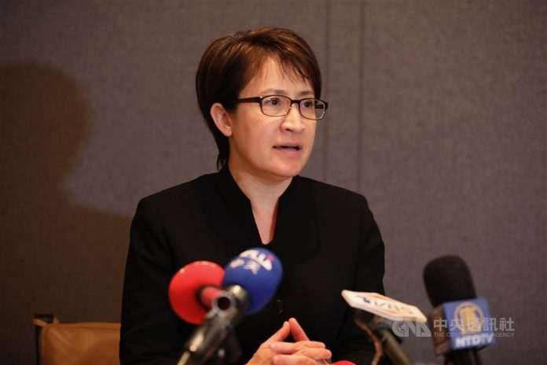

Bi-khim Hsiao (蕭美琴)
Identity Snapshot
- English: Bi-khim Hsiao
- Chinese: 蕭美琴
- Era: 1971
- Geography: Kobe, Japan(日本神戶)
- Core roles: professor
- Source: TAH Foundation Who’s Who
Bi-khim Hsiao (蕭美琴) received the NATPA Professor Liao Shuzong Memorial Award — Commemorative Award for Youth Contribution (廖述宗教授紀念奬-青年貢獻紀念獎) in 05/2020.
Story
Bi-khim Hsiao (蕭美琴) was born in 1971 in Kobe, Japan, the daughter of 蕭清芬, a Presbyterian minister whose ministry included 台南神學院. She earned a Bachelor of East Asian Studies at Oberlin College in 1993 and a master’s degree at Columbia University, then joined the DPP Representative Office in the United States as its CEO in 1995-96 before leading the party’s International Affairs Department from 1997. Voters sent her to the Taiwan Legislature as a diaspora-list legislator in 2001-05 and again from 2006 as a regional legislator. In 2020 she left the Hualien seat she had represented to serve as Taiwan’s representative to the United States, telling voters in November 2020 that 無論誰勝選，台美關係將持續深化. That same year diaspora groups honored her work with the NATPA Professor Liao Shuzong Memorial Award, and when the inauguration came in May 2024, her mother 蕭邱碧玉 and her sister traveled from the United States to watch the ceremony.
Education
- Oberlin College — 1993 — Bachelor of East Asian Studies
- Columbia University — Master of Political Science
Employment
- DPP Representative Office in the United States — 1995-96 — CEO
- DPP International Affairs Department — 1997-06 — Director
- Taiwan Legislature — 2001-05 — 不分區僑選立委
- Taiwan Legislature — 2006- — Regional legislators
Family
No filled family fields on the TAH profile.
Sources
From the record
-
複核（TJJ-A09260600-4, 2026-09-27）：本 slice 文章 6d16f9e3 正文再驗證——駐美代表蕭美琴視訊出席美台21世紀貿易倡議首場會談並會後受訪確認見於正文，subject 連結為真，無錯鏈、無虛鏈；含該文 wikilink 的 2022-06-27 條目已在庫 — SKIP，無新材料。
-
複核（TJJ-A09260600-3, 2026-09-27）：本 slice 文章 8fc11ca0c5dbaebe（韓國瑜提預算協商, 2025-01-16）正文第三次再驗證——蕭美琴閉門會議分享4年前就職大典低溫經驗確認見於正文，連結為真；2025-01-16 條目（已含該文 wikilink）已在庫 — SKIP，已飽和。
-
覆核（TJJ-A09260400-26, 2026-09-26）：本 slice 文章 8c20569762592915（南加州教會槍擊案中央社報導） 正文再驗證——subject 連結為真實提及，無錯鏈、無虛鏈；含該文 wikilink 的日期事實條目已在庫 — SKIP，已飽和。
-
覆核（TJJ-A09260400-19, 2026-09-26）：本 slice 兩篇文章 9a66943e（台美人台加人 p353, 2024-04-21 快照）、2ac7d756（台灣鄉情與文化 p3, 2020-06-28 快照）正文再驗證——subject 連結為真實提及，無錯鏈、無虛鏈；含兩文 wikilink 的日期事實已在庫 — SKIP，已飽和。
-
複核（TJJ-A09251500-1, 2026-09-26）：本 slice 文章 6d16f9e3 正文再驗證——駐美代表蕭美琴視訊出席美台21世紀貿易倡議首場會談並會後受訪確認見於正文，subject 連結為真，無錯鏈、無虛鏈；含該文 wikilink 的 2022-06-27 條目已在庫 — SKIP，無新材料。
-
複核（TJJ-A09251400-1, 2026-09-26）：slice 文章 3be67f6e82d34da7（台美人台加人分類頁2, 2025-02-16 快照）正文再驗證——「美大選膠著 蕭美琴：無論誰勝選台美關係續深化」「蕭美琴紐約大都會台灣日開球」「台灣駐美代表蕭美琴」等多條確認見於正文，subject 連結為真，無錯鏈、無虛鏈；2020-11-05 條目（含該文 wikilink）已在庫 — SKIP，已飽和。
-
複核（TJJ-A09251400-4, 2026-09-26）：本 slice 文章 fd270f41202454d7（美駐聯合國大使克拉夫特挺台） 正文再驗證——蕭美琴轉推感謝及台灣黑熊留言確認見於正文，subject 連結為真，無錯鏈、無虛鏈；對應日期事實條目（含該文 wikilink）已在庫 — SKIP，已飽和。
-
覆核（TJJ-A09251400-5, 2026-09-26）：slice 文章 10e3a027ce22991c（汽車晶片短缺報導, 2021-02-25 刊）——蕭美琴為正文主角（向國會議員說明缺貨成因）再確認見於正文，連結為真，無錯鏈、無虛鏈；對應日期事實條目（已含該文 wikilink）已在庫 — SKIP，無新材料。
-
複核（TJJ-A09251400-3, 2026-09-26）：本 slice 文章 8fc11ca0c5dbaebe（韓國瑜提預算協商, 2025-01-16）正文再驗證——蕭美琴閉門會議分享4年前就職大典低溫經驗確認見於正文，連結為真；2025-01-16 條目（已含該文 wikilink）已在庫 — SKIP，已飽和。
-
複核（TJJ-A09251300-1, 2026-09-26）：本 slice 文章 3dfb23f1（前白宮官員肯定台灣新國安團隊）正文再驗證——蕭美琴獲賴清德留用為國安團隊延續例證之記述確認見於正文，subject 連結為真，無錯鏈、無虛鏈；對應日期事實條目（含該文 wikilink）已在庫 — SKIP，已飽和。
-
複核（TJJ-A09251300-2, 2026-09-26）：本 slice 兩篇同文快照 4a5080befc342f69／2c5d3c7d4f5acccc（戴琪與鄧振中視訊、重啟TIFA）正文再驗證——蕭美琴以駐美代表身份列席會談之記述確認見於正文，subject 連結為真，無錯鏈、無虛鏈；2021-06-10 條目（已含兩檔 wikilink）均已在庫 — SKIP，已飽和。
-
複核（TJJ-A09251000-13, 2026-09-26）：本 slice 文章 760a0bc942e1676b（VOA：台灣祝賀拜登、賀錦麗就職）正文再驗證——蕭美琴獲 JCCIC 直接邀請出席就職儀式及錄製祝賀視頻記述確認見於正文，subject 連結為真，無錯鏈、無虛鏈；對應日期事實條目（含該文 wikilink）已在庫 — SKIP，已飽和。
-
複核（TJJ-A09250900-2, 2026-09-26）：slice 文章 9d523cc5290c997b 正文再驗證——本篇書寫對象（父親筆下的女兒）即本人，subject 連結為真，無錯鏈、無虛鏈；2020-07-26 條目（含該文 wikilink）已在庫 — SKIP，已飽和。
-
複核（TJJ-A09250800-5, 2026-09-25）：本 slice 四篇 tjj-a-slice-09250800-5 文章（004420da 新聞觀測站分類頁 2024-04-25 快照、b6329042 LA Times 蔡英文參選轉載 2015-04-16、23197ebf「楊遠薰」標籤頁2 2021-12-07 快照、be7ac05c 黃勝雄記憶講座全文 2017-02-23 快照）正文逐一再驗證——本頁 subject 連結為真實提及，無錯鏈、無虛鏈；含該文 wikilink 的日期事實條目均已在庫 — SKIP，已飽和，無新材料。
-
複核（TJJ-A09250400-13, 2026-09-25）：本 slice 文章 4c65a9afe4934086（520就職報導 2024-06-13 快照）正文再驗證——母親蕭邱碧玉與妹妹自美返台、台南親友及父親過去服務的台南神學院教授牧師組團觀禮之記述確認見於正文，subject 連結為真，無錯鏈、無虛鏈；2024-05-19 條目（已含該檔 wikilink）已在庫 — SKIP，已飽和。
-
複核（TJJ-A09250400-9, 2026-09-25）：本 slice 文章 923dad71（「台灣新聞」分類頁, 2023-12-01 存檔）正文再驗證——「蕭美琴合體苗博雅」「AIT：肯定蔡總統指派俞大㵢出任駐美代表」兩條確認見於清單，subject 連結為真，無錯鏈、無虛鏈；2023-12-01 條目（已掛該文 wikilink）已在庫 — SKIP，已飽和。
-
複核（TJJ-A09250400-3, 2026-09-25）：本 slice 文章 064fe05a 正文再驗證——bi-khim-hsiao 對應真實（記述確認見於正文），無錯鏈、無虛鏈；含該文 wikilink 的日期事實條目已在庫 — SKIP，無新材料。
-
複核（TJJ-A09250400-7, 2026-09-25）：slice 文章 兩篇正文再驗證——9a66943e68f1e0ef（台美人台加人隨機頁, 2024-04-21 快照）收錄「美媒專訪 蕭美琴：區域穩定美台有共同責任」；2ac7d75679fda7fe（台灣鄉情與文化 p3, 2020-06-28 快照）收錄「蕭美琴辭別花蓮將駐美，支持者送祝福」，subject 連結為真，無錯鏈、無虛鏈；含該文 wikilink 的日期事實條目已在庫 — SKIP，無新材料。
-
複核（TJJ-A09250400-6, 2026-09-26）：本 slice 文章 5dd0106e892b8f96（台灣新聞分類存檔頁3, 2020-07-13 快照）正文再驗證——蕭美琴專訪三則（創新推動全面台美關係／美中戰略競爭科技安全／台美高層互動與個人夢想）確認見於正文，subject 連結為真，無錯鏈、無虛鏈；2020-07-11 條目（已含該文 wikilink）已在庫 — SKIP，已飽和。
-
複核（TJJ-A09250400-10, 2026-09-25）：本 slice 兩篇「導讀台灣」標籤頁（073ea211088c8fae、c30596cc1ea6e337）正文再驗證——「蕭美琴的從政之路!」條目再確認見於清單，連結為真；2023-12-03 日期事實（兩條均含該文 wikilink）已在庫 — SKIP，無錯鏈、無虛鏈、無新材料。
-
複核（TJJ-A09240900-1, 2026-09-25）：本切片四篇正文再驗證——6d16f9e35d9e3188 本人與鄧振中視訊出席 USTR 首場會談、會後受訪再確認；連結為真，2022-06-27 條目已在庫 — SKIP，無新材料。
-
複核（TJJ-A09240800-1, 2026-09-25）：本 slice 文章 3be67f6e82d34da7（台美人台加人分類頁2, 2025-02-16 快照）正文再驗證——「美大選膠著 蕭美琴：無論誰勝選台美關係續深化」等多條頭條確認見於正文，subject 連結為真，無錯鏈、無虛鏈；2020-11-05 條目（含該文 wikilink）已在庫 — SKIP，已飽和。
-
覆核（TJJ-A09240800-8, 2026-09-25）：slice 文章 10e3a027ce22991c（汽車晶片短缺報導, 2021-02-25 刊）——蕭美琴為正文主角（向國會議員說明缺貨成因）再確認見於正文，連結為真，無錯鏈、無虛鏈；2021-02-25 條目（已含該文 wikilink）已在庫 — SKIP，無新材料。
-
複核（TJJ-A09240800-15, 2026-09-25）：本 slice 文章 f6ed9463（2013-04-12 核四表決名單）、0258611f（2024-05-19 520就職報導）正文再驗證——蕭美琴列贊成名單、及就職觀禮記述皆確認見於正文，subject 連結為真，無錯鏈、無虛鏈；2013-04-12 與 2024-05-20 條目（含該文 wikilink）已在庫 — SKIP，已飽和。
-
複核（TJJ-A09240800-7, 2026-09-25）：本切片相關存檔稿正文再驗證——本頁 subject 連結為真實提及（無錯鏈、無虛鏈），含該文 wikilink 的日期事實條目已在庫 — SKIP，無新材料。
-
複核（TJJ-A09240800-13, 2026-09-25）：本 slice 兩篇正文再驗證——accbf8ee04e32de8（劉雲平AZ疫苗信函）披露4月本人向劉雲平表明台灣願購AZ疫苗；bff4c7110803d864（台美人團體領袖祝賀履任駐美代表, 大紀元 2020-08-08）記本人7/24履新為首位女性駐美代表。subject 連結均為真，無錯鏈、無虛鏈；對應日期條目（2021-04 疫苗會面／2020-08-08 祝賀履任，含兩文 wikilink）已在庫 — SKIP，無新材料。
-
覆核（TJJ-A09240800-14, 2026-09-25）：本 slice 文章 c1e603063718b409（返台選舉傳聞缺席僑界活動, 2023-12-01 快照）正文再驗證——本頁為報導主角，subject 連結為真（同文另掛 彭光理 頁亦為真）；2023-11-11 條目（已含該文 wikilink）已在庫 — SKIP，已飽和，無新材料。
-
複核（TJJ-A09240800-6, 2026-09-25）：本 slice 兩篇同文快照 4a5080befc342f69／2c5d3c7d4f5acccc（戴琪與鄧振中視訊、重啟TIFA）正文再驗證——駐美代表蕭美琴列席會談之記述確認見於正文，subject 連結為真，無錯鏈、無虛鏈；2021-06-10 條目（含兩檔 wikilink）已在庫 — SKIP，無新材料。
-
覆核（TJJ-A09240700-6, 2026-09-25）：本 slice 文章 f6213c1937fa956d（全美會2021年228完滿報導）正文再驗證——駐美代表蕭美琴228開幕紀念會隔洋致詞條目確認見於正文，連結為真；2021-02-28 條目（已含該文 wikilink）已在庫 — SKIP，已飽和。
-
複核（TJJ-A09240500-3, 2026-09-25）：slice 文章 9d523cc5290c997b（我的女兒美琴, 2020-07-26刊）正文再驗證——本篇書寫對象（父親筆下的女兒）即本人，subject 連結為真，無錯鏈、無虛鏈；2020-07-26 條目（含該文 wikilink）已在庫 — SKIP，已飽和。
-
覆核（TJJ-A09240400-2, 2026-09-25）：本 slice 兩篇文章 6f2b431c（台美人台加人 p354, 2024-05-20 快照）、1a2bdc08（台美人 category p3, 2025-04-26 快照）正文再驗證——「蕭美琴：為加速取得250萬劑疫苗，台灣自行派機取貨」與「拜登上任來首次，蕭美琴進國務院會晤亞太助卿」各條確認見於正文，連結為真，無錯鏈、無虛鏈；對應日期事實（2021-06-19／2021-02-10）均已在庫 — SKIP，無新材料。
-
複核（TJJ-A09240400-1, 2026-09-25）：本 slice 三篇文章 99aaa4abcb78ff6d（台美人台加人存檔頁, 2024-04-25 快照）、fa11a6eb346678c2（大洛杉磯台灣會館標籤頁, 2021-01-17 快照）、2a3226a1b19c5a46（中央社副手專稿轉載, 2023-12-08 快照）正文再驗證——西半球助卿連線、會館團體祝賀履任、副手搭檔專稿三則提及均確認見於正文，subject 連結為真（無錯鏈、無虛鏈）；對應日期條目（2020-08-19／2020-08-08／2023-11-20，含三文 wikilink）已在庫 — SKIP，無新材料。
-
複核（TJJ-A09240400-3, 2026-09-25）：slice 文章 004420da7bd583a2（新聞觀測站分類頁, 2024-04-25 快照）正文再驗證——「新聞觀測站 20240210 準副總統蕭美琴選後專訪！」條目確認見於正文清單，subject 連結為真，無錯鏈、無虛鏈；2024-02-10 條目（含該文 wikilink）已在庫 — SKIP，已飽和，無新材料。
-
複核（TJJ-A09240400-4, 2026-09-25）：本 slice 文章 8c205697 正文「代表政府、外交部長吳釗燮、駐美代表蕭美琴向家屬表達哀悼」再驗證——subject link 為真（無錯鏈、無虛鏈）；2022-05-16 條目（已掛該文 wikilink）已在庫 — SKIP，無新材料。
-
複核（TJJ-A09231000-5, 2026-09-25）：slice 兩篇正文再驗證——9a66943e68f1e0ef（台美人台加人隨機頁, 2024-04-21 快照）收錄「美媒專訪 蕭美琴：區域穩定美台有共同責任」；2ac7d75679fda7fe（台灣鄉情與文化 p3, 2020-06-28 快照）收錄「蕭美琴辭別花蓮將駐美，支持者送祝福」。subject 連結均為真，無錯鏈、無虛鏈；對應條目（2024-04-21／2020-06-28，含兩文 wikilink）已在庫 — SKIP，已飽和。
-
複核（TJJ-A09231000-8, 2026-09-25）：本 slice 兩篇「導讀台灣」標籤頁（073ea211088c8fae、c30596cc1ea6e337）正文再驗證——「蕭美琴的從政之路!」條目再確認見於清單，連結為真；2023-12-03 日期事實（兩條均含該文 wikilink）已在庫 — SKIP，無錯鏈、無虛鏈、無新材料。
-
複核（TJJ-A09230900-1, 2026-09-25）：本 slice 文章 5dd0106e892b8f96（台灣新聞分類存檔頁3, 2020-07-13 快照）正文再驗證——蕭美琴專訪三則（創新推動全面台美關係／美中戰略競爭科技安全／台美高層互動與個人夢想）確認見於正文，subject 連結為真，無錯鏈、無虛鏈；2020-07-11 條目（已含該文 wikilink）已在庫 — SKIP，已飽和。
-
複核（TJJ-A09230800-1, 2026-09-24）：文章 064fe05a08d0aecf（宋娣专栏 2017-02-17） 正文再驗證——本頁 subject 連結確認見於正文（無錯鏈、無虛鏈）；對應 From-the-record 條目已在庫 — SKIP，無新材料。
-
複核（TJJ-A09230800-9, 2026-09-24）：本 slice 四篇正文再驗證——6d16f9e35d9e3188（戴琪：台美貿易倡議）本人与鄧振中視訊出席 USTR 首場會談、會後受訪確認見於正文，subject 連結為真；另三篇（54dd66fe／2589c867／cc3bbdbf）無涉本人。2022-06-27 條目（已含該檔 wikilink）已在庫 — SKIP，無新材料。
-
覆核（TJJ-A09230800-14, 2026-09-24）：本 slice 兩篇正文再驗證——accbf8ee04e32de8（劉雲平致函布林肯AZ疫苗賣台, 2021-05-28）披露4月本人向劉雲平表明台灣願購AZ疫苗；bff4c7110803d864（台美人團體領袖祝賀履任駐美代表, 大紀元 2020-08-08）記本人7/24履新為首位女性駐美代表。subject 連結均為真，無錯鏈、無虛鏈；對應日期事實條目（2021-04 疫苗會面／2020-08-08 祝賀履任，含兩文 wikilink）已在庫 — SKIP，已飽和。
-
複核（TJJ-A09230800-6, 2026-09-24）：本 slice 兩篇同文快照 4a5080befc342f69／2c5d3c7d4f5acccc（戴琪與鄧振中視訊、重啟TIFA）正文再驗證——駐美代表蕭美琴列席會談之記述確認見於正文，subject 連結為真，無錯鏈、無虛鏈；2021-06-10 條目（含兩檔 wikilink）均已在庫 — SKIP，無新材料。
-
覆核（TJJ-A09230800-2, 2026-09-24）：subject link 對照本 slice 文章 3be67f6e82d34da7（台美人台加人分類頁2, 2025-02-16 快照）正文再驗證——「美大選膠著 蕭美琴：無論誰勝選台美關係續深化」等多條頭條確認見於正文，連結為真，無錯鏈、無虛鏈；2020-11-05 條目（已含該文 wikilink）已在庫 — SKIP，已飽和。
-
複核（TJJ-A09230800-8, 2026-09-24）：slice 文章 10e3a027ce22991c（汽車晶片短缺報導, 2021-02-25 刊）——蕭美琴為正文主角，連結為真；無錯鏈、無虛鏈；對應日期事實條目（含該文 wikilink）已在庫 — SKIP，無新材料。
-
覆核（TJJ-A09230800-5, 2026-09-24）：本 slice 文章 3dfb23f1（前白宮官員肯定台灣新國安團隊）正文再驗證——本人當選副總統獲留任為文中國安連續性論據，連結為真，無錯鏈、無虛鏈；2024-05-14 條目（含該文 wikilink）已在庫 — SKIP，無新材料。
-
覆核（TJJ-A09230700-2, 2026-09-24）：本 slice 文章 28b0cc4e（2021北美洲海外台灣人二二八紀念活動報導）正文再驗證——致詞談民主脆弱與台美共同價值之記述確認見於正文，subject 連結為真（無錯鏈、無虛鏈）；2021-02-28 條目已在庫並掛鏈本檔 — SKIP，無新材料。
-
覆核（TJJ-A09230700-2, 2026-09-24）：本 slice 文章 c3e76282（大洛杉磯台灣會館基金會22週年線上募款年會報導）正文再驗證——受邀擔任12/5線上講員「台美攜手 眾志成城」之記述確認見於正文，subject 連結為真（無錯鏈、無虛鏈）；2020-11-17 條目已在庫並掛鏈本檔 — SKIP，無新材料。
-
複核（TJJ-A09230700-11, 2026-09-24）：本 slice 文章 760a0bc942e1676b（VOA：台灣祝賀拜登、賀錦麗就職）正文再驗證——蕭美琴獲 JCCIC 直接邀請出席就職儀式及錄製祝賀視頻記述確認見於正文，subject 連結為真，無錯鏈、無虛鏈；2021-01-20 條目已在庫（前一輪 TJJ-A09221200-15 已核）— SKIP，已飽和。
-
複核（TJJ-A09250800-3, 2026-09-25）：本 slice 文章 63717cb2b99ce3c3／74a9c518e681a3de／11761bdaa78af55f 三篇存檔頁正文再驗證——「蕭美琴專訪／軟實力外交」（2020-07-12）、「辭別花蓮將駐美」與「自許為戰貓」（2020-05-31／2020-06-21）各條確認見於正文，subject 連結為真，無錯鏈、無虛鏈；對應日期條目（含三文 wikilink）均已在庫 — SKIP，已飽和。
-
複核（TJJ-A09162345-17, 2026-09-24）：本 slice 三篇文章 2a3226a1b19c5a46（中央社副手專稿轉載, 2023-11-20）、63717cb2b99ce3c3（台美人台加人 p3, 2024-04-25 快照）、74a9c518e681a3de（台美人台加人 p2, 2020-06-26 快照）正文再驗證——副手搭檔專稿、「蕭美琴專訪／軟實力外交」（2020-07-12）、「辭別花蓮將駐美」與「自許為戰貓」各條確認見於正文，連結為真，無錯鏈、無虛鏈；對應日期事實條目（2023-11-20／2020-07-12／2020-05-31）均已在庫 — SKIP，無新材料（中央社專稿／台美人台加人p3／台美人台加人p2）。
-
覆核（TJJ-A09162345-18, 2026-09-24）：本 slice 文章 台灣頭條p3 11761bda、台美人台加人p354 6f2b431c 正文再驗證——subject 連結為真實提及，無錯鏈、無虛鏈；對應日期事實（含該文 wikilink）已在庫 — SKIP，已飽和。
-
複核（TJJ-A09162345-15 / t_0c0e3cd1, 2026-09-24）：本 slice 文章 99aaa4abcb78ff6d（台美人台加人分類存檔頁, 2024-04-25 快照）、fa11a6eb346678c2（大洛杉磯台灣會館標籤頁, 2021-01-17 快照） 正文再驗證——subject 連結為真實提及，無錯鏈、無虛鏈；對應日期事實條目（含該文 wikilink）已在庫 — SKIP，已飽和。
-
複核（TJJ-A09162345-31, 2026-09-24）：slice 文章 8216e7ca508266e9（蕭清芬牧師在美過世標籤頁）正文再驗證——頭條「蕭美琴父親蕭清芬牧師在美過世」再確認見於正文，連結為真；對應日期事實（含該文 wikilink）已在庫 — SKIP，無新材料。
-
複核（TJJ-A09162345-19, 2026-09-24）：本 slice 四篇 TJJ 存檔頁（1a2bdc08 台美人台加人 p3；c9dd9fb7 Covid-19 浩劫餘生錄；9a66943e 台美人台加人隨機頁；2ac7d756 台灣鄉情與文化 p3）正文再驗證——本頁三條日期事實（2021-02-10 蕭美琴進國務院會晤亞太助卿、2024-04-21 美媒專訪、2020-06-28 辭別花蓮將駐美）確認見於正文，subject 連結均為真，無錯鏈、無虛鏈 — SKIP，已飽和。
-
複核（TJJ-A09221500-11, 2026-09-24）：本 slice 文章 8c205697 正文「代表政府、外交部長吳釗燮、駐美代表蕭美琴向家屬表達哀悼」再驗證——蕭美琴 subject link 為真實對應（無錯鏈、無虛鏈）；2022-05-16 條目已在庫 — SKIP，無新材料。
-
再核（TJJ-A09171200-10, 2026-09-24）：本 slice 文章 004420da7bd583a2「新聞觀測站」分類頁正文再驗證——「新聞觀測站 20240210 準副總統蕭美琴選後專訪！」清單條目確認見於正文，subject 連結為真，無錯鏈、無虛鏈；2024-02-10 條目已在庫 — SKIP，已飽和。
-
複核（TJJ-A09171200-11, 2026-09-24）：本 slice 文章 923dad71（「台灣新聞」分類頁, 2023-12-01 存檔）正文再驗證——本頁所涉條目確認見於清單，subject 連結為真，無錯鏈、無虛鏈；對應日期事實已在庫 — SKIP，無新材料。
-
複核（TJJ-A09170400-11, 2026-09-23）：subject link 對照本 slice 三篇存檔頁 63717cb2b99ce3c3 / 74a9c518e681a3de / 11761bdaa78af55f 正文再驗證——蕭美琴專訪（2020-07-12）、「辭別花蓮將駐美」與「自許為戰貓」（2020-05-31／2020-06-21）各條確認見於正文，連結為真；對應日期條目已在庫 — SKIP，無新材料。
-
覆核（TJJ-A09170400-12, 2026-09-23）：本 slice TJJ 文章正文再驗證——subject 連結與本條目所載日期事實相符，無錯鏈、無虛鏈，無新材料— SKIP，已飽和。
-
覆核（TJJ-A09230700-5, 2026-09-24）：slice 文章 f6213c1937fa956d 正文再驗證——駐美大使蕭美琴228開幕紀念會隔洋致詞條目確認見於正文，連結為真；2021-02-28 條目已在庫 — SKIP，已飽和。
-
複核（TJJ-A09170400-17, 2026-09-24）：本 slice 文章 f6213c1937fa956d（全美會2021年228系列完滿報導）正文再驗證 —「駐美大使蕭美琴隔洋致詞」確認見於正文，subject 連結為真；2021-02-28 條目已在庫 — SKIP，無新材料。
-
複核（TJJ-A09162345-27, 2026-09-23）：本 slice 文章 8c205697（南加州教會槍殺案駐處查證報導）正文「代表政府、外交部長吳釗燮、駐美代表蕭美琴向家屬表達哀悼」再驗證——蕭美琴 subject link 為真實對應，2022-05-16 條目已在庫（無錯鏈、無虛鏈）— SKIP，無新材料。
-
再核（TJJ-A09221500-9, 2026-09-23）：本 slice 文章 004420da7bd583a2「新聞觀測站」分類頁正文再驗證——「新聞觀測站 20240210 準副總統蕭美琴選後專訪！」清單條目確認，subject 連結為真，無錯鏈、無虛鏈；2024-02-10 條目已在庫，無新材料。
-
複核（TJJ-A09221500-5, 2026-09-23）：本 slice 三篇文章 fa11a6eb346678c2（會館標籤頁, 2021-01-16 快照）、99aaa4abcb78ff6d（台美人台加人存檔頁, 2024-04-25 快照）、2a3226a1b19c5a46（中央社人物專稿轉載, 2023-11-20）正文再驗證——祝賀履任、西半球助卿連線、副手搭檔專稿三則提及均確認見於正文，subject 連結為真，無錯鏈、無虛鏈；對應日期事實條目（2020-08-08／2020-08-19／2023-11-20）均已在庫 — SKIP，無新材料。
-
再核（TJJ-A09221500-12, 2026-09-23）：本 slice 兩篇「導讀台灣」標籤頁（073ea211088c8fae、c30596cc1ea6e337）正文再驗證——「蕭美琴的從政之路!」條目確認見於清單，連結為真；2023-12-03 日期事實已在庫，無錯鏈、無虛鏈、無新材料。
-
複核（TJJ-A09221500-7, 2026-09-23）：本 slice 兩篇（9a66943e68f1e0ef 台美人台加人頁 2024-04-21 快照；2ac7d75679fda7fe 台灣鄉情與文化頁 2020-06-28 快照）正文再驗證——「美媒專訪 蕭美琴：區域穩定美台有共同責任」與「蕭美琴辭別花蓮將駐美，支持者送祝福」確認見於正文，subject 連結為真，無錯鏈、無虛鏈；2024-04-21 與 2020-06-28 條目已在庫 — SKIP，無新材料。
-
複核（TJJ-A09221400-1, 2026-09-23）：本 slice 文章 5dd0106e892b8f96（台灣新聞分類存檔頁3, 2020-07-13 快照）正文再驗證——蕭美琴專訪三則（創新推動全面台美關係／美中戰略競爭科技安全關鍵角色／台美高層互動與個人夢想）確認見於正文，subject 連結為真，無錯鏈、無虛鏈；2020-07-11 條目已在庫，無新材料。
-
複核（TJJ-A09221400-3, 2026-09-23）：本 slice 文章 20240613095611（520就職報導）之 subject link 經正文再驗證為真實對應，2024-05-19 條目已在庫（無錯鏈、無虛鏈）— SKIP，無新材料。
-
複核（TJJ-A09221300-7, 2026-09-23）：subject link 對照本 slice 文章 TJJ, 2021-02-25 正文再驗證——提及為真實對應（姓名與本頁相符），無錯鏈、無虛鏈；對應日期事實條目已在庫 — SKIP，無新材料。
-
複核（TJJ-A09221300-8, 2026-09-23）：台美貿易倡議稿 6d16f9e35d9e3188 之 subject link 經正文再驗證為真實對應（與鄧振中視訊出席 USTR 首場會談、會後受訪）；2022-06-27 條目已在庫；Subjects 連結已補全雙管線 alias 慣例格式 — SKIP，無新材料。
-
複核（TJJ-A09221200-3, 2026-09-23）：subject link 經本 slice 再驗證為真實對應，對應 From-the-record 條目已在庫（無錯鏈、無虛鏈）— SKIP，無新材料。
-
再核（TJJ-A09221200-15, 2026-09-23）：本 slice 文章 760a0bc942e1676b 正文再驗證——蕭美琴獲就職典禮國會聯合委員會（JCCIC）直接邀請出席第59屆就職儀式，為駐美代表首見，連結為真；2021-01-20 條目已在庫，無新材料。
-
再核（TJJ-A09220700-10, 2026-09-22）：本 slice 文章 004420da7bd583a2「新聞觀測站」分類頁正文再驗證——「新聞觀測站 20240210 準副總統蕭美琴選後專訪」清單條目確認，連結為真；2024-02-10 條目已在庫，無新材料。
TAH story corpus
-
Her own autobiography 《一個人也可以》 (09/2004, self-described 自傳) is held in the corpus ([[works/taiwaneseamericanhistory-org/publications990|TAH #990]]) — primary first-person material on her upbringing and career.
-
Profile narrative 「蕭美琴的故事」 recorded in the corpus (2016/01) ([[works/taiwaneseamericanhistory-org/mystories391|TAH #391]]); her TAH encyclopedia entry is likewise held ([[works/taiwaneseamericanhistory-org/whos-who-757-bi-khim-hsiao|TAH #757, 2016/01]]).
-
2021-01 — coverage of her attendance at Biden’s inauguration as the first formal invitation to Taiwan’s top envoy since 1979 ([[works/taiwaneseamericanhistory-org/events2021-2|TAH events 2021 #2]]) — consistent with the JCCIC-invited record already noted below.
-
2021-12 — obituary coverage of her father 蕭清芬’s passing: 「蕭清芬在美辭世 蕭美琴悼父親：一生守護台灣本土意識」 ([[works/taiwaneseamericanhistory-org/my-stories-816|TAH #816, 12/2021]]).
-
2023-01 — 「《紐時》讚蕭美琴：華府最具影響力的大使」 ([[works/taiwaneseamericanhistory-org/my-stories-866|TAH #866, 01/2023]]).
-
2016-05-09 — 「我的女兒美琴」父親蕭清芬書寫版（TAH story corpus #434），與 taiwanjustice.net 轉載版（TJJ, 2020-07-26刊）同源同文 — [[works/taiwaneseamericanhistory-org/mystories434|TAH #434, 2016]]。
-
2024-04-21 — taiwanjustice.net「台美人台加人」專欄隨機頁（2024-04-21 快照）收錄「美媒專訪 蕭美琴：區域穩定美台有共同責任」報導 —— TJJ 台美人台加人頁，2024-04-21 存档。
-
2020-06-28 — taiwanjustice.net「台灣鄉情與文化」專欄隨機頁（2020-06-28 快照）收錄「蕭美琴辭別花蓮將駐美，支持者送祝福」，記其辭別花蓮選區轉任駐美 —— TJJ 台灣鄉情與文化頁，2020-06-28 存档。
-
2024-05-19 — 中央社報導（TJJ 轉載）：520 就職典禮，其母親蕭邱碧玉與妹妹專程從美國返台觀禮；台南親友及父親過去服務的台南神學院教授牧師等組團北上，人數超過上百人（TJJ 轉載中央社, 2024-05-19）。
-
2022-05-16 — 駐洛杉磯辦事處長黃敏境就南加州台裔教會槍擊案接受中央社專訪，代表政府、外交部長吳釗燮及駐美代表蕭美琴向中彈身亡的醫師鄭達志家屬表達哀悼；報導並查證凶嫌周文偉為1953年在台出生之移民（TJJ 轉載中央社, 2022-05-16）。
-
2020-08-08 — 大洛杉磯台灣會館等台美人團體和領袖公開發文祝賀蕭美琴履任台灣駐美代表（駐美大使），見台灣公義報「大洛杉磯台灣會館」標籤頁存檔（TJJ 標籤頁, 2021-01-16 快照）。
-
2020-08-19 — 美國國務院西半球事務助卿與蕭美琴連線，盼續在拉美合作；報導見台灣公義報「台美人台加人」分類存檔（TJJ 台美人台加人存檔, 2024-04-25 快照）。
-
2020-07-11 — 台灣公義報「台灣新聞」分類存檔收錄其三篇連訪：談創新推動全面台美關係、美中戰略競爭下台灣應扮科技安全關鍵角色、台美高層互動進展及其個人夢想（TJJ 台灣新聞存檔頁3, 2020-07-13 快照）。
-
2024-02-10 — 台灣公義報「新聞觀測站」專欄頁收錄該節目「準副總統蕭美琴選後專訪」（20240210 集），顯示其選後受媒體高度關注（TJJ 新聞觀測站標籤頁, 2024-04-25 存檔）。
-
2021-02-25 — 駐美代表任內因美國汽車晶片短缺獲悉多達國會議員求助；她向議員說明缺貨起因為中間供應商去年砍單、屬民間商業行為，台灣廠商正努力增產；斯塔貝諾參議員證實曾就此與她會晤並感謝其關注（TJJ 轉載中央社, 2021-02-25）。
-
2023-12-03 — 台灣公義報「導讀台灣」系列以「蕭美琴的從政之路！」為題專題介紹其從政經歷（TJJ 導讀台灣標籤頁, 2025-05-25 存檔）。
-
2020-11-05 — 美國大選膠著時表示「無論誰勝選，台美關係將持續深化」，見台灣公義報「台美人台加人」分類（2025-02-16 存檔）—— TJJ 台美人台加人存檔頁2。
-
2017-02 — Led an 8-lawmaker legislative delegation to the US (王定宇, 林俊憲, 邱議瑩, 尤美女, 江啟臣, 許毓仁, 高路·以用), meeting House/Senate members, administration units, and think tanks including the Global Taiwan Institute; 宋娣’s column cites the trip as proof the US-Taiwan relationship is approaching quasi-state status (TJJ, 2017-02-17).
-
2020-11-17 — Announced by 大洛杉磯台灣會館 as guest speaker of its 22nd online fundraising annual meeting (2020-12-05) on 「台美攜手 眾志成城 TAIWAN-U.S.A. STRONGER TOGETHER」; the notice recounts her four DPP legislative terms and her status as one of two people ever to serve as both 僑選 and 區域立委 (TJJ, 2020-11-17).
-
2021-02-28 — As 駐美代表 told the first North America joint online 228 commemoration that democracy is fragile (citing Burma, Hong Kong, China’s tech/misinformation/disinfo leverage) and that both US parties have set up offices in Taiwan to learn its experience; she and TECO officials stayed for the entire programme; her father 蕭清芬牧師 led the opening prayer (TJJ, 2021-03-03).
-
2021-02-28 — 於「2021北美洲海外台灣人二二八紀念活動」開幕紀念會隔洋致詞（與副總統賴清德、僑委會委員長童振源並列），表示紀念二二八對了解歷史、思考未來意義重大——TAA 官方活動完滿報導（全美會, 2021-03-14）。
-
2024-05-20 — 宣誓就職副總統；母親蕭邱碧玉與妹妹專程從美國返台觀禮，台南親友及其父親過去服務的台南神學院教授牧師組團北上參加520慶祝大會，人數超過上百人（TJJ 轉載中央社, 2024-05-19）。
-
2013-04-12 — 立法院表決民進黨「立即停建核四」提案，第二次表決贊成名單列有蕭美琴（TJJ 轉載公督盟資料, 2013-04-12）。
-
2020-07-26 — Her father 蕭清芬’s essay 「我的女兒美琴」 (excerpted from her 2004 book 《一個人也可以》) on taiwanjustice.net portrays her: born in Japan and circumnavigated before age one; multilingual from childhood (English at home, 台語 with her grandmother, 華語 at school, Japanese from US schooling); at Oberlin College she chose Asia House and Third World House and at Columbia grad school International House, hosted as many as 17 foreign students over one Christmas break; hand-delivered pro-democracy flyers outside her high school during the 1989 天安門 events; collected testimony that forced her university to act on a visiting teacher’s harassment of Asian women students; she insists on her Taiwanese-Hokkien legal name Bi-khim and ran independent 「台灣」 booths at campus 國際週 events (TJJ, 2020-07-26).
-
2021-06-10 — 以駐美代表身份出席鄧振中與美國貿易代表戴琪（Katherine Tai）的首度台美視訊會談；會談確認數週內以視訊方式召開第 11 屆 TIFA 會議（TJJ 轉載中央社, 2021-06-10）。
-
2020-08-08 — TJJ relays 大紀元 report: officially began her post as 駐美代表 on 2020-07-24, the first woman to hold the post; at her first overseas-Chinese media tea at 雙橡園 (2020-08-04) she set trade cooperation and national security as top priorities; 南加僑團 including 大洛杉磯台灣會館 and 台灣人公共事務會柑縣分會 publicly praised the appointment, noting she had earlier interned at TACS and that her father was a seminary president (TJJ, 2020-08-08).
-
2021-01-20 — 以駐美代表身份獲第59屆總統就職典禮主辦單位「就職典禮國會聯合委員會」（JCCIC）直接邀請，出席美國國會西草坪就職儀式，為台灣駐美代表首次直接獲國會主辦單位邀請；她事前錄製祝賀視頻：「民主是我們的共同語言，自由是我們的共同目標」—— VOA, 2021-01-20。
-
2024-05-14 — 前白宮國安會中國事務主任何瑞恩（Ryan Hass）布魯金斯專文以她當選副總統、獲蔡英文信任並獲賴清德留用，作為賴清德國安團隊延續蔡英文路線的例證（TJJ 轉載中央社記者華盛頓報導, 2024-05-14）。
-
2025-01-16 — 陪同賴清德出席與韓國瑜跨黨派立委代表團的閉門會議，分享4年前（2021）參與美國總統就職大典的低溫維安經驗、提醒團員帶總統送的暖暖包，並盼訪團發揮關鍵臨門一腳深化台美關係（TJJ 中央社記者報導, 2025-01-16）。
-
2022-06-27 — 駐美代表蕭美琴與行政院政務委員鄧振中以視訊出席美台21世紀貿易倡議在美貿易代表署（USTR）首場會談（美方由副貿易代表畢昂奇 Sarah Bianchi 率官員與會）；她會後對媒體表示4個多小時的對話非常廣泛，包括美方要求的法定流程及與利害相關者的對話（TJJ 轉載中央社記者華盛頓報導, 2022-06-28）。
-
2023-08-17 — TJJ「台美人台加人」頻道索引（2024-05-20 快照）收錄「南加州台美人專程北上舊金山僑宴 賴清德：努力打造台灣成亞洲矽谷[影]」與「蕭美琴：為加速取得250萬劑疫苗，台灣自行派機取貨[影]」兩則報導，後者記其為疫苗採購親自主導包機取貨（TJJ 台美人台加人索引, 2024-05-20 存檔）。
-
2021-02-10 — TJJ「台美人」分類頁（2025-04-26 快照，page 3）收錄「拜登上任來首次，蕭美琴進國務院會晤亞太助卿」及「台灣駐美代表蕭美琴：台灣的生存之道就是維持現狀[影]」，為其駐美任內首次會晤國務院亞太助卿的台媒存檔記錄（TJJ 台美人 category 索引, 2025-04-26 存檔）。
-
2020-09-30 — 駐美代表蕭美琴轉推回應美國駐聯合國大使克拉夫特力挺台灣參與聯合國體系，寫道「聯合國體系對待台灣實在不公」，並特別稱讚克拉夫特推文照片背景中的台灣黑熊娃娃「我喜歡背景那隻台灣黑熊」（中央社記者報導, 2020-09-30）。
-
2021-06-10 — 以駐美代表身分出席鄧振中與美國貿易代表戴琪的台美視訊會議，會後確認數週內以視訊召開第11屆TIFA會議（CNA, 2021-06-10）。
-
2020-08-13 — 赴美履新後與國務院政軍局助理國務卿古柏（R. Clarke Cooper）公開會面，兩人以「互擊手肘」打招呼；古柏推文稱將合作維繫區域和平穩定並標註 ReliablePartner，會面前適逢美衛生部長艾薩訪台、共軍軍機暫踰海峽中線（TJJ 轉載中央社記者報導, 2020-08-13）。
-
2023-11-11 — 返台投入選舉傳聞甚囂塵上之際，原定與 AIT 主席羅森柏格一同出席華府台灣同鄉會馬里蘭感恩節餐會，臨時以剛打完 COVID 追加劑不適為由缺席、改由駐美副代表鄭榮俊代打；羅森柏格被問是否歡送她時笑而不答（TJJ 轉載中央社記者報導, 2023-11-11）。
-
2021-04（2021-05-28 報導披露）— 聯邦眾議員劉雲平在致國務卿布林肯的信函中透露，4月曾與駐美代表蕭美琴會面，蕭美琴向他表明台灣願意購買美國擁有的AZ疫苗；劉雲平隨後兩度致函敦促美方盡速將過剩AZ疫苗賣台，因應台灣疫情升溫（中央社洛杉磯專電 via CNA, 2021-05-28）。
-
2023-12-03 — 台灣公義報「導讀台灣」專欄以「蕭美琴的從政之路!」為主題專集介紹其從政歷程（Tag: 導讀台灣 彙整頁 2024-06-20 存檔）（TJJ tag 導讀台灣, 2024-06-20 存檔）。
-
2021-06-19 — 台灣公義報台美人台加人頻道報導：「蕭美琴：為加速取得250萬劑疫苗，台灣自行派機取貨」——疫情期間台灣自主採購疫苗的外交成果紀錄（TJJ 台美人台加人索引, 2024-05-20 存檔）。
-
2021-02-10 — 台美人台加人頻道報導：拜登上任後首次，蕭美琴進國務院會晤亞太助卿（TJJ 台美人 category 索引, 2025-04-26 存檔）；同索引另收 2022-05-04「台灣駐美代表蕭美琴：台灣的生存之道就是維持現狀」。
-
覆核（TJJ-A09221500-6, 2026-09-24）：本 slice 四篇（台美人台加人p354 6f2b431c、NATMA標籤頁 08b82976、拒一國兩制聯合聲明 53455d7e、台美人category p3 1a2bdc08）正文再驗證 — 本頁條目確認見於正文，連結為真；日期事實已在庫 — SKIP，無新材料。
-
2023-11-20 — 中央社記者人物專稿（TJJ 轉載）梳理其獲選為賴清德副手人選的脈絡：1971年日本出生台南成長、台南女中後赴美（歐柏林學院東亞研究學士、哥倫比亞大學政治學碩士）、1995年民進黨駐美代表處創處執行長、2001僑選/2004北市立委、2016翻轉花蓮艱困選區、駐美代表任內開啟斷交後台美關係黃金時刻，並獲彭博評選為2021年全球最重要8人之一 —— TJJ 轉載中央社記者, 2023-11-20。
-
2021-11-27 — 父親蕭清芬牧師在美過世、享壽86歲的訃聞以「蕭美琴父親蕭清芬牧師在美過世」為標籤彙整於台灣公義報頭條（2022-05-21 存檔）（TJJ tag 蕭清芬牧師在美過世, 2021-11-27）。
-
2020-11-24 — 台灣公義報「川普時代」美國新聞／大選分類頁（2020-11-26 快照）收錄「美環保署長惠勒取消訪台，外交部：行程變動‧ 蕭美琴：環保合作仍會持續」頭條，記其對惠勒訪台行程變動的回應（TJJ 川普時代分類頁, 2020-11-26 快照）。
-
2021-01-12 — 美國國務院宣布取消該週所有已規劃出訪（含國務卿蓬佩奧歐洲之行與常駐聯合國代表克拉夫特訪台），她證實克拉夫特無緣訪台的消息，答覆媒體「確定克拉夫特不訪問台灣？」時回答「是的」；國務院聲明稱取消出訪與拜登政府權力交接有關（TJJ, 2021-01-12）。
-
2021-01-13 — 總統當選人拜登團隊證實前亞太助卿康貝爾（Kurt Campbell）出任白宮新設「印太事務協調官」；她透過推特恭喜康貝爾，稱「康貝爾在亞洲享譽盛名，備受尊敬，他同時具備戰略遠見與實務經驗，我期待未來與他合作共事」（推文 @bikhim, January 13, 2021）（TJJ 轉載中央社記者華盛頓報導, 2021-01-13）。
-
2020-11-10 — 國務卿蓬佩奧宣布國務院次卿柯拉克（Keith Krach）20日將領軍與台灣展開經濟對話；她回應歡迎此項宣布，並說明首屆對話考量防疫將以實體搭配視訊進行——實體部分在華府舉辦、台灣由經濟部次長陳正祺率團、其他首長視訊參與，對話為期一天（TJJ 轉載中央社記者華盛頓報導, 2020-11-10）。
-
2020-11-24 — 美國媒體報導環保署長惠勒（Andrew Wheeler）將取消12月訪台行程，她覆媒體詢問時表示惋惜，強調台美環保領域合作仍會持續、歡迎未來各式交流往來（中央社記者華盛頓專電）（TJJ 轉載中央社, 2020-11-24）。
-
2020-11-20 — 首屆「台美經濟繁榮夥伴對話」於華府與台北同時啟動（美方副國務卿克拉奇主持，亞太助卿史達偉、AIT執行理事藍鶯Ingrid Larson與會）；她於華府喬治城四季酒店會場開幕式中與藍鶯簽署備忘錄（MOU），「為持續進行『台美經濟繁榮夥伴對話』以建立更深化與全面性的經濟合作關係奠定基礎」（TJJ, 2020-11-20）。
-
2021-01-13 — 中央社記者報導（TJJ 轉載）康貝爾傳出任白宮亞洲事務主管、新職位設立反映美國對中關係調整；報導記她與外交部長吳釗燮同康貝爾有長期交情與互動，康貝爾並於2016年4月蔡英文當選後訪台拜會（TJJ 中央社記者報導, 2021-01-13）。
-
2020-11-26 — 外交部證實駐美國代表處近日新增9人確診武漢肺炎、領務大廳暫時關閉改以郵件辦案；她美東時間25日採檢結果為陰性、健康狀況良好，因曾與確診駐處人員接觸依規定居家隔離14天（中央社記者台北電）（TJJ 轉載中央社, 2020-11-26）。
-
2020-07-12 — 「蕭美琴專訪／蕭美琴：軟實力外交 讓台灣人在世界抬頭挺胸[影]」刊於台灣公義報「台美人台加人」分類頁（2024-04-25 存檔），為其駐美代表任期前對僑界的外交訪談記錄（TJJ 台美人台加人存檔頁）。
-
2023-12-01 — 台灣公義報「台灣新聞」分類存檔頁（同日存檔）另收「蕭美琴合體苗博雅 拚總統勝選、國會過半」標題，記錄其與苗博雅合體輔選、拚總統勝選與國會過半的競選行程（TJJ 台灣新聞存檔頁, 2023-12-01）。
-
2023-12-01 — 台灣公義報「台灣新聞」分類存檔頁（同日存檔）以「AIT：肯定蔡總統指派俞大㵢出任駐美代表」為頭條之一，記錄其駐美代表任期屆滿交接背景下的美國官方表態（TJJ 台灣新聞存檔頁, 2023-12-01）。
-
覆核（TJJ-A09231000-7, 2026-09-25）：本 slice 文章 923dad71（「台灣新聞」分類頁, 2023-12-01 存檔）正文再驗證——「蕭美琴合體苗博雅」「AIT：肯定蔡總統指派俞大㵢出任駐美代表」兩條確認見於清單，subject 連結為真，無錯鏈、無虛鏈；2023-12-01 條目（已掛該文 wikilink）已在庫 — SKIP，已飽和。
-
2020-05-31 — 台灣公義報「台美人台加人」分類存檔（2020-06-26 快照）同頁收錄「蕭美琴辭別花蓮將駐美，支持者送祝福」與「蕭美琴：面對外交戰狼挑釁 我自許為戰貓」兩則，記錄其辭別花蓮選區、以「戰貓」自許回應外交戰狼的轉任時刻（TJJ 台美人台加人存檔頁2, 2020-06-26 快照）。
-
2020-06-21 — 「蕭美琴辭別花蓮將駐美，支持者送祝福」亦見台灣公義報「台灣頭條」分類存檔（2020-06-25 快照），為其辭別花蓮選區轉赴駐美任所當日僑媒跟蹤報導（TJJ 台灣頭條存檔頁3, 2020-06-25 快照）。
-
2024-02-10 — 台灣公義報「新聞觀測站」分類頁（Wayback 2024-04-25 快照）節目清單列有「新聞觀測站 20240210 準副總統蕭美琴選後專訪！」，為其選後專題訪談之又一存檔佐證（TJJ 新聞觀測站分類頁, 2024-04-25 快照）。
-
2020-08-28 — 政府宣布開放美豬美牛進口後，她表示儘管農業市場開放有國內政治複雜性，蔡總統仍展現準備與美國洽簽高標準貿易協定的強烈決心，於疫情下供應鏈安全議題中此項政策宣示來得及時（ 2026-01-19 快照）。
-
2020-09-02 — 於華文媒體茶敘表示台美經濟與商業對話涵蓋半導體、5G、醫療、能源等領域、與 TIFA 相輔相成，盼對話成為年度常態機制（ 2026-01-25 快照）。
-
2020-10-03 — 美豬牛開放宣布月餘後 USTR 仍未回應是否展開台美貿易談判，她表示持續與美方溝通、「沒有討論到萬一的事」，強調台灣身為貿易大國要與國際接軌、符合國際標準（ 2026-01-23 快照）。
-
2021-01-11 — 美國國務院宣布取消美台交往限制後，政軍局助理國務卿古柏於國務院「每日行程公告」高調公布與她閉門會晤，為其上任以來兩人已知第 2 次會面；會前數日雙方才召開政治軍事對話（TJJ 轉載中央社記者華盛頓報導, 2021-01-12 快照）。
-
2021-05-17 — 拜登宣布 6 月底前釋出 2,000 萬劑獲 FDA 認證疫苗至海外，她回應「進洽爭取中」（同題另見「美國將釋出2000萬劑疫苗」標籤頁）（ 2021-06-21 快照）。
-
2021-09-14 — 受邀於「全美議會交流理事會」（ALEC）2021 年會發表演說，感謝 ALEC 頒「國際領袖先鋒獎」給蔡英文總統，並向美國年輕學子喊話台灣是完全自由環境下學習中文的最佳方案——「也不怕在推特上說了什麼，而被送進監獄」（ 2021-09-27 快照）。
-
2021-10-12 — 與美國國務院主管經濟成長、能源與環境的次卿費南德茲（Jose Fernandez）會晤討論美台經濟關係；費南德茲會後推文期待主導下一屆「台美經濟繁榮夥伴對話」，顯示雙方就召開已取
-
2021-02-16 — 接受日本共同社獨家專訪，讚賞拜登新政府官員重申對台支持（「我們有了一個好的開端」），並警告中國1月底通過《中華人民共和國海警法》授權海警使用武器後需警惕偶發性事態；另歡迎QUAD、表態台灣支持含航行自由的「自由和開放」印太戰略（共同社報導 via 2021-02-25 快照）。
-
2021-01-26 — 就中國領導人習近平世界經濟論壇「達沃斯議程」對話會「中國反對恃強凌弱、不能誰胳膊粗拳頭大誰說了算」之語發推：「我會引用他這句話」（“I will quote him on that.” @bikhim, January 26, 2021）；同文並記台灣人公共事務會會長簡明子譴責聲明與《華爾街日報》社評（VOA 鍾辰芳 via 2021-03-01 快照）。
-
2021-02-11（2021-02-22 報導）— 中華民國常駐WTO代表羅昌發2月11日在駐團辦公室與美國駐世貿代理館長畢斯比（David Bisbee）會面，美方前往台灣代表團洽公為首次，被視為拜登政府沿襲解除對台交往限制政策之作；報導並記近日美國國務院邀請駐美代表蕭美琴前往拜會並對外公布（中央社記者唐佩君布魯塞爾電 via 2021-03-03 快照）。
-
2021-02-17 — 台灣公義報以「台駐美代表蕭美琴感謝美國繼續支持台灣」為標籤彙整該共同社專訪報導（標籤頁 2021-04-19 快照，列「台駐美代表蕭美琴感謝美國繼續支持台灣，籲警惕中國《海警法》」February 17, 2021）（TJJ tag 台駐美代表蕭美琴感謝美國繼續支持台灣, 2021-04-19 快照）。
-
2021-02-19（彙整）— 台灣公義報「中國《海警法》」標籤頁（2021-04-19 快照）並列美國務院「中國《海警法》可能加劇海上爭端並用於非法主權聲索」聲明（February 19, 2021）與「台駐美代表蕭美琴感謝美國繼續支持台灣，籲警惕中國《海警法》」兩條，為其海警法警示之媒體脈絡存檔（TJJ tag 中國《海警法》, 2021-04-19 快照）。
-
2020-11（2020-12-29 BBC 報導）— BBC中文以拜登對華政策「五大」議題分析報導台灣章節：記拜登勝選後台灣駐美代表蕭美琴與拜登提名的國務卿人選布林肯通話致賀，並述2015年時任副國務卿布林肯與以民進黨總統候選人身份訪美的蔡英文會談（BBC中文 via 2021-05-09 快照）。
-
2021-04-08 — 與華府華文媒體茶敘表示拜登政府重視印太和平穩定，美台軍事與安全合作未受美國政府交接影響、美方對台灣安全的重視會反映在未來各項軍售上，且「目前所有跡象都顯示」軍售常態化將持續；並稱台灣半導體在全球供應鏈扮演關鍵角色、各國盼就供應鏈韌性與穩定持續與台灣合作（中央社記者江今葉華盛頓電 via 2021-05-18 快照）。
-
2020-11-24（彙整）— 台灣公義報「美環保署長惠勒取消訪台」標籤頁（2021-02-27 快照）收錄「美環保署長惠勒取消訪台，外交部：行程變動‧ 蕭美琴：環保合作仍會持續」頭條（November 24, 2020），記其對惠勒訪台行程變動之回應（TJJ tag 美環保署長惠勒取消訪台, 2021-02-27 快照）。
-
2026-09-22 — 本篇書寫對象（父親筆下的女兒）即本人——連結為真，詳細日期事實已見上條；該紀錄日期事實已見上條 我的女兒美琴, 2020-07-26刊，本輪不重複。
-
2026-09-22 — TJJ-A09220700-3 re-verify: 本篇書寫對象（父親筆下的女兒）即本人，連結為真；日期事實已見上條，不重複。
-
Re-verify 2026-09-22 (TJJ-A09220700-8): link-check against slice articles 9a66943e68f1e0ef（台美人台加人頁 2024-04-21 快照）與 2ac7d75679fda7fe（台灣鄉情與文化頁 2020-06-28 快照）—「美媒專訪 蕭美琴：區域穩定美台有共同責任」與「蕭美琴辭別花蓮將駐美，支持者送祝福」再確認見於正文，連結為真；兩條日期事實已在庫，無新材料。
-
Re-verify 2026-09-22 (TJJ-A09220400-7): link-check against slice article 3be67f6e82d34da7 body — mention confirmed real, dated fact above stands; no new material.
-
Re-verify 2026-09-22 (TJJ-A09220600-1): link-check against slice article 5dd0106e892b8f96（台灣新聞存檔頁3）body — 三篇蕭美琴專訪條目 mention confirmed real; dated fact with article wikilink already in place above; no new material.
-
Re-verify 2026-09-23 (TJJ-A09221200-7): link-check against slice article f6213c1937fa956d body — 駐美代表蕭美琴於228開幕紀念會隔洋致詞（與賴清德副總統、童振源委員長並列）確認見於正文，連結為真；2021-02-28 日期事實已在庫，無新材料。
-
覆核（TJJ-A09171200-9, 2026-09-24）：slice 09171200-9 四篇與 TJJ-A09170400-17 同文（北市議員缺額 93c0627d、全美會228 f6213c19、長青教室tag 2777c888、會館tag p13 ced69523）正文再驗證 — 本頁條目確認見於正文，連結為真；日期事實已在庫 — SKIP，無新材料。
-
複核（TJJ-A09230400-2, 2026-09-24）：本 slice 文章 9d523cc5290c997b（我的女兒美琴(2020-07-26刊)）正文再驗證——本篇書寫對象（父親筆下的女兒）即本人，subject 連結為真，無錯鏈、無虛鏈；對應日期事實條目（含該文 wikilink）已在庫 — SKIP，無新材料。
-
複核（TJJ-A09230700-7, 2026-09-24）：slice 文章 8216e7ca508266e9（蕭清芬牧師在美過世標籤頁）正文再驗證——頭條「蕭美琴父親蕭清芬牧師在美過世」確認見於正文，連結為真；2021-11-27 條目已在庫 — SKIP，無新材料。
-
2020-06-16 — 總統府發言人張惇涵宣布總統蔡英文正式任命國安會諮詢委員蕭美琴為駐美代表，並列其四屆立委、十年以上外交及國防委員會問政、亞洲民主自由聯盟（CALD）主席與國際自由政黨聯盟（LI）副主席等資歷；專家羅致政評其可精準傳達台美間訊息，她將是台灣歷來第一位女性駐美代表（ 2020-06-23 快照）。
-
2020-06-16 — 中央社人物專稿（TJJ 轉載）記其為史上首位女性駐美代表：1971年生於日本神戶、父親台灣人母親美國人、台南成長，歐柏林大學東亞研究學士、哥倫比亞大學政治學碩士；26歲出任民進黨國際事務部主任、2000年擔任陳水扁隨身翻譯、2010年因蔡英文一句話投入花蓮立委補選後蹲點後山10年，並以「浴火重生、焚而不毀」自況人生寫照（ 2020-06-25 快照）。
-
2020-06-18 — 獲任命後透過臉書首度發聲：「面對外交戰狼挑釁，我自許為戰貓」；自述從學生時期到華府暑期實習生近30年後再返華府，身上背負國家利益推進的責任與使命，盼多年歷練讓她溫暖但堅毅、熱情但冷靜務實（ 2020-06-22 快照）。
-
2020-06-21 — 結束花蓮住所事務中午搭火車北上，花蓮車站前數十名支持者帶著海報送別；她在臉書寫下「雖然無法再面對面看到你們，但56485的溫暖與祝福會在最困難的時候與我同行」，前服務處主任林俞君证实其連養的4隻貓都一併帶往美國（ 2020-06-23 快照）。
-
2020-06-17 — 台灣公義報「每日新聞」分類存檔頁2（2020-06-23 快照）收「三立新聞 20200617 “駐美鐵三角”鞏固台美！蕭美琴深耕華府擁深厚人脈 AIT官網罕見發賀電」條目，記錄AIT官網罕見發賀電的履新時刻（TJJ 每日新聞存檔頁2, 2020-06-23 快照）。
-
2020-06-18 — 「蕭美琴：面對外交戰狼挑釁 我自許為戰貓」條目亦見於台灣公義報「國際·南海」分類存檔頁3（2020-06-27 快照）（TJJ 國際南海存檔頁3, 2020-06-27 快照）。
-
2020-06-28 — 台灣公義報「台美人台加人」分類存檔頁3（2020-06-28 快照）同頁並收「蕭美琴辭別花蓮將駐美，支持者送祝福」與「蕭美琴：面對外交戰狼挑釁 我自許為戰貓」兩條（TJJ 台美人台加人存檔頁3, 2020-06-28 快照）。
-
2020-09-30 — 美駐聯合國大使克拉夫特挺台照片中的台灣黑熊布偶幕後推手揭曉（Keep Taiwan Free「防疫關懷包」），蔡英文與蕭美琴先後轉發該推文，她並寫「附帶一提，我愛背景那隻台灣黑熊」；數日後於「女性領導：重新擘劃後疫情時代」網路研討會背後亦現同款黑熊布偶（ 2020-11-10 快照）。
-
2021-04-27 — VOA 鍾辰芳報導前特朗普政府國安官員麥克馬斯特「台海極限危險」論後，於雙橡園媒體簡報中回應：台灣面臨共軍威脅數十年如一日，除軍事不對稱戰準備與防衛決心外，亦強調面對經濟與政治脅迫需建制國人的防衛意志（ 2021-06-19 快照）。
-
2021-05-14 — 台灣疫情升溫後表示本週已開始積極與美方藥廠聯繫，爭取原先預定6月送台的莫德納疫苗如期交貨；並述台美商購疫苗兩批（AZ少量已到、莫德納預計6月開始送交）、友邦疫苗需求一直是台美雙邊洽談主題之一（ 2021-06-21 快照）。
-
2021-05-17 — 拜登宣布6月底前釋出2,000萬劑FDA認證疫苗至海外後，台灣公義報以「美國將釋出2000萬劑疫苗，蕭美琴進洽爭取中」為標籤彙整相關報導（標籤頁 2021-07-23 快照）（TJJ tag 美國將釋出2000萬劑疫苗, 2021-07-23 快照）。
-
2021-06-06 — 日本政府捐贈台灣124萬劑AZ疫苗後，於日本駐美大使館在華府舉辦的石頭燈籠點燈儀式中當面向日本駐美大使富田浩司致謝「雪中送炭、患難見真情」，並稱台日共享民主自由價值、展現堅實夥伴關係；富田浩司致詞時特別介紹全程與會的她（ 2021-06-16 快照）。
-
2021-06-10 — 中央社記者華盛頓報導駐美代表處政治組組長趙怡翔告別華府，文中列舉拜登團隊邀請駐美代表蕭美琴出席就職典禮、派遣親信訪台、捐贈疫苗與貿易進程等作為「美國對台支持已成主流共識」之例證（ 2021-06-16 快照）。
-
2021-08-13 — 就「台灣華語文學習中心」進軍美國歐洲接受訪問，表示學習中心的學習環境有別於孔子學院：「我們是一個自由的地方，不會有政府去影響，或是因為言論的問題而影響到人身自由這方面的挑戰」（ 2021-08-14 快照）。
-
2021-08-13 — 白宮宣布拜登將召開民主峰會後回覆華府華文媒體提問：「美國將台灣視為重要民主夥伴」，台灣會繼續就相關會議的參與和美方洽談；同文記2019年她亦曾表示台灣在不同場合向美方人士提出期盼參與民主峰會的立場、美方友人皆正面回應（ 2021-08-14 快照）。
-
2021-09-13 — 於雙橡園接待立陶宛國會外交委員會主席帕維利奧尼斯（Zygimantas Pavilionis），透過臉書表示席間感謝立陶宛捐贈疫苗、並分享各自在歷史上面對強權霸凌打壓如何爭取自由的經驗；代表處人員全員配戴感謝立陶宛的口罩（同文記會晤日為12日晚間）（ 2021-09-27 快照）。
-
2021-10-10 — 蔡總統國慶演說提出「四個堅持」、點明兩岸互不隸屬後，她公開呼應：總統談話是「對事實現況的描述」，盼國人在堅持自由民主的共同基礎上繼續守護國家；她戴印有中華民國國旗的「戰貓口罩」出席華府最大僑社「美京中華會館」國慶升旗典禮，揮舞美、台旗幟與僑胞寒暄，並表示台灣最大的公約數就是「大家都站在民主、自由中華民國的這一方」（中央社記者徐薇婷華盛頓電 via 2021-10-20 快照）。
-
2021-09-15 — 陳昭南於《六都春秋》專欄專文向「蕭美琴大使致以最敬意」，盛讚她受邀至「全美議會交流理事會」（ALEC）演講「精彩絕倫」，並引述網路盛傳：直到演講前駐美大使館幕僚甚至不知演講內容、她親自撰稿到最後一刻仍在潤飾（ALEC 演講事件本身另見 2021-09-14 條目；此文為同事件之評論視角，無日期衝突）（ 2021-10-20 快照）。
-
2021-10-12 — 美國國務院主管經濟成長、能源與環境的次卿費南德茲（Jose Fernandez）與她會晤討論美台經濟關係多項議題；費南德茲會後推文表示期待主導下一屆「台美經濟繁榮夥伴對話」，顯示雙方就下一屆對話的召開已取得共識（中央社記者徐薇婷華盛頓電 via 2021-10-20 快照）。
-
2021-10-23 — 台灣公義報「蕭美琴」標籤頁（2021-10-23 快照）彙整其2021年新聞清單，含「彭博2021八大風雲人物預測 蕭美琴戴琪上榜」（2021-01-21）、「『中西部台美商業論壇』啟動，蕭美琴盼深化供應鏈合作」（2021-03-23）、「蕭美琴：美重視台灣安全，軍售常態化延續」（2021-04-08）等條目（TJJ tag 蕭美琴, 2021-10-23 快照）。
-
2021-11-24 — 美國國務院公布首屆線上民主峰會（2021-12-09 至 10，110國受邀）與會名單，她與行政院政務委員唐鳳將共同代表台灣與會；發言人稱兩人將展現台灣透明治理、人權與對抗假訊息等「世界級專業知識」、符合美國「一中政策」；參議員史考特（Rick Scott）10月底曾致函拜登呼籲速邀台灣，聞訊表示高興白宮「選擇站在自由與民主那方」（中央社記者徐薇婷華盛頓電 via 2021-12-07 快照）。
-
2021-11-24 — 華爾街日報報導民主峰會邀請台灣有助提升台灣國際地位、令美中關係受考驗；葛來儀（Bonnie Glaser）指出台灣與會官員層級較低可能是美方避免跨越北京紅線的做法，並依外交部記行政院政務委員唐鳳與她將代表台灣參加；中國外交部發言人趙立堅同日表示反對、敦促美方「停止向台獨勢力提供任何講台」（中央社記者尹俊傑紐約電 via 2021-12-07 快照）。
-
2022-01-22 — 台灣公義報「蕭美琴唐鳳受邀民主峰會」標籤頁（2022-01-22 快照）收錄「蕭美琴唐鳳受邀民主峰會，美：展現台灣世界級專業」條目（November 24, 2021），為該民主峰會受邀報導之標籤彙整存檔（TJJ tag 蕭美琴唐鳳受邀民主峰會, 2022-01-22 快照）。
-
2022-01-22 — 台灣公義報「蕭美琴唐鳳展現台灣世界級專業」標籤頁（2022-01-22 快照）同收「蕭美琴唐鳳受邀民主峰會，美：展現台灣世界級專業」條目（November 24, 2021），為同一報導之另一標籤彙整存檔（TJJ tag 蕭美琴唐鳳展現台灣世界級專業, 2022-01-22 快照）。
-
2021-07-15 — 「國際宗教自由聯盟」（International Religious Freedom or Belief Alliance）2021峰會（7月13–15日）中，她應邀出席「台灣：宗教自由領導之聲」（Taiwan: A Leading Voice for Religious Freedom）會議；同文記英國2022年7月將於倫敦舉辦世界宗教自由峰會（中央社記者陳韻聿倫敦專電 via 2022-05-17 快照）。
-
2022-01-25 — 副總統賴清德以總統特使身份過境洛杉磯赴宏都拉斯總統卡斯楚就職，她與AIT主席莫健（James Moriarty）一同登機迎接；旅美醫師林榮松稱她在美國政界受到歡迎、期待在其安排下賴清德有機會與美國副總統賀錦麗互動（中央社記者林宏翰洛杉磯專電 via 2022-05-19 快照）。
-
2022-01-25 — 賴清德過境期間以視訊線上會晤17位美國跨黨派國會議員，她與莫健陪同並於晚間向記者說明會晤重點；被多次點名為2022年底直轄市長選舉熱門人選、是否有參選意願時，她表示「這個場合不適合講選舉」，她非常專注處理台美關係，「我不想被國內的政治議題干擾」（中央社記者溫貴香、林宏翰專電 via 2022-05-19 快照）。
-
2022-05-24 — 拜登5月23日東京記者會明言若中國武力犯台美國將軍事介入後，她表示美方已再次向台灣重申其一貫立場、對台政策沒有改變；涂醒哲專欄（台灣聯合國協進會前理事長）引此論述美國一中政策與台灣國際地位（via 2022-05-25 快照）。
-
2022-05-17 — 南加州爾灣台灣基督長老教會槍擊案致醫師鄭達志罹難、五人受傷後，蔡英文總統第一時間指示外交部長吳釗燮與她表達慰問關懷，並指派她親赴加州向受害者及家屬關心致意、提供必要協助（VOA松仁華盛頓報導 via 2022-06-26 快照）。
-
2021-06-05 — 台灣疫情嚴峻期間，她除與美國行政部門接洽外全面動員國會、讓國會議員瞭解台灣疫情並協助取得疫苗；知情人士指達克沃絲、蘇利文、昆斯三參議員延長亞洲行、臨時增加訪台行程即為展現堅定友誼與支持，台灣亦經行政部門與國會力爭納入美國首批疫苗釋出名單（中央社記者江今葉華盛頓專電 via 2022-07-01 快照）。
-
2022-06-21 — 應她邀請，多次力挺台灣的NBA球星坎特（Enes Kanter Freedom）與她在華府雙橡園會面共進牛肉麵晚餐；她推特發文表示榮幸見到坎特、欽佩其在倡導人權方面的勇氣和承諾，並期待他未來造訪台灣；立委洪申翰、林昶佐同場與會（中央社記者華盛頓綜合外電報導 via 2022-07-05 快照）。
-
2022-08-09 — 台灣公義報「拜登賀錦麗時代」分類頁（Wayback 2022-08-09 快照）收錄「美次卿會蕭美琴，為第2屆台美經濟夥伴對話鋪路」（October 12, 2021）頭條條目，為費南德茲次卿會晤與下一屆經濟繁榮夥伴對話鋪路報導之又一存檔佐證（TJJ 拜登賀錦麗時代分類頁, 2022-08-09 快照）。
-
2022-08-05 — 一連接受哥倫比亞廣播公司新聞網（CBS News）與美國公共電視台（PBS）專訪，並應邀出席猶他州聯邦眾議員史都華（Chris Stewart）舉行的高峰論壇；向CBS表示中國史無前例的大規模軍演「是有預謀」、早在裴洛西決定訪台前就已做好軍事集結準備，並以孩童在校遭霸凌為喻「你不會要孩子不去學校，而是會想辦法對付霸凌者」，強調台灣強化自我防衛、發展不對稱能力、改革後備戰力以更順利地把平民納入國土防衛，不希望戰爭、盼和平但不會犧牲自由（ 2022-08-10 快照）。
-
2022-06-25 — 以駐美代表身份為「選擇美國」（SelectUSA）投資峰會台灣代表團主辦歡迎酒會（國發會26日臉書發文、中央社記者華盛頓報導）；美國商務部助理部長范卡塔拉曼到場致詞稱美方已將台灣列為優先市場、台灣是公認且值得信賴的美國夥伴；代表團265人、連續第4年該峰會最大外國代表團，原定團長鄧振中因在墨西哥確診COVID-19依規定隔離，改由國發會主委龔明鑫率團（ 2022-08-15 快照）。
-
2022-06-25 — 於台灣駐美代表處主持台灣代表團歡迎酒會（美國之音鍾辰芳華盛頓報導），與會者含台積電、鴻海、聯電、華碩等科技大廠及多家AI新創公司，代表團265人創歷來台灣參加該峰會規模之最；商務部全球市場助理部長文卡塔拉曼到場稱美國對這個雙向投資趨勢「非常驕傲」、商務部已將台灣列為優先市場，AIT台北辦事處處長孫曉雅亦首次與會致詞歡迎代表團（VOA, 2022-06-26）。
-
2022-08-10 — 接受微軟國家廣播公司（MSNBC）專訪回應中國國務院台辦與國務院新聞辦公室發布「台灣問題與新時代中國統一事業」白皮書（習近平上任後首次），指出北京策略是透過恫嚇與威脅迫使台灣接受政治條件、即白皮書所闡述、北京在香港一貫使用的「一國兩制」，而香港基本權利悲劇般倒退、言論結社與新聞自由遭剝奪「這不是台灣人民想要的」，台灣不會被恫嚇或被迫犧牲努力爭取且得來不易的民主；並稱台灣強化不對稱防禦以嚇阻、同時強化公眾對經濟脅迫、網路攻擊與政治影響力運動的免疫力，需要國際友人在此刻與台灣站在一起一同發聲（ 2022-09-24 快照）。
-
2022-08-12 — 於雙橡園台灣當代藝術展開幕儀式接受媒體訪問，對北京因裴洛西訪台而起的「不理性與不合理」大規模軍演表達遺憾，呼籲北京克制、不應以動武方式處理不同的政治主張、應以大國風範以穩健和平方式解決分歧；並就白宮印太事務協調官康貝爾透露的台美貿易談判路線圖說明 USTR 完成第一輪徵詢利害相關者與內部討論、及與台灣談判代表和產業界交換意見後，雙方商定盡速啟動第一輪談判（ 2022-09-24 快照）。
-
2022-09-27 — 台灣公義報以「台灣駐美代表蕭美琴」為標籤彙整其報導（Wayback 2022-09-27 快照），清單列有「台灣駐美代表蕭美琴：台灣的生存之道就是維持現狀[影]」（May 4, 2022）與「習近平稱「反對恃強凌弱」，台灣駐美代表蕭美琴：我會引用他這句話」（January 26, 2021）兩條頭條（TJJ tag 台灣駐美代表蕭美琴, 2022-09-27 快照）。
-
2021-01-26 — 台灣公義報「恃強凌弱」標籤頁（Wayback 2022-09-27 快照）收錄美國新聞頭條「習近平稱「反對恃強凌弱」，台灣駐美代表蕭美琴：我會引用他這句話」，記錄她以習近平世界經濟論壇談話反將一軍的那句話（TJJ tag 恃強凌弱, 2022-09-27 快照）。
-
2022-08-09 — 中央社記者倫敦報導（內含 2022-08-03 立陶宛外長藍斯柏吉斯推文專稿）梳理裴洛西訪台後中共以威脅制裁與《環球時報》社論施壓立陶宛，文中列出國家發展委員會主委龔明鑫、立法院長游錫堃、外交部次長曾厚仁、駐美國代表蕭美琴、經濟部次長陳正祺等自2021年以來陸續率團訪問立陶宛、立陶宛並規畫於台灣設立經貿辦事處（ 2022-10-02 快照）。
-
2021-02-11 — 駐美代表蕭美琴赴美國國務院會晤亞太代理助卿金成（Sung Kim），為拜登總統上任後她首次進入國務院大樓；國務院東亞暨太平洋事務局會後主動在推特公布兩人合照，發言人表示台灣是重要經濟、安全夥伴、美國致力深化與台灣關係（中央社記者徐薇婷華盛頓11日專電 via 2022-10-02 快照）。
-
2022-06-27 — 中國時報頭版報導「顧立雄可望成為文人國防部長」未向總統府查證，發言人張惇涵指報導荒诞不實並嚴正譴責，特別點名其中「駐美代表蕭美琴與國安會副秘書長陳文政曾在電話爭執」的內容完全捏造不實、離譜至極，兩人根本從未有過任何爭執（中央社記者葉素萍台北27日電 via 2022-10-02 快照）。
-
2022-04-28 — 接受美國之音專訪表示台灣與烏克蘭的共同點是不希望看到武力侵犯、希望維持區域和平，「台灣的生存之道就是維持現狀」；「我們願意跟對岸溝通互動，但不接受被矮化被打壓，更不接受用非和平方式解決雙方歧見」（RFA 專訪 via 2022-11-27 快照）。
-
2022-07-31 — 美國國會共和黨人（眾議員朴銀珠 Michelle Steel、參議員布萊克本 Marsha Blackburn）以1940年代租借法案為藍本籌提對台「租借」軍事援助立法，她以福斯新聞報導回應：「我們讚賞國會努力尋求創造性的途徑來加強臺灣的防禦能力」，並稱台灣決心捍衛自由民主生活方式、將繼續與美國及志同道合夥伴合作維護台海和平穩定（華府訊 via 2022-11-29 快照）。
-
2020-08-08 — 台灣公義報「祝賀蕭美琴履任台灣駐美大使」標籤頁（2022-12-02 快照）收錄「大洛杉磯台灣會館等台美人團體和領袖祝賀蕭美琴履任台灣駐美大使」（August 8, 2020）條目，與其履新任駐美代表之僑界祝賀報導互為標籤彙整佐證（TJJ tag 祝賀蕭美琴履任台灣駐美大使, 2022-12-02 快照）。
-
2022-05-21 — 睽違兩年的華府龍舟賽於波多馬克河熱鬧回歸，她身穿印著「台灣」與「團結更強大」（Stronger Together）的白T恤，與美國國務院全球公共事務局代理助卿包日強（Richard Buangan）、AIT執行理事藍鶯（Ingrid Larson）及捷克、立陶宛等友好國家駐美使節同台為比賽揭幕；致詞談端午傳統與粽子、珍奶，並說駐美代表處籌組7支隊伍參賽、成員含美國國會、媒體圈及美國政府友人，副代表王良玉、鄭榮俊亦親自下海領隊（中央社記者徐薇婷華盛頓21日專電 via 2022-12-04 快照）。
-
2022-10-05 — 蔡總統對美國智庫發表視訊演說後，她表示北京對香港自治的鎮壓、俄羅斯入侵烏克蘭、中國以美國眾議院議長裴洛西訪台的過度反應與危險挑釁，都激發更大壓迫感；並指出台灣是一股良善力量，2300萬台灣人理應有自己的聲音，維護台灣自由、安全與尊嚴（中央社記者 via 2023-02-05 快照）。
-
2023-01-29 — 黨政人士透露內閣調整布局：外交部長吳釗燮與駐美代表蕭美琴留任，延續「踏實外交」路線，深獲美方信賴的她續任駐美代表；同文記她與吳釗燮、國安會副秘書長徐斯儉、總統府副秘書長黃重諺、發言人張惇涵等人以緊密方式零時差傳遞訊息與交換意見，讓國安及外交工作無縫接軌（中央社記者葉素萍台北29日電 via 2023-03-22 快照）。
-
2023-01-26 — 美國眾議院外交委員會新任主席麥考爾（Michael McCaul）會見她，委員會共和黨團推文稱「今天與台灣大使蕭美琴舉行了非常好的會談」，討論如何在第118屆國會會期強化美台「至關重要的夥伴關係」；她跟推「在國會山莊度過忙碌一天，會見了我們在國會的好朋友，討論了來年在許多領域如何進行對我們夥伴關係重要的合作」，雙方均未透露會談細節；美媒指此顯示領導新一屆國會眾議院的共和黨人正兌現向中國展示強硬立場、向台灣表達支持的承諾（中央社華盛頓綜合外電 via 2023-06-01 快照）。
-
2023-02-03 — 外交部晚間證實她赴美任職已滿兩年、將於近期公務返國，就當前對美工作進展與規劃與相關部會交換意見，確保政府對美工作與國內常保順暢銜接；外交部強調駐外使節依規定公務返國是正常外交工作的一環、亦不乏前例，其行程將於適當時間說明（中央社台北電 via 2023-03-26 快照）。
-
2023-02-04 — 國民黨立委江啟臣表示她返台述職時若立法院在會期中，立法院應邀請她報告最新台美關係與美中台三邊狀況；民眾黨立委邱臣遠指出前駐美代表高碩泰、沈呂巡、金溥聰、袁健生任內都曾返國述職並列席立法院報告備詢，盼立法院邀她報告台美21世紀貿易倡議、戰略軍購、協助台灣加入國際組織等議題並向美方傳遞各黨派民意；民進黨立委王定宇稱述職內容涵蓋調查局、海巡署、國防、國安情報及經貿往來、都是史上最高層次，臆測人事或選舉如同她所言是「想太多」；駐美代表處證實此為她2020年7月抵達華府履新後首度返台述職，知情人士指去年台灣開放邊境後她即有返國當面交換意見的想法（中央社記者 via 2023-05-30 快照）。
-
2023-02-07 — 於首度返台述職期間回應中國高空偵察氣球侵入美國領空遭F-22擊落一事：間諜氣球出現在美國主權範圍內已震撼美國社會、甚至影響信任，初步造成包括美國務卿布林肯取消訪中行程等影響；她強調台灣每天面對中共灰色地帶的侵擾，「相信他們（美國）也有更深一層的理解」（中央社記者游凱翔台北電 via 2023-03-22 快照）。
-
2023-02-07 — 院長陳建仁與返台述職的她會面後在臉書表示，她駐美近2年間盡心盡力，尤其疫情發生後居中協調台美防疫物資相互支援、在台灣最需要疫苗時刻成功協調美國援助，台美融洽合作與暢通溝通管道厥功甚偉，並提及紐約時報日前將她評為「華府最有影響力的外國大使之一」，稱「所有為外交努力的外交官都是令人感佩的台灣之光」；同日报道記她2020年7月抵達華府履新、今年首度返台述職（中央社記者賴于榛台北電 via 2023-03-22 快照）。
-
2023-02-03 — 台灣公義報「蕭美琴將返國述職」標籤頁（2023-05-30 快照）收錄頭條「蕭美琴將返國述職 外交部：屬正常工作一環」（February 3, 2023），為此一返國述職報導之標籤彙整存檔記錄（TJJ tag 蕭美琴將返國述職, 2023-05-30 快照）。
-
2023-06-01 — 台美21世紀貿易倡議首批協定在美國在台協會（AIT）總部完成簽署，她與AIT執行理事藍鶯（Ingrid Larson）分別代表雙方簽署，行政院政委鄧振中、美國副貿易代表畢昂奇（Sarah Bianchi）及AIT理事主席羅森柏格（Laura Rosenberger）在場見證；首批協定含關務行政及貿易便捷化、良好法制作業（GRP）、服務業國內規章、反貪腐、中小企業5項議題，國發會指GRP專章有助提升法規品質、與國際接軌、吸引外商投資並增進貿易機會（中央社記者潘姿羽台北電 via 2023-09-22 快照）。
-
2023-11-21 — 她與賴清德搶頭香赴中選會完成中華民國第16任總統副總統選舉登記（登記期11月20日至24日），持登記書合影、配戴貓狗徽章象徵貓派狗派大團結，特勤中心當場接手維安；賴清德談話稱「我們意志堅定、充滿信心」，並闡述賴蕭配三意義：兩人都有國家使命感（賴1996年飛彈危機棄醫從政、她哥倫比亞大學畢業後回台一步一腳印奉獻台灣）、代表信賴台灣的國家方向而非依賴中國走一中原則老路、代表負責任穩健執政（中央社記者葉素萍台北電 via 2023-11-29 快照）。
-
2023-11-09 — 台灣公義報「焦點影音」分類存檔頁（2023-12-01 快照）列有「是否找蕭美琴當副手 賴清德：我不承認也不否認」（November 9, 2023）條目，記錄副手人選定案前賴清德對媒體提問不否認的態度（TJJ 焦點影音存檔頁, 2023-12-01 快照）。
-
2023-11-19 — 台灣公義報「台灣史地」分類存檔頁（2023-12-01 快照）收錄影音專題「台灣演義 20231119 蕭美琴」（November 19, 2023），為其受電視專題節目專集介紹之存檔記錄（TJJ 台灣史地存檔頁, 2023-12-01 快照）。
-
2023-11-20 — 中央社記者黃雅詩台北電（TJJ 轉載）：她上午9時向外交部長吳釗燮述職並正式請辭駐美代表一職，投入2024大選；外交部表示將依規定辦理辭職事宜、預計數日內完成程序並生效，吳釗燮並准其期間請假、慰勉勇於任事、任內對台美關係貢獻卓著、廣受美國各界讚揚為卓越外交家；賴清德同日公布副手人選由她出任、21日登記（TJJ 轉載中央社記者, 2023-11-20 刊）。
-
2023-11-20 — 中央社記者吳睿騏桃園電（TJJ 轉載）記柯文哲對賴清德公布副手為蕭美琴的回應：他認為賴清德也沒有其他選擇，在美方有疑慮的狀態下仍需建立對美方的熱線，「很久以前我們就覺得一定是蕭美琴」（TJJ 轉載中央社記者, 2023-11-20 刊）。
-
2023-11-20 — 中央社記者葉素萍、王揚宇台北電（TJJ 轉載）「賴蕭配」成軍之黨內分析：羅致政稱她可單獨拉出一條戰線、是「另一隻母雞」，其國際觀與語文能力有助於吸引年輕與女性選票；劉世芳肯定其學識與美國外交拓展將使黨的外交主張更完整；林俊憲稱「賴蕭配」就是選擇與美日歐等民主國家站在一起；林宜瑾稱讓經歷扎實外交淬鍊的她以副總統戰鬥位置為台灣把關國門是最好的安排；輔選幹部指加上蔡總統與賴清德至少有3隻母雞、對輔選力道加分（TJJ 轉載中央社記者, 2023-11-20 刊）。
-
2023-11-20 — VOA報導（TJJ 轉載）「賴蕭配」被認為有利民進黨選情、在野「藍白合」恐破局：她首次以副總統候選人身份亮相致詞，坦言接獲邀請時曾陷入長考（駐美代表一職可發揮對美外交專才、不必陷入台灣複雜政治漩渦），決定參選的關鍵是俄烏戰爭以來台海「現狀」不斷遭中國片面改變、解放軍持續侵擾與中共介入選舉令其同感焦慮——「台灣能不能守住民主價值……知道我已沒有迴避的空間」；賴清德透露早在2022年8月已徵詢過她，延後公布是等她完成上週舊金山APEC相關工作；同文記裴洛西11月17日於APEC期間讚她為出色的外交官和戰略思想家、路透社11月16日引述美國消息人士稱她「在華府頗富知名度」可扮演關鍵性聯絡角色、國台辦朱鳳蓮則稱「賴蕭配」為「雙獨組合」（VOA, 2023-11-20 刊）。
-
2023-11-28 — 台灣公義報「台灣頭條」分類存檔頁（2023-11-29 快照）同頁並列「蕭美琴返台拚選戰 對台美關係持續深化有信心」與「蕭美琴卸任駐美代表哽咽道別 感謝美方疼惜台灣[影]」兩則頭條（November 28, 2023），並列「俞大㵢接蕭美琴駐美 涉外人士：美方肯定非常適合人選」條目，記錄其卸任駐美代表、哽咽道別與接任人選公布（TJJ 台灣頭條存檔頁, 2023-11-29 快照）。
-
2023-12-01 — 台灣公義報「台灣頭條」分類存檔頁（同日快照）收錄「蕭美琴合體苗博雅 拚總統勝選、國會過半」頭條（December 1, 2023），記錄其與苗博雅合體輔選、拚總統勝選與國會過半的競選行程（TJJ 台灣頭條存檔頁, 2023-12-01 快照）。
2023年11–12月「賴蕭配」成軍前後 record（TJJ 頻道／分類存檔頁，slice 10142019-3 吸收於 2026-10-14）：
- 2023-11-19 — 台灣公義報「台灣演義」頻道存檔頁收「台灣演義 20231119 蕭美琴」條目（November 19, 2023），電視專題節目以她為專集主題之存檔記錄（TJJ 台灣演義頻道存檔頁, 快照 2023-12-08）。
- 2023-11-20 — 中央社台北綜合外電（TJJ 轉載）「賴蕭配」亮相之美方評價：德國馬歇爾基金會印太研究主任葛來儀（Bonnie Glaser）向法新社說她「在促進台灣利益方面，做得相當出色」，並稱她了解美國國會如何運作及其支持台灣的關鍵角色、懂得同時與行政部門和國會合作，她離開華府也讓台灣「失去了一些東西」；同文回顧其三年華府外交生涯：啟動台美21世紀貿易倡議、疫情期間取得美方重要第一批捐贈疫苗、拜登政府對台重要軍援，台美關係達到最緊密階段，並獲「紐約時報」評為最有影響力的大使之一（中央社外電, TJJ 快照 2023-12-08）。
- 2023-11-20 — 中央社記者葉素萍台北電（TJJ 轉載）：賴清德召開記者會正式宣布與她搭檔參選2024，「賴蕭配」次日上午9時親自赴中選會完成登記、為各黨第一組；她先前要求必須完成亞太經濟合作會議（APEC）相關工作後才能對外宣布，賴清德透露一度擔心他們會是最後一組提出人選的政黨，「我們還是第一名」，並稱其他政黨連總統會不會登記都還不知道（中央社記者, TJJ 快照 2023-12-08）。
- 2023-11-23 — 台灣公義報「年代向錢看」頻道存檔頁收「年代向錢看 20231123 蕭美琴國際媒體記者會! 柯侯郭君悅會面!」條目（November 23, 2023），記錄「賴蕭配」成軍後她國際媒體記者會入鏡該節目當日內容（TJJ 年代向錢看頻道存檔頁, 快照 2023-12-08）。
- 2023-11-29 — 台灣公義報「台美人台加人」頻道存檔頁收「蕭美琴卸任駐美代表哽咽道別 感謝美方疼惜台灣[影]」條目（November 29, 2023），記錄她卸任駐美代表時向美方道別、感謝美方疼惜台灣（TJJ 台美人台加人頻道存檔頁, 快照 2023-12-08）。
- 2023-11-29 — 中央社記者溫貴香台北電（TJJ 轉載）記其駐美代表任期落幕的正式程序：總統府於11月28日發布總統令，准其辭去駐美代表一職並予免職、11月30日生效；蔡英文正式任命駐歐盟兼駐比利時代表俞大㵢接任，涉外人士稱向美方提及將派俞大㵢赴美接替她時美方即表達歡迎、肯定為非常適合的人選，並稱俞大㵢將在她打下的堅實基礎上進一步拓展台美合作的廣度與深度（中央社記者, TJJ 快照 2024-02-21）。
- 2023-12-04 — 台灣公義報「鄭知道了」頻道存檔頁收「鄭知道了 20231204 蕭美琴透露答應任副手過程!」條目（December 4, 2023），記錄她公開說明答應出任副總統候選人搭檔的過程（TJJ 鄭知道了頻道存檔頁, 快照 2023-12-08）。
- 2023-12-07 — 台灣公義報「影音」分類存檔頁收「全國第一勇 20231207 奧步？拿密件批蕭美琴…資料誰餵的？」條目（December 7, 2023），記錄選戰中有人以密件攻擊她、輿情追問資料來源的攻防（TJJ 影音分類存檔頁, 快照 2023-12-08）。
2023–2024 駐美代表卸任、返台選戰與2024 TJJ 頻道存檔 record（slice 10142236-2 吸收於 2026-10-14）：
- 2023-07-18 — 中央社記者紐約報導（TJJ 轉載）：中華電信赴美掛牌20週年於紐約證交所敲收盤鐘，她與駐紐約辦事處長李光章等共襄盛舉——首次進入有231年歷史的紐約證交所、自稱「今天是當啦啦隊，用力幫中華電信加油」，並表示駐美代表處近期積極為避免雙重課稅協定（ADTA）在華府奔走，「我們會持續努力，讓他們的經營環境都有我們的政策後盾」（ 快照 2024-02-24）。
- 2023-11-27 — 中央社記者華盛頓專電（TJJ 轉載）：她社群平台X發文「當我踏上另一條充滿挑戰的道路時，衷心感謝過去3年來一同努力強化台美關係的所有人」，稱能代表台灣派駐美國深感榮幸；並在華府華文媒體群組表示祈願台灣外交空間持續擴大、民主自由永存——「戰貓要努力面對更困難的任務了」；同文記其2020年7月下旬抵達華府、3年任內促成台美21世紀貿易倡議、疫情期間首批捐贈疫苗與拜登政府重要軍援，獲紐約時報評為最有影響力的大使之一（ 快照 2024-02-24）。
- 2023-11-28 — 中央社記者紐約報導（TJJ 轉載）：她自紐約搭乘中華航空CI11班機返台投入選戰，紐約甘迺迪機場第四航廈數十名僑胞迎著寒風送行（最年長者高齡90幾歲）；被問勝選把握時表示「全力以赴，一定要贏」；並談台美避免雙重課稅問題美國國會本週有望繼續討論、原本期待任內完成簽署立法，但「工作都是延續性」，相信未來團隊會圓滿處理——對台美關係持續深化「有信心」（ 快照 2024-02-24）。
- 2023-11-29 — 中央社記者報導（TJJ 轉載）：總統府11月28日發布總統令，准駐美國代表蕭美琴辭職並予免職、11月30日生效；同文記其11月20日上午向外交部長吳釗燮述職並請辭駐美代表（「賴蕭配」組成後），俞大㵢出任駐美代表、李淳駐歐盟兼比利時（ 快照 2024-02-25）。
- 2023-11-23 — 台灣公義報「年代向錢看」頻道存檔頁（2024-02-21 快照）收「年代向錢看 20231123 蕭美琴國際媒體記者會! 柯侯郭君悅會面!」條目（November 23, 2023），記錄「賴蕭配」成軍後其國際媒體記者會入鏡該節目當日內容（同條目另見 2023-12-08 頻道存檔快照，屬同事件之另一存檔頁）（TJJ 年代向錢看頻道存檔頁, 快照 2024-02-21）。
- 2023-12-17 — 台灣公義報「台灣演義」頻道存檔頁（2024-02-25 快照）收「台灣演義 20231217 2024副總統候選人 蕭美琴 趙少康 吳欣盈」條目（December 17, 2023），電視專題節目以三位副總統候選人為主題專集、她入鏡記錄（TJJ 台灣演義頻道存檔頁, 快照 2024-02-25）。
- 2024-02-12 — 中央社記者報導（TJJ 轉載）：歐洲媒體新聞特派員抵台觀察兩岸情勢，談及賴清德與她在大選中勝出，約根森表示歐洲媒體報導台灣選戰的頻繁度大增、選舉圓滿順利落幕，顯示中國欲透過介選等手法並未成功——「從供應鏈到貨物貿易的連結，台海政治情勢攸關整體區域的穩定及影響，此正是為何歐洲媒體非常關切的原因」（ 快照 2024-02-22）。
- 2024-02-19 — 台灣公義報「台灣頭條」頻道存檔頁（2024-02-21 快照）收「蕭美琴領軍交接小組 賴清德：最強、最值得信賴團隊」頭條條目（February 19, 2024），記錄其領軍總統交接小組、賴清德稱之為最強最值得信賴團隊（TJJ 台灣頭條頻道存檔頁, 快照 2024-02-21）。
「賴蕭配」選戰與2024大選 record（TJJ 轉載／頻道存檔頁，slice 10150000-2 吸收於 2026-10-15）：
- 2023-11-20 — 賴清德透過臉書分享與她2020年2月出訪華府時在林肯紀念堂前的合照，並預告下午正式宣布邀她為競選搭檔：「這是眾所期待的決定，也是最好的決定」；稱她「這幾年在美國的外交表現，早已被民眾與國際友人們稱讚」、是國家不可多得的外交人才（中央社記者葉素萍台北電 via TJJ 轉載中央社記者, 快照 2024-02-25）。
- 2023-11-23 — 國民黨就「賴蕭配」召開記者會指蕭美琴是蔡英文的人、「賴蕭配」是蔡規賴隨的託孤名單，並稱她若賴清德當選恐成「深宮怨婦」；陳茂雄台灣時報專論反駁：副總統法定權責有限、且民進黨前副總統陳建仁已建立標準風範「蕭美琴有樣可循」，「深宮怨婦」說出於將國民黨投射到民進黨（台灣時報專論 2023-11-23 via TJJ 轉載陳茂雄專欄, 快照 2024-02-25）。
- 2023-11-28 — 她短暫返美完成離職與交接手續：26日返回華府，向駐美代表處同仁道別時談到「我們駐美代表處有很多的阿信，就是大家任勞任怨、全力的投入」一度哽咽，並感謝美方朋友「這段期間加倍地疼惜台灣、也支持台灣」；代表處臉書公開三段道別畫面，她26日晚間搭機自紐約返台、把已取得檢疫文件的4隻貓帶回台灣投入選戰（中央社記者江今葉華盛頓專電 via TJJ 轉載中央社記者, 快照 2024-02-25）。
- 2023-11-29 — 中選會表示3組總統副總統參選人（賴清德與她、侯友宜與趙少康、柯文哲與吳欣盈）登記時均繳交授權查證外國國籍同意書，已於11月27日依法循例函請外交部協助查證，並於12月5日前審定、12月15日公告候選人名單（中央社記者賴于榛台北電 via TJJ 轉載中央社記者, 快照 2024-02-25）。
- 2023-12-07 — 賴清德輔選行程抽空與蔡總統及她「3人合體」拍攝競選廣告，陣營釋出花絮：影片中和賴清德拿著腳本認真研讀；賴清德並稱兩人「都從基層做起，從政超過20年」，籲明年1月13日總統票投賴清德、蕭美琴（中央社記者溫貴香台北電 via TJJ 轉載中央社記者, 快照 2024-02-25）。
- 2023-12-07 — 柯文哲稱外交路線將依循蔡英文路線後，民進黨立委林宜瑾新聞稿稱論蔡總統外交政策延續性「全台灣沒人贏得過」現任副手賴清德，更不用說賴清德身邊還有「與他合作無間，在駐美期間取得許多外交突破的戰貓」她（中央社記者陳俊華、王揚宇台北電 via TJJ 轉載中央社記者, 快照 2024-02-25）。
- 2024-02-12 — 農曆初三蔡總統IG發文稱已抵達競選影片「在路上」的下車地點「台二線的82.5K」並感謝IG粉絲破百萬；同文回顧賴清德與其競選時推出的「我們一起，在路上」影片——蔡總統親自出演、一路載著賴清德並把國政未來鑰匙交給「賴蕭配」、說「你們一定會開得比我更好」，該下車地點也成熱門景點（中央社記者黃雅詩台北電 via TJJ 轉載中央社記者, 快照 2024-02-25）。
- 2024-02-19 — 台灣公義報「2024大選」分類頁（2024-02-25 快照）列有「蕭美琴挨告副總統當選無效 移由台灣高等法院審理」條目，記錄其當選後遭提起當選無效之訴進入司法程序（TJJ 2024大選分類頁, 快照 2024-02-25）。
「賴蕭配」競選攻防與2024大選 TJJ 標籤／頻道存檔 record（slice 10150200-2 吸收於 2026-10-15）：
- 2023-11-17 — 自由時報報導（TJJ 轉載）：台北第一選區立委吳思瑤評藍白合是「白被藍合」的權位分贓，相較之下賴清德與她可能的搭配更受選民青睞；士林、北投選民對「賴蕭配」有興趣，因她以前就是在士林、北投選立委、是「起家厝」，許多支持者近來向她問「美琴什麼時候要回來？」（記者甘孟霖台北報導 via 快照 2024-03-02）。
- 2023-11-19 — 台灣公義報「蕭美琴請辭駐美代表 投入2024大選」標籤頁（2024-03-02 快照）彙整頭條「蕭美琴請辭駐美代表 投入2024大選」（November 19, 2023），記錄其卸任駐美代表、投入選戰報導之標籤彙整存檔（TJJ tag 蕭美琴請辭駐美代表投入2024大選, 快照 2024-03-02）。
- 2023-11-20 — 台灣公義報「台美外交創佳績」標籤頁（2024-03-02 快照）彙整頭條「蕭美琴曾翻轉艱困選區、台美外交創佳績 接地氣又通國際成賴清德副手」（November 20, 2023），以「台美外交創佳績」為標籤彙整其獲賴清德選定為副手搭檔之報導（TJJ tag 台美外交創佳績, 快照 2024-03-02）。
- 2023-11-25 — 台灣公義報「蕭美琴」標籤頁（2024-03-02 快照）收「蕭美琴憶以胃潰瘍更嚴重婉拒副手 賴清德：我是醫生」條目（November 25, 2023），記錄她公開憶述曾以健康為由婉拒副手邀約、賴清德以醫生身分回應的攻防軼事（TJJ tag 蕭美琴, 快照 2024-03-02）。
- 2023-11-29 — 國台辦總統大選登記結束後首場例行記者會（中央社記者邱國強北京電，TJJ 轉載）：發言人陳斌華數度以「獨獨配」「雙毒組合」「害台配」攻擊「賴蕭配」，並就賴清德與她先後表達願請習近平吃飯並推薦台灣美食之提問回應「奉勸『獨獨配』別再自討沒趣」；相對地對國民黨候選人侯友宜之主張基調迥異，重提「堅持九二共識、反對台獨」政治基礎（中央社記者邱國強北京電 via 快照 2024-03-02）。
- 2023-12-07 — 中央社記者報導（TJJ 轉載）：國民黨立委參選人徐巧芯公布「涉外工作聯繫通報表」文件、批蕭美琴「戰貓外交」私下對美卑躬屈膝；賴清德競總發言人趙怡翔反批其洩漏政府外交、貿易機密文件、只會加深國際社會對國民黨的疑慮；立委參選人謝佩芬讚蕭美琴在美國3年多政績斐然、任內完成台美21世紀貿易倡議，籲勿為選情洩露國家機密污衊其為國家所做一切（中央社記者陳俊華、劉建邦台北電 via 快照 2024-02-25）。
- 2023-12-10 — 台灣公義報「賴蕭配」標籤頁（2024-03-02 快照）收「蔡總統：要走蔡英文路線 最好搭擋一定是賴蕭配」頭條（December 10, 2023），記錄蔡總統於選戰後期公開背書「賴蕭配」為蔡英文路線最佳搭擋（TJJ tag 賴蕭配, 快照 2024-03-02）。
- 2024-02-12 — 台灣公義報「新台灣加油」頻道存檔頁（2024-03-01 快照）列有「新台灣加油 20240212 蕭美琴外交手腕超靈活！」條目（February 12, 2024），為其大選後外交表現受電視政論節目專題報導之存檔記錄（TJJ 新台灣加油頻道存檔頁, 快照 2024-03-01）。
2024大選「賴蕭配」國防視導、中共介選與標籤彙整 TJJ record（slice 10150400-3 吸收於 2026-10-15）：
- 2002 — 陳茂雄專欄（台灣時報社論）述及：2002年時任民進黨立委賴清德提出人工生殖法草案，時任立委蕭美琴與陳其邁均有連署，陳昭姿於立法院質詢時以此指「連準總統、副總統在二十二年前就提出」此攸關生育權的平等法案（陳茂雄 2024-03-27 刊 via 快照 2024-04-12）。
- 2023-11-20 — 台灣公義報「翻轉艱困選區」標籤頁（2024-03-02 快照）以該標籤收錄頭條「蕭美琴曾翻轉艱困選區、台美外交創佳績 接地氣又通國際成賴清德副手」（November 20, 2023），記錄以「翻轉艱困選區」為標籤彙整其獲賴清德選定為副手搭擋之報導（TJJ tag 翻轉艱困選區, 快照 2024-03-02）。
- 2023-11-20 — 台灣公義報「葛來儀：蕭美琴促進台灣利益表現出色」標籤頁（2024-03-02 快照）以該標籤收錄頭條「賴蕭配亮相 葛來儀：蕭美琴促進台灣利益表現出色」（November 20, 2023），記錄「賴蕭配」亮相後美方學者葛來儀（Bonnie Glaser）對其促進台灣利益的公開評價（TJJ tag 葛來儀：蕭美琴促進台灣利益表現出色, 快照 2024-03-02）。
- 2023-12-02 — 中央社記者溫貴香台北電（2024-04-23 快照）：「賴蕭配」將於12月3日成立全國暨台北市競選總部、為全國22縣市競總最後一塊拼圖，輔選人士指賴蕭分進合擊、蔡英文助攻力拚團結勝選國會過半；同文記「Bi-khim 戰貓喵喵喵」新節目首集蕭美琴談4隻貓 Princess、阿花、Tiger、Fluffy，及賴蕭配Q版貓狗徽章限量售罄引爆排隊潮（ 快照 2024-04-23）。
- 2023-12-08 — 中央社記者溫貴香台北電（另附美國之音莊志偉 2023-12-09 報導，2024-04-21 快照）引述國安人士：中共12月初由全國政協主席王滬寧主持對台工作會議、指示「化整為零」介選，持續操作「和戰抉擇論」，將民進黨定調「獨獨配」以攻擊副總統參選人蕭美琴等（ 快照 2024-04-21）。
- 2024-02-18 — 中央社記者葉素萍台北電（2024-04-12 快照）：總統蔡英文、副總統賴清德分別以錄影為「北加州台灣同鄉聯合會第51屆年會」致詞，賴副總統感謝鄉親不遠千里回台「支持他跟副總統當選人蕭美琴」，並稱「賴蕭配」將組成最強團隊、在蔡總統8年執政基礎上守護台灣（ 快照 2024-04-12）。
- 2024-04-02 — 中央社記者葉素萍台北電（2024-04-12 快照）：副總統暨總統當選人賴清德下午偕同副總統當選人蕭美琴赴國防部博愛營區聽取「國防工作報告」簡報、隨後親赴聯合作戰指揮中心熟悉海空情動態；顧立雄、邱國正、梅家樹、黃重諺等陪同（ 快照 2024-04-12）。
- 2024-04-02 — 中央社記者游凱翔台北電（2024-04-12 快照）：正副總統當選人賴清德、蕭美琴前往國防部聽取常務次長楊基榮報告後「進洞」進入衡山指揮所，聽取「聯三」次長陳文星簡報了解國軍建軍備戰及軍事部署；因涉機密，總統府公布影片均為無聲且以馬賽克處理（ 快照 2024-04-12）。
2023大選「賴蕭配」跨年度存檔 TJJ record（slice 10150500-3: 2023-07～2024-02）
- 2023-06-01 — 台美21世紀貿易倡議首批協定在美國在台協會（AIT）華府總部簽署，由駐美代表蕭美琴與AIT執行理事藍鶯（Ingrid Larson）分別代表雙方簽署，行政院政委鄧振中、美國副貿易代表畢昂奇（Sarah Bianchi）及AIT主席羅森柏格（Laura Rosenberger）在場見證；協定含關務行政及貿易便捷化、良好法制作業、服務業國內規章、反貪腐、中小企業5項議題（中央社記者徐薇婷華盛頓18日專電 via 快照 2024-04-25）。
- 2023-11-28 — 台灣公義報「蕭美琴返台拚選戰」標籤頁（2024-04-25 快照）收錄頭條「蕭美琴返台拚選戰 對台美關係持續深化有信心」（November 28, 2023），記錄其返台投入「賴蕭配」選戰後對台美關係持續深化之公開表態（TJJ tag 蕭美琴返台拚選戰, 快照 2024-04-25）。
- 2023-11-29 — 同標籤頁收錄頭條「蕭美琴返台拚選戰 下機先關心安撫4喵星人心情」（November 29, 2023），記錄其返台下機後先安撫4隻貓之生活面向報導（TJJ tag 蕭美琴返台拚選戰, 快照 2024-04-25）。
- 2023-12-03 — 美國之音松仁華盛頓報導（台灣公義報轉載）：蔡英文總統於台北「賴蕭配」競選造勢大會呼籲選民投票時「想想香港」、強調「台灣不要香港式和平，要有尊嚴的和平」，並批「戰爭與和平」之說為危言聳聽；文中記明北京以「雙獨組合」攻擊賴清德與蕭美琴之參選組合（VOA 松仁 via 快照 2024-04-23）。
- 2023-12-03 — 中央社記者葉素萍台北電（台灣公義報轉載）：國民黨議員王欣儀指蕭美琴2000年無台灣身分證、2002年才申請，質疑曾放棄中華民國國籍又回復、不具參選資格；民進黨發言人林楚茵回應「蕭美琴從未放棄中華民國籍」，依國籍法第2條出生時父為中華民國國民即具國籍，身分證依戶籍法取得而非國籍法，批國民黨惡意扭曲且歧視海外僑胞（中央社記者葉素萍 via 快照 2024-04-25）。
- 2023-12-07 — 台灣公義報「李勝峰批蕭美琴美國走狗」標籤頁（2024-04-25 快照）收錄頭條「李勝峰批蕭美琴美國走狗 綠：勿抹滅女性專業表現」（December 7, 2023），記錄選戰期間對其之辱罵式攻擊與綠營以「勿抹滅女性專業表現」為言之回應（TJJ tag 李勝峰批蕭美琴美國走狗, 快照 2024-04-25）。
- 2023-12-20 — 林保華專欄（台灣公義報）記其以民進黨副總統參選人身份接受媒體專訪，談十一年前立委任內以英文質詢時任駐美代表金溥聰之事，自認「覺得沒必要用為難別人的方式來呈現自己」，並稱政治人物須不斷自我反省以求進步（台灣公義報・林保華專欄 via 快照 2024-04-25）。
- 2024-02-22 — 外交部新聞稿（中央社記者吳昇鴻台北電 via 台灣公義報轉載）：美國眾議院「美國與中國共產黨戰略競爭」特別委員會主席蓋拉格（Mike Gallagher）率跨黨派訪團首度來台，訪團將晉見總統蔡英文、副總統賴清德及副總統當選人蕭美琴，就台美關係及區域情勢交換意見，並接受外交部長吳釗燮款宴（中央社記者吳昇鴻 via 快照 2024-04-25）。
2020–2024 跨年度存檔 TJJ record（slice 10150521-2 吸收於 2026-10-15，快照 2024-04～2024-05）：
- 2020-09-24 — 中央社記者華盛頓綜合外電報導：駐美代表蕭美琴接受全國公共電台（NPR）「萬事皆曉」（All Things Considered）主持人凱莉（Mary Louise Kelly）Skype 連線專訪，就「台灣關係法」載明美國承諾協助台灣自衛、台美國防合作「堅實而牢固」，並稱「區域穩定當然符合美國利益」，台海和平與南海航行自由是自由開放全球貿易的關鍵部分，「在確保局勢穩定方面，我們確實負有共同責任。我相信中國也有責任」（中央社華盛頓綜合外電 via 快照 2024-05-20）。
- 2021-04-19 — 台灣公義報「台美人台加人」隨機索引頁 p352（2024-05-20 快照）收錄條目「蕭美琴攜手林智堅向美國推炒米粉，美食外交再出擊[影]」，記錄其與新竹市長林智堅向美國推銷炒米粉的美食外交報導（TJJ 台美人台加人索引頁 p352, 快照 2024-05-20）。
- 2023-07-16 — 網路流傳「AIT擴建需台灣割地當租界、租期99年」及「駐美代表處蕭美琴已簽署正式協議」等說法，外交部反駁：AIT僅為租用土地之承租方，「簽訂不平等條約」「割讓成租界」等論述不知所云，蕭美琴簽署協議之說「完全是憑空捏造的謊言」（ 快照 2024-05-22）。
- 2023-09-13 — 馬斯克稱台灣是中國不可分割一部分、台灣外交部回擊；據美國有線電視新聞網（CNN）報導，駐美代表蕭美琴指出「台灣販售很多產品，但我們的自由和民主絕不出賣。」（ 快照 2024-05-23）。
- 2023-12-04 — 中央社記者台北報導（台灣公義報轉載）：民眾黨副總統參選人吳欣盈赴杜拜參與COP28被質疑躲避國籍爭議風頭，民進黨副總統參選人蕭美琴公開評吳「對國際事務熱衷，但對政治相對陌生一點」；吳欣盈回應蕭美琴是她的業界前輩、「是最了解美國的台灣人」，對其非常尊敬（中央社記者郭建伸台北電 via 快照 2024-04-23）。
- 2023-12-11 — 中央社記者新北報導（台灣公義報轉載）：蕭美琴赴新北市深藍選區新店、土城拉抬立委參選人曾柏瑜、吳琪銘，自述經歷過扁政府朝小野大情況，「民進黨國會要拚過半，因為台灣要一直往前進步，沒時間浪費在朝野對抗」；並讚曾柏瑜參與太陽花學運、提升年輕人媒體識讀、對抗認知作戰（中央社記者葉素萍新北電 via 快照 2024-05-22）。
- 2024-02-20 — 《陳水扁訪談錄》新書發表會，陳水扁出席並推薦賴清德、柯文哲必讀；文中介紹賴清德與其副手蕭美琴「不斷被中國貼上『獨上加獨』的反中標籤」，與陳水扁當年被小布希總統形容為「麻煩製造者」相提並論（ 快照 2024-05-23）。
- 2024-04-11 — 陳破空專欄「縱論天下」於頭條摘要列舉「蕭美琴訪捷克險遭車禍，中共大使館犯案」條目（alleged：專欄摘要記述，本檔內無其他報導佐證）（陳破空／台灣公義報專欄 via 快照 2024-04-29）。
2018–2024 立院跨黨派訪團、中共「台獨頑固份子」制裁清單與520就職 TJJ record（slice 10150600-3 吸收於 2026-10-15）：
-
2018-07-15 — 中央社記者王承中台北電（TJJ 轉載）：立法院「台美國會議員聯誼會」於7月16日至21日訪美，訪團成員為該聯誼會會長、民進黨立委蕭美琴與副會長、國民黨立委江啟臣，加上呂玉玲、林麗蟬、蔣萬安、劉世芳、林俊憲、余宛如等跨黨派立委；17日拜會眾議院外委會主席羅伊斯（Ed Royce），並見參眾兩院外委會亞太小組主席賈德納（Cory Gardner）、約霍（Ted Yoho）及眾院「國會台灣連線」共同主席哈波（Gregg Harper），18日視察駐美代表處並參加駐美代表高碩泰安排的歡迎晚宴暨僑宴（中央社記者王承中 via 快照 2024-06-13）。
-
2023-09-21 — 中央社記者郭建伸台北電（TJJ 轉載）：民眾黨總統參選人柯文哲被問及駐美代表蕭美琴投書美國媒體稱聯合國大會第2758號決議文遭濫用，表示重返聯合國本來就是台灣的一個目標、只是能不能做到，理想歸理想、很多東西不是台灣片面可以決定，「終究還是國家的力量要夠強大」；同文記其對侯友宜訪美的評論「誰去美國都一樣」與台美關係不會改變（中央社記者郭建伸 via 快照 2024-05-28）。
-
2024-03-06 — 中央社記者王承中、王揚宇台北電（TJJ 轉載）：國民黨立委翁曉玲提修法將總統大選一輪投票制改為二輪投票制以避免少數政府；文中以2024總統大選為例，記賴清德、蕭美琴共獲558萬6019票、得票率40.0503%（選舉人總數1954萬8531人、投票數1404萬8310人），並記民進黨團幹事長吳思瑤回應「真的不能如此異想天開、天方夜譚」（中央社記者 via 快照 2024-05-23）。
-
2024-05-15 — 中央社記者石秀娟華盛頓15日專電＋美國之音黃耀毅同文報導（TJJ 轉載）：拜登總統派遣狄斯（Brian Deese）、阿米塔吉（Richard Armitage）、卜睿哲（Richard Bush）、羅森伯格（Laura Rosenberger）四人跨黨派高級代表團來台參加「新正、副總統賴清德與蕭美琴的就職典禮」；美方資深官員稱此符合一中政策與過去20多年前例，北京若採軍事或脅迫手段「將是挑釁」；駐美國代表處覆美國之音表示歡迎美方決定，「展現美國對台灣堅定長期之支持，以及反映台美關係堅若磐石」（中央社記者＋VOA via 快照 2024-05-27）。
-
2024-05-15 — 自由時報綜合報導（TJJ 轉載）：國台辦發言人陳斌華宣布「懲戒」黃世聰、于北辰、劉寶傑、李正皓、王義川5名台灣名嘴及其家屬；文中梳理國台辦「台獨頑固份子」清單擴充史——2022年8月蕭美琴與顧立雄、蔡其昌、柯建銘、林飛帆、陳椒華、王定宇共7人遭加進清單，2023年4月國台辦宣布加重制裁蕭美琴、為其第二度列入制裁名單；並記「被遭國台辦多次針對的『戰貓』蕭美琴，將於今年5月20日宣誓就職副總統」（自由時報 via 快照 2024-05-27）。
-
2024-05-19 — 中央社記者游凱翔台北電（TJJ 轉載）：「賴清德蕭美琴520就職典禮登場 活動亮點一次看」，記主視覺及舞台設計由三頁文設計總監顏伯駿操刀、以4條亮麗色帶象徵自由、民主、自信、友善交織後呈現台灣形狀，主視覺並延伸至賴清德、蕭美琴的五顏六色肖像，「意味著賴清德、蕭美琴將帶領民眾，走向更好的未來」；「就職五寶」含正副總統肖像及貓狗派徽章、毛巾、包裝水、兩用漁夫帽與祈福小神衣（中央社記者游凱翔 via 快照 2024-06-13）。
-
2024-05-20 — 中央社記者黃雅詩台北電（TJJ 轉載）「蔡英文時代落幕 賴清德蕭美琴就任正副總統[影]」：蔡英文正式卸任後由賴總統、蕭副總統親自送別，上午9時23分搭車離開總統府；「和蔡英文公誼、私交深厚的蕭副總統在陪送步出總統府後眼眶泛紅，握別時一度拭淚」；二人上午9時在總統府宣誓就職，並以新主人身分歡送蔡總統離任，傳承與交棒意味濃厚（中央社記者黃雅詩 via 快照 2024-06-13）。
-
2024-05-26 — 台灣公義報「賴清德政府」分類存檔頁（快照 2024-05-26）以該分類收錄「蔡英文時代落幕 賴清德蕭美琴就任正副總統[影]」（May 19, 2024）、「賴總統就職演說 分析：彰顯台灣主體性北京回應帶硬」（May 20, 2024）、「雙橡園慶祝賴清德總統就職 台駐美代表：北京須認知台灣總統是民選的領袖」等頭條，記錄其就任副總統後新政府頭條之分類彙整存檔（TJJ 賴清德政府分類存檔頁, 快照 2024-05-27）。
-
2024-05-20 — 中央社記者網站就職典禮直播專頁（TJJ 轉載）：「賴清德蕭美琴520就職典禮 直播這裡看」整理當日儀節——8時45分第15任總統蔡英文與友邦元首等外賓握別、9時第16任總統賴清德、副總統蕭美琴宣誓就職典禮、9時10分就職慶祝大會開始；海外貴賓多達51團508人，韓國瑜、江啟臣、蔣萬安、張善政、盧秀燕、柯文哲等亦將出席（中央社網站 via TJJ 轉載中央社直播專頁, 快照 2024-06-13）。
-
2024-05-20 — 中央社記者陳俊華、吳昇鴻台北電（TJJ 轉載）「賴清德蕭美琴宣誓就任正副總統 韓國瑜授予國璽」：蕭美琴上午9時與賴清德在蔡英文等人陪同下唱國歌、向國旗暨國父遺像行三鞠躬禮並高舉右手宣誓，賴清德自韓國瑜手中接受「中華民國之璽」「榮典之璽」等印信正式就任；蕭美琴與準總統府秘書長潘孟安在總統府門口迎接車隊（中央社記者 via TJJ 轉載中央社記者, 快照 2024-06-22）。
-
2023-12-29 — 中央社記者王揚宇、溫貴香台北電（TJJ 轉載）：蔡總統號召的「人蔘好彩投 應援之夜」社群活動晚間在台北1919藝文中心舉行，蔡英文、賴清德、副總統候選人蕭美琴三人「英德美」同台；蕭美琴致詞說這一趟從美國回來很多人說她頭髮變白、變得更謹慎保守，「但這不是她變了，而是這次回來一直在想，接下來要為台灣承擔的責任有多麼沉重」，又以「我們都在同一輛車上」比喻台灣每四年大選換一輛新車、司機要有明確方向與穩健立場跟經驗，籲請支持者1月13日出來投票「請大家跟我一起走對的路」（中央社記者 via 快照 2024-06-14）。
-
2018-07-30 — 中央社記者游凱翔台北電（TJJ 轉載，標題標 2018-07-30）：民進黨與國際自由聯盟（Liberal International）共同發表「2017安道爾自由宣言」，立委蕭美琴與秘書長洪耀福、立委尤美女及國自聯盟主席米諾維斯等出席；蕭美琴指出民進黨在亞太地區一直扮演鼓勵、支持其他國家共同推動民主與自由的角色，此次宣言除繁體字更納入簡體字版本，目的在於讓更多人感受、理解、認同自由主義價值（中央社記者 via 快照 2024-06-20）。
-
2024-05-22 — 中央社記者蘇志宗專電（TJJ 轉載）：賴總統就職演說獲以色列「最新消息報集團」（Israel Hayom 系統，每日觸及約400萬閱聽人、占以國人口40%）以相當篇幅於紙本及網站同步報導，論及台灣在全球地緣政治及和平穩定之重要性；同頁圖輯「賴清德就職典禮蔡英文交棒喊加油 蕭美琴手比愛心向民眾致意」（中央社記者 via 快照 2024-06-22）。
-
2024-05-19 — 中央社綜合外電（TJJ 轉載）：CNN 於 520 就職典禮前夕專文介紹蔡總統為「讓台灣登上世界地圖並挺身對抗中國」的領袖；文中記蔡總統明天將卸任，今年1月大選打破8年政黨輪替魔咒的民進黨正副總統當選人賴清德、蕭美琴正式就職（中央社 via 快照 2024-06-22）。
-
2024-05-26 — 中央社記者葉素萍台北電（TJJ 轉載）：總統府發言人李問表示，麥考爾率跨黨派慶賀團是總統賴清德及副總統蕭美琴就任後第一個到訪的美國國會議員團，成員含潘內達、金映玉、胡拉漢、威爾森、巴爾等外交及軍事委員會成員，賴總統於27日接見訪團（中央社記者 via 快照 2024-06-22）。
-
2024-05-27 — 中央社記者吳昇鴻台北電（TJJ 轉載）：美國眾議院外交委員會主席麥考爾就職後訪台慶賀團（受議長約翰遜特別指派之6人跨黨派議員團）於台訪問5天，麥考爾以「沒有嚇阻的實力就沒有和平與繁榮」論台海安全，指中共近來展現圍堵、封鎖態勢，海上兵力將是重點、台灣應防堵中共兵力登陸；並引用雷根名言「實力帶來和平」，稱台灣在半導體領域是領頭羊、眾多貿易航道行經台海使台灣顯得重要（中央社記者 via 快照 2024-06-22）。
-
2021-12-11 — 台灣公義報「公投」標籤存檔頁（快照 2024-07-13）頭條清單列「嘆萊豬阻礙台美貿易多年，蕭美琴籲公投蓋不同意」（2021-12-11 條目）：公投前駐美代表蕭美琴就萊豬議題呼籲民眾投不同意票；該頁同列「公投倒數3天 賴清德籲投四個不同意共同守護台灣」（2021-12-15）等條目（標籤頁快照 via TJJ「公投」標籤頁, 快照 2024-07-13）。
-
2021-01-24 — 「雅琴看世界」節目分類popular存檔頁（快照 2024-07-16）條目「雅琴看世界 20210124 蕭美琴出席拜登就職典禮 振興感染科主任談新變種病毒」：該集以駐美代表蕭美琴出席美國總統拜登就職典禮為主題（節目條目 via TJJ「雅琴看世界」分類popular頁, 快照 2024-07-16）。
-
2024-06-13 — 中央社記者溫貴香、蘇龍麒台北電（TJJ 轉載）「時代雜誌專訪 賴總統邀習近平共同承擔區域和平穩定責任」：總統賴清德接受時代雜誌（TIME）專訪時表示選擇前駐美大使蕭美琴擔任副手，指「台灣社會認為她是中華民國有史以來最好的駐美大使」，國際社會包括美國也肯定其傑出表現，並稱蕭副總統是「成功搭建起台灣跟美國信賴橋梁的重要人士」，在其協助下台美信任與國防軍事、經濟產業合作可繼續順利進行（中央社記者 via 快照 2024-07-15）。
-
2024-06-18 — 中央社記者賴于榛、溫貴香、葉素萍台北電（TJJ 轉載）「賴總統：空口白話不是真和平 備戰才能避戰」：賴清德總統於副總統蕭美琴、總統府秘書長潘孟安及國安會秘書長吳釗燮陪同下召開「信賴新政．時代新台灣」記者會，宣布成立國家氣候變遷對策、全社會防衛韌性、健康台灣推動三大任務型編組委員會；蕭美琴就強化國防韌性表示其中有國防自主的元素，涉及自身國防產業與供應鏈，期盼與國際接軌，包括技術合作與貢獻台灣龐大的生產能量（中央社記者 via 快照 2024-07-15）。
-
2024-06-18 — 中央社記者溫貴香、賴于榛台北電（TJJ 轉載）「賴總統就職滿月 宣布領軍氣候、健康、防衛委員會」：賴清德就職滿月記者會宣布三大任務型編組，副總統蕭美琴與總統府秘書長潘孟安、國安會秘書長吳釗燮同任「全社會防衛韌性委員會」副召集人，由總統每季親自召集會議（中央社記者 via 快照 2024-07-19）。
-
2024-05-28 — 中央社記者鍾佑貞華盛頓專電（TJJ 轉載）「美議員達克沃斯率團抵台 展現對賴總統及台灣承諾」：中國結束環台軍演後，參議員達克沃斯（Tammy Duckworth）與蘇利文（Dan Sullivan）、昆斯（Chris Coons）、巴特勒（Laphonza Butler）率跨黨派參議院代表團抵台，達克沃斯聲明稱此行計畫與總統賴清德及副總統蕭美琴等多位官員會晤，並稱該團為新總統就職以來首發參議院代表團（中央社記者 via 快照 2024-07-21）。
-
2022-02-16 — 中央社記者徐薇婷華盛頓16日專電（TJJ 轉載）「蕭美琴自喻從戰貓變八爪章魚 多方推動台美關係」：駐美代表蕭美琴與台媒茶敘盤點台美關係推案，自喻「之前自稱戰貓，現在覺得像八爪章魚」，因經濟、安全、國際參與各案須同時追蹤；她指駐美代表處更名案長期進洽、持續在議程上，反萊豬公投結果顯示台灣人民願意跟國際接軌，並就雙邊貿易協定與印太經濟架構說明台灣持續表達參與意願（中央社記者 via 快照 2024-07-15）。
-
2021-05-18 — 美國之音同文報導（中央社記者轉述，TJJ 轉載）：台灣駐美代表蕭美琴表示正在向美方表達爭取美國釋出2千萬劑疫苗的意願，「進洽爭取中」；此前她在 5 月 14 日說明台灣商購疫苗包括阿斯利康與莫德納，阿斯利康已有少量送抵、莫德納預計6月開始交貨，路透社並報導美國政府在協助台灣與製造商協調以加快交貨（美國之音／中央社記者 via TJJ 轉載台灣官員疫情與經濟報導, 快照 2024-07-25）。
-
2024-04-02 — 正副總統當選人賴清德、蕭美琴前往國防部聽取常務次長楊基榮簡報後，進入山腹內的衡山指揮所（國軍聯合作戰指揮中心）了解國軍建軍備戰及軍事部署；因內容涉機密，總統府公布的影片均為無聲並以馬賽克處理（中央社記者游凱翔台北電 via 快照 2025-02-09）。
-
2002 — 陳茂雄社論追述：2002 年時任民進黨立委賴清德提出人工生殖法草案，時任立委蕭美琴與陳其邁均有連署，陳昭姿於立法院質詢時以此案延宕三十年為例質疑國會立法能力（ 快照 2025-02-09）。
-
2023-12-07 — 國民黨立委參選人徐巧芯揭露一份「涉外工作聯繫通報表」，批評時任駐美代表蕭美琴的「戰貓外交」私下「卑躬屈膝」洩漏國家機密；賴清德競選總部發言人趙怡翔反批徐巧芯眼中只有個人政治前途、洩漏外交貿易機密只會加深國際社會對國民黨疑慮，立委參選人謝佩芬則指蕭美琴任內完成台美 21 世紀貿易倡議、政績斐然（中央社記者陳俊華、劉建邦台北電 via 快照 2025-02-09）。
-
2024-05-20 — 中央社整理第 16 任總統副總統就職典禮儀程：上午 8 時 45 分蔡英文與友邦元首握別、9 時賴清德與副總統蕭美琴宣誓就職、隨後就職慶祝大會、國軍禮砲與總統就職演說等；來自海外貴賓多達 51 團 508 人（中央社記者網站 via 快照 2025-02-10）。
-
2024-05-20 — 賴清德、蕭美琴上午 9 時高舉右手宣誓就任正副總統，由韓國瑜依序授與「中華民國之璽」「榮典之璽」等印璽；蕭美琴與準總統府秘書長潘孟安在總統府門口迎接賴清德車隊（中央社記者陳俊華、吳昇鴻台北電 via 快照 2025-02-10）。
-
2023-07-18 — 駐美代表蕭美琴與駐紐約辦事處長李光章等人士應邀出席中華電信赴美掛牌 ADR 20 週年，於紐約證交所敲收盤鐘；蕭美琴首次進到有 231 年歷史的紐約證交所，自稱「今天是當啦啦隊」用力為中華電信加油（中央社記者尹俊傑紐約專電 via 快照 2025-02-12）。
-
2024-02-13 — 歐媒新聞特派員約根森（Marie Juul Jørgensen）抵台觀察兩岸情勢，談及賴清德與副總統候選人蕭美琴在大選中勝出，指歐洲媒體報導台灣選戰頻繁度大增、選舉圓滿落幕顯示中國介選手法並未成功，並稱台灣為具備潛力的「韌性之島」（中央社記者吳昇鴻台北電 via 快照 2025-02-13）。
-
2024-03-06 — 中央社記者報導國民黨立委翁曉玲提案將總統大選一輪投票改為二輪投票制時，援引 2024 總統大選結果：民進黨總統副總統當選人賴清德、蕭美琴共獲 558 萬 6019 票、得票率 40.0503%；綠委吳思瑤批「異想天開」（中央社記者王承中、王揚宇台北電 via 快照 2025-02-13）。
2022–2024 taiwanjustice-net 2025 存檔 record（slice 10150900-3 吸收於 2026-10-15）：
- 2024-06-20 — 副總統蕭美琴應英國智庫「皇家國際事務研究所」（Chatham House）「倫敦會議」之邀視訊演說並回應亞太計畫主任布蘭德（Ben Bland）提問：台灣多方與理念相近夥伴合作、促進投資與生產據點多元化，「但不意味台灣無意與中國維持正常穩定的經貿關係」；就賴總統就職演說被指「挑釁」，她強調「挑釁的是北京」，台灣對對話持開放態度但中共設下違反民主價值的前提，並重申賴總統「和平四大支柱」之第四支柱、呼籲中方領導人共同維護台海現狀、「武力不是選項」（中央社記者陳韻聿倫敦電 via 快照 2025-02-13）。
- 2024-05-20 — 中央社整理 520 就職典禮亮點：主視覺與賴清德、蕭美琴彩色肖像由三頁文設計總監顏伯駿操刀，以 4 條色帶象徵自由、民主、自信、友善交織成台灣形狀；禮賓人員女裝首度採褲裝，以呈現「靈活」及「堅韌」形象；就職五寶含正副總統肖像徽章等（中央社記者游凱翔台北電 via 快照 2025-02-13；與前條 2024-05-20 儀程／宣誓兩條同屬 520 典禮報導，本條取其視覺設計面向）。
- 2023-11-28 — 民進黨副總統參選人蕭美琴辭去駐美代表後自紐約甘迺迪機場搭中華航空 CI11 返台投入選戰，數十名僑胞頂著寒風送機（最年長者高齡 90 幾歲），她表示「全力以赴，一定要贏」、對台美關係持續深化有信心，並指台美避免雙重課稅協定未能在任內完成簽署、相信未來團隊會圓滿處理；4 隻愛貓一併帶回台灣、成為她的「啦啦隊成員」（中央社記者尹俊傑紐約專電 via 快照 2025-02-13）。
- 2024-05-26 — 總統府發言人李問表示，誠摯歡迎聯邦眾議長指派外交委員會主席麥考爾（Michael McCaul）率跨黨派議員慶賀團來訪，該團為總統賴清德及副總統蕭美琴就任後第一個到訪的美國國會議員團，賴總統 27 日上午接見並就印太和平穩定及台美經貿交換意見（中央社記者葉素萍台北電 via 快照 2025-02-13；同文另存於 2024-06-22 快照條目）。
- 2022-02-16 — 駐美代表蕭美琴與台媒茶敘盤點台美關係推案，自喻「之前自稱戰貓，現在覺得像八爪章魚」，因經濟、安全、國際參與各案須同時追蹤；就駐美代表處更名案指「持續在議程上」，稱反萊豬公投結果顯示台灣人民願意跟國際接軌、台美貿易主要障礙已排除（該障礙阻礙談判「已經放在那邊 10 年」），並就雙邊貿易協定與印太經濟架構說明台灣持續表達參與意願（中央社記者徐薇婷華盛頓電 via 快照 2025-02-13；同文早先存於 2024-07-15 快照條目，此為另一快照）。
- 2024-02-11 — 中央社記者報導：農曆初三總統蔡英文於 IG 發文問候走春，指自己已抵達先前競選影片「在路上」的下車地點「台二線的 82.5K」並感謝粉絲突破百萬；文中追述副總統賴清德與副手蕭美琴競選時推出「我們一起，在路上」影片，蔡英文親自出演一路載著賴清德、把國政未來鑰匙交給「賴蕭配」並說「你們一定會開得比我更好」，該下車地點成為熱門景點（中央社記者黃雅詩台北電 via 快照 2025-02-15）。
- 2024-04-11 — 陳破空「縱論天下」專欄以頭條摘要列舉「蕭美琴訪捷克險遭車禍，中共大使館犯案」條目（alleged：專欄摘要記述，本檔內無其他報導佐證）（陳破空／taiwanjustice.net 專欄 via 快照 2025-02-16；同欄另存於 2024-04-29 快照條目，此為另一快照）。
- 2023-12-11 — 民進黨副總統參選人蕭美琴赴新北深藍選區新店陪同立委參選人曾柏瑜走訪碧潭吊橋、晚間赴土城出席吳琪銘婦女後援會成立活動，以台語致詞「搏感情」，自述經歷過扁政府朝小野大情況，「民進黨國會要拚過半，因為台灣要一直往前進步，沒時間浪費在朝野對抗」；並指駐美代表任內簽定美台 21 世紀貿易倡議首批協定、避免雙重課稅「現在剩最後一里路」，稱「我們是要做世界的台灣……不是只有美德要贏，是台灣要贏、台灣要壯大」（中央社記者葉素萍新北電 via 快照 2025-02-16；同文早先存於 2024-05-22 快照條目，此為另一快照）。
2023–2025 taiwanjustice-net 2025 存檔 record（slice 10151000-3 吸收於 2026-10-15）：
- 2023-11-28 — 總統府發布總統令：駐美國代表蕭美琴准辭職免職，11月30日生效（她於11月20日向外交部長吳釗燮述職請辭，與賴清德組成「賴蕭配」返台選戰）；俞大㵢接任駐美代表、李淳接任駐歐盟兼駐比利時代表（ 快照 2025-02-18）。
- 2023-11-17 — 立委吳思瑤評「藍白合」只是「權位分贓」：士林、北投選民對「賴清德與駐美代表蕭美琴可能搭配」更感興趣，因蕭美琴曾在此選立委、是她的「起家厝」，支持者追問「美琴什麼時候要回來？」（ 快照 2025-02-19）。
- 2023-11-21 — 賴清德與蕭美琴赴中選會搶頭香完成第16任總統副總統參選登記（繳回新台幣1,500萬元保證金），兩人配戴貓狗徽章象徵貓派狗派大團結，特勤中心當場接手維安；賴清德闡述「賴蕭配」三意義，稱蕭美琴哥倫比亞大學畢業後回台一步一腳印奉獻，並說他們將竭盡所能讓台灣持續走入國際、迎向未來，不走回一中老路（ 快照 2025-03-27）。
- 2023-11-29 — 台灣公義報「蕭美琴返台拚選戰」標籤頁彙整其返台兩則頭條：「下機先關心安撫4喵星人心情」（11月29日）與「對台美關係持續深化有信心」（11月28日）（TJJ 標籤頁, 快照 2025-03-15）。
- 2023-12-03 — 美國之音華盛頓報導：蔡英文在賴清德與蕭美琴台北競選造勢大會上以「看看香港，想想台灣，台灣不要香港式和平，要有尊嚴的和平」催票，並強調「多一點安全感就少一點危機感，不設防才是最危險的」；報導記北京稱「賴蕭配」為「雙獨組合」、選民被誘導在戰爭與和平之間選擇（ 快照 2025-02-19）。
- 2024-02-18 — 總統蔡英文、副總統賴清德分別以錄影向北加州台灣同鄉聯合會第51屆年會致詞；賴副總統感謝鄉親「不遠千里回到台灣支持他跟副總統當選人蕭美琴」，並說「賴蕭配」必組成最強的團隊，在蔡總統8年執政基礎上守護台灣，另提及美國透過「台灣關係法」及「六項保證」持續支持台灣、台美經貿安全關係不斷深化（ 快照 2025-03-17）。
- 2024-05-20 — 蔡英文卸任後由賴總統、蕭副總統親自送別：蕭美琴與蔡英文公誼私交深厚，陪送步出總統府後眼眶泛紅、握別時一度拭淚，隨後目送蔡總統於上午9時23分搭車離開總統府（ 快照 2025-03-24）。
- 2025-02-10 — 洛杉磯野火賑災捐贈儀式：駐洛杉磯辦事處長紀欽耀致詞表示總統賴清德、副總統蕭美琴對史上最嚴重野火災情第一時間關切、向受衝擊家庭慰問；辦事處與世界台灣商會聯合總會各捐50萬美元，阿凱迪亞市消防局長孫振傑「身為台裔美國人我感到很驕傲」（ 快照 2025-03-18）。
2023–2024 taiwanjustice-net 2025 存檔 record（slice 10151556-3 吸收於 2026-10-15）：
- 2024-04-02 — 中央社記者葉素萍台北電：副總統暨總統當選人賴清德下午偕同副總統當選人蕭美琴赴國防部博愛營區聽取「國防工作報告」簡報，通盤了解整體國防事務與最新安全情勢，隨後親赴聯合作戰指揮中心熟悉運作機制與海、空情即時動態；賴清德稱持續強化國防戰力、與民主友盟國家緊密合作，共同維護台海及印太區域安全穩定「是至關重要且刻不容緩的任務」；國家安全會議秘書長顧立雄、國防部長邱國正、參謀總長梅家樹、總統府副秘書長黃重諺等陪同（ 快照 2025-03-27；同事件另見上方 2024-04-12 快照條目，本檔為 2025-03-27 原文存檔）。
- 2021-01-24 — 「雅琴看世界」標籤存檔頁第42頁收錄條目「雅琴看世界 20210124 蕭美琴出席拜登就職典禮 振興感染科主任談新變種病毒」——該集節目以駐美代表蕭美琴出席美國總統拜登就職典禮為主題（TJJ tag 雅琴看世界 page 42, 快照 2025-03-27；同條目另見上方 2024-07-16 popular 頁條目，本檔為標籤頁另一存檔）。
- 2024-03-27 — 外交部表示，美國聯邦眾議院軍事委員會「情報暨特種作戰」小組主席柏格曼（Jack Bergman）率跨黨派訪問團自27日至29日來台，成員包括「空陸」小組民主黨首席議員諾可斯（Don Norcross）及眾議員潘內達（Jimmy Panetta），訪團在台期間將晉見總統蔡英文、總統當選人賴清德及副總統當選人蕭美琴，就台美關係、台海及區域安全情勢交換意見；該團為2022年時任副主席莫菲（Stephanie Murphy）訪台後「情報暨特種作戰」小組再次籌組之跨黨派訪團（中央社記者吳昇鴻台北電 via 快照 2025-03-27）。
- 2023-12-07 — 中央社記者溫貴香、王揚宇台北電：民進黨性平部主任李晏榕透過新聞稿回應前立委李勝峰在政論節目以「皮條客」「美國走狗」等羞辱詞彙描述蕭美琴擔任駐美代表期間的外交工作，表示貶低女性政治及外交工作者的專業「相當遺憾」；她並說被稱為「台灣戰貓」的蕭美琴在駐美期間以細膩的步伐處理議題、在複雜的困境中堅守立場、將台灣的利益最大化，且台灣已有第一位女性副總統、第一位女總統、第一任女性駐美大使，評論應就事論事而非針對其女性身分與出生地進行羞辱；立法院民進黨團幹事長劉世芳同場指相關用詞涉及誹謗與公然侮辱（ 快照 2025-03-28；同標題頭條另見上方 tag 頁條目，本檔為原文報導存檔，增補李晏榕聲明與劉世芳評述細節）。
2023–2024 taiwanjustice-net 2025-03-28 存檔 record（slice 10160315-3 吸收於 2026-10-16）：
- 2023-07-18 — 中央社記者徐薇婷華盛頓專電（TJJ 轉載）：繼眾議院6月21日口頭表決通過後，美國聯邦參議院以「一致同意」（unanimous consent）方式通過「美台21世紀貿易倡議首批協定實施法案」，法案正式送出國會後將遞交總統拜登簽署生效；法案由參院財政委員會主席魏登（Ron Wyden）與眾院歲計委員會主席史密斯（Jason Smith）於6月9日共同提出，協定生效前美國總統須先向國會報告並於30日內提出認證，證明台灣已採取履行協定所需措施；同文回溯2023-06-01首批協定於AIT華府總部簽署，由駐美代表蕭美琴與AIT執行理事藍鶯（Ingrid Larson）分別代表雙方簽署，鄧振中、畢昂奇（Sarah Bianchi）及羅森柏格（Laura Rosenberger）在場見證（中央社記者徐薇婷華盛頓18日專電 via 快照 2025-03-28；同事件簽署事實另見上方 2023-06-01 條目，本檔為國會立法階段之原文存檔）。
- 2023-11-20 — 中央社記者葉素萍台北電（TJJ 轉載）：賴清德召開記者會正式宣布與她搭檔參選2024，「賴蕭配」次日上午9時親自前往中選會登記，完成登記後賴清德將發表談話，也是兩人宣布搭檔參選後的第一個共同行程；中選會自11月20日至24日受理總統、副總統候選人登記，總統候選人申請登記時要繳納1500萬元保證金；她先前要求必須在完成亞太經濟合作會議（APEC）相關工作後才能對外宣布，賴清德透露一度擔心他們會是所有政黨提出推薦人選後的最後一組，結果「我們還是第一名」（中央社記者葉素萍台北電 via 快照 2025-03-28；同事件另見上方 2023-11-20／21 條目，本檔增補中選會登記期與1500萬元保證金之登記規定）。
- 2023-11-29 — 中央社記者邱國強北京電（TJJ 轉載）：中國大陸國台辦於總統大選登記結束後舉行首場例行記者會，發言人陳斌華數度以定調的「獨獨配」話語攻擊「賴蕭配」，稱「雙獨組合」就是「雙毒組合」、是「危險的獨獨配」「害台配」，「台獨工作者」就是「麻煩製造者」「戰爭製造者」；就賴清德與她先後表達願請習近平吃飯並推薦台灣美食之提問，陳斌華回應「奉勸『獨獨配』別再自討沒趣」；相對地對國民黨候選人侯友宜之主張基調迥異，重提「堅持九二共識、反對台獨」政治基礎，願與台灣有關政黨團體「鞏固增進互信，加強交流合作」（中央社記者邱國強北京電 via 快照 2025-03-28；同事件之另一存檔快照見上方 2023-11-29 條目，本檔為同文另一快照存檔，日期維持 2023-11-29 未作合併）。
- 2024-05-19 — 台灣公義報「賴清德蕭美琴宣誓就任正副總統」標籤頁收錄頭條「賴清德蕭美琴宣誓就任正副總統 韓國瑜授予國璽」（May 19, 2024），記錄賴清德自韓國瑜手中接受「中華民國之璽」「榮典之璽」等印信、蕭美琴上午9時與賴清德宣誓就任正副總統報導之標籤彙整存檔（TJJ tag 賴清德蕭美琴宣誓就任正副總統, 快照 2025-03-28；標籤頁列示日期 May 19, 2024 與宣誓就任事實日期 2024-05-20 不一致，屬標籤彙整日期，未與上方 2024-05-20 條目作日期合併）。
2024–2025 taiwanjustice-net 2025-03-28 存檔 record（slice 10160400-3 吸收於 2026-10-16）：
- 2025-01-31 — 台灣公義報「林右昌」標籤頁收錄頭條「蘇巧慧陪同蕭美琴新北參拜 林右昌赴湧蓮寺引聯想」（January 31, 2025），記錄她與新北市長林右昌分頭走訪新北宮廟、其行程對照引發選情聯想之報導的標籤彙整存檔（TJJ tag 林右昌, 快照 2025-03-28；該標籤頁正文另列 2021-2024 年間林右昌相關頭條多則，未見她其他具名行程）。
- 2024-04-02 — 台灣公義報「賴清德蕭美琴視導衡山指揮所」標籤頁收錄頭條「賴清德蕭美琴視導衡山指揮所 涉機密影像無聲馬賽克」（April 2, 2024）——此為上方 2024-04-02 既載「進洞」衡山指揮所聽取簡報一事的標籤彙整存檔，影像因涉機密一律無聲並加馬賽克（TJJ tag 賴清德蕭美琴視導衡山指揮所, 快照 2025-03-28；無新日期或行程，僅補標籤頁來源）。
- 2025-02-10 — 中央社記者葉素萍台北9日電（2025-02-09 刊）：賴總統依憲法第44條職權於10日下午3時在總統府召集五院院長會商國政，聚焦因應國內外政經局勢挑戰、增進院際協調與合作、凝聚朝野共識3大目標，盼以具體行動回應朝野爭議、釋出善意化解政治僵局；她以副總統身分陪同賴總統與秘書長潘孟安出席閉門會商，並依總統府公布的流程先在晴廳接待抵達的五院院長，再一同步行至大禮堂（TJJ 總統10日邀五院院長會商國政, 快照 2025-03-28）。
- 2025-02-17 — 中央社記者葉素萍台北17日電：她下午在總統府接見美國前白宮副國安顧問博明（Matthew Pottinger），歡迎其再次來訪；她指出台灣正面臨非常複雜的安全挑戰、社會大眾理當有了解的權利，並更積極參與賴總統提倡的全社會防衛韌性，進一步指台灣的海底電纜近期遭到破壞和干擾即是灰色地帶侵擾的具體例證，強調強化電信通訊與相關基礎設施韌性需全民共同參與，並舉「全社會防衛韌性委員會」為擴大民間參與的重要指標（TJJ 蕭美琴接見博明-指破壞海底電纜是灰色地帶侵擾, 快照 2025-03-28）。
2023–2025 taiwanjustice-net 存檔 record（slice 10160500-3 吸收於 2026-10-16）：
- 2023-12-06 — 中央社記者葉素萍台北6日電：總統副總統候選人登記完成後，隨即出現針對她國籍的抹黑；民進黨秘書長許立明在中常會黨務報告表示黨早已嚴謹查證，她父親具中華民國國籍，「不管蕭美琴在哪裡出生，都具有中華民國國籍」，中間也從來沒有放棄過；許立明並指事實與法律適用都很清楚，對手仍抹黑扭曲，如同前總統馬英九抹黑蔡英文假學歷的同樣套路（ 快照 2025-03-28；正文另及許立明、賴清德、侯友宜、趙少康、馬英九、蔡英文、葉素萍、蘇志宗等未掛鏈人名維持純文字——許立明、葉素萍、蘇志宗無 vault 頁，不建鏈）。
- 2024-01-03 — 台灣公義報「年代向錢看」影音分類存檔頁138 收錄「年代向錢看 20240103 延續蔡英文路線! 傳承交棒賴清德蕭美琴!」條目（January 3, 2024），為該集節目以「傳承交棒」論述賴清德與她搭檔接棒蔡英文路線之影音存檔（TJJ 年代向錢看分類頁138, 快照 2025-04-17；分類頁收錄清單日期 May 24, 2023／December 18, 2019 等屬同頁其他節目條目，非本人事件日期，未作日期合併）。
- 2025-01-31 — 中央社記者趙敏雅新北31日電（大年初三）：立委蘇巧慧陪同她到新北市板橋慈惠宮、接雲寺參拜，秘書長林右昌同日代表賴總統赴蘆洲湧蓮寺參拜發放福袋，兩人先後赴湧蓮寺引外界對下屆新北市長角逐的聯想；蘇巧慧回應與各廟宇兩週前即排定行程，「所以就照著節奏走，也希望能為更多人帶來總統、副總統祝福」，林右昌則表示大家分頭參拜「目的只有一個就是希望為台灣祈福」（ 快照 2025-04-17；此即上方 2025-01-31「林右昌」標籤頁收錄之同篇報導的文章本體存檔，日期一致未作合併；正文另及蘇巧慧、林右昌、邱議瑩、林楚茵、蔡其昌、賴清德、趙敏雅、張銘坤等，除賴清德（賴清德）已掛鏈外其餘維持純文字）。
- 2025-03-19 — 中央社記者鍾佑貞華盛頓18日專電：中國「反分裂國家法」實施20週年，美國國務院發言人同日以4項要點回應，表明美國長期對台立場不變——「反對任何片面、強行、強制或脅迫改變台灣地位的行為」，改變的只是台灣面臨的中國威脅；並指北京據反分裂國家法發布的「懲獨」司法指引「這些指引是嚴厲的」，某些情況下還會判處死刑。國台辦官網所列「台獨頑固分子」十人中即包括她本人（蘇貞昌、游錫堃、吳釗燮、蕭美琴、顧立雄、蔡其昌、柯建銘、林飛帆、陳椒華、王定宇）（ 快照 2025-04-18；正文另及宋濤、盧比歐 Marco Rubio 等無 vault 頁人名維持純文字）。
2021–2024 taiwanjustice-net 2025-04 存檔 record（slice 10160600-3 吸收於 2026-10-16）：
- 2021-03-25 — 中央社記者徐薇婷華盛頓專電：美國在台協會（AIT）與駐美代表處在今天簽署「海巡合作備忘錄」，設立「海巡工作小組」，為拜登總統1月20日上任以來美台簽署的首份備忘錄；在美國國務院代理亞太助卿金成（Sung Kim）與美國海岸防衛隊（USCG）國際事務處長卡塔爾多（Ann Castiglione-Cataldo）見證下，由 AIT 執行理事藍鶯（Ingrid Larson）與她簽署；她在致詞時引用蔡英文總統「海洋就寫在台灣人的DNA裡」，稱台灣作為印太地區負責任的利害關係人隨時願意就海洋相關議題做出貢獻，並指出台美海巡部門多年來在搜救及漁業執法議題密切交流，期待新小組締造更強韌的夥伴關係；備忘錄並確立保存海上資源、降低 IUU 非法漁業、參加海上聯合搜救與環境因應等共同目標；中國2月1日實施「海警法」後，有學者認為此備忘錄意在反制中國海上擴張（中央社記者徐薇婷華盛頓專電 via 快照 2025-04-20；同文另記外交部台北時間26日下午舉辦宣布茶會，吳釗燮、酈英傑 Brent Christensen、李仲威、周美伍與會，除吳釗燮屬內閣人物外其餘無 vault 頁維持純文字）。
- 2023-11-28 — 中央社記者江今葉華盛頓專電：她短暫返美完成離職與交接手續，26日晚間返回華府後向駐美代表處同仁道別，說到「我們駐美代表處有很多的阿信，就是大家任勞任怨、全力的投入」一度哽咽，台下同事高喊「大使加油」為她打氣；代表處透過官方臉書公開三段道別畫面，她感謝「三年半以來」TECRO 團隊同仁全力協助，並感謝「美方的所有的朋友，每一個單位你們都有對口，也是這段期間加倍地疼惜台灣、也支持台灣」；同文記總統府台北時間28日發布總統令，准駐美國大使蕭美琴辭職並予免職、自中華民國112年11月30日生效，她26日晚間搭機自紐約返台、把已取得檢疫文件的4隻貓帶回台灣投入選戰，並回顧其2020年7月下旬抵達華府三年外交生涯讓台美啟動21世紀貿易倡議、疫情期間取得美方第一批捐贈疫苗、拜登政府對台重要軍援，台美關係達到最緊密階段，獲紐約時報評為最有影響力的大使之一（中央社記者江今葉華盛頓專電 via 快照 2025-04-19；此為同篇卸任道別報導之原文存檔，非轉載頁——上方 2023-11-28 條目引自轉載存檔 e52b8687、2023-11-29 條目引自總統令報導 9996b209／bf125e38，本檔補齊「阿信」哽咽與美方疼惜台灣之道別原文，日期未作合併）。
- 2024-05-15 — 自由時報綜合報導（TJJ 轉載）：中國國台辦發言人陳斌華上午宣布將「懲戒」黃世聰、于北辰、劉寶傑、李正皓、王義川5名台灣名嘴及其家屬，文中梳理國台辦自2020年11月證實制定「台獨頑固份子」清單以來的擴充史——2021年5月至11月吳釗燮、蘇貞昌、游錫堃列為首批台灣官員，2022年8月她與顧立雄、蔡其昌、柯建銘、林飛帆、陳椒華、王定宇共7人遭加進清單，2023年4月國台辦宣布加重制裁她、為其第二度列入制裁名單；並記「被遭國台辦多次針對的『戰貓』蕭美琴，將於今年5月20日宣誓就職副總統」；同篇中央社記者陳俊華台北電記內政部長林右昌稱此類非理性言論台灣民眾絕對無法接受且深感厭惡，已請警政署要求縣市警察局加強注意5位名嘴個人與家人的人身安全（自由時報／中央社記者 via 快照 2025-04-19；上方 2024-05-15 條目已引同事件另一快照存檔 7a48ba24，本檔為同文另一存檔副本，清單擴充史與「第二度列入制裁名單」之記述一致，未作日期合併）。
- 2024-05-19 — 中央社綜合外電報導美國有線電視新聞網（CNN）於 520 正副總統就職典禮前夕專文介紹即將卸任的蔡總統，盛讚其8年執政是一位「讓台灣登上世界地圖並挺身對抗中國」的領袖；文中記蔡總統明天將卸任，今年1月大選打破8年政黨輪替魔咒的民進黨正副總統當選人賴清德、蕭美琴正式就職，並回顧蔡總統任內台灣國際形象提升、台美夥伴關係更牢固、持續國防改革與台灣人身份認同強化，亦點出任內有10個友邦斷交、台灣自2016年起被排除於世界衛生組織年度大會之外等代价（中央社綜合外電 via 快照 2025-04-19；上方 2024-05-19 條目已引同篇 CNN 專文之另一快照存檔 02455844，本檔為同文另一存檔副本，於此補記「賴蕭配」以打破政黨輪替魔咒之姿於520正式就職之前後脈絡，未作日期合併）。
2021–2025 taiwanjustice-net 2025-04 存檔 record（slice 10162100-1 吸收於 2026-10-16）：
- 2022-05-21 — 中央社記者徐薇婷華盛頓21日專電（本文存檔副本，快照 2025-04-20）：睽違兩年的華府龍舟賽於波多馬克河熱鬧回歸、數百人參賽，她身穿印著「台灣」與「團結更強大」（Stronger Together）的白T恤，與美國國務院全球公共事務局代理助卿包日強（Richard Buangan）、AIT執行理事藍鶯（Ingrid Larson）及捷克、立陶宛等友好國家駐美使節同台揭幕；致詞談端午傳統、粽子與珍奶，並說駐美代表處籌組7支隊伍參賽（成員含美國國會、媒體圈及美國政府友人），副代表王良玉、鄭榮俊亦親自下海領隊（TJJ 中央社記者華盛頓專電本文存檔, 快照 2025-04-20；上方 2022-05-21 條目引 2022-12-04 快照存檔 8ec3d4a9，本檔為同篇報導之本文存檔副本，日期一致未作合併）。
- 2025-03-06 — 中央社記者葉素萍、溫貴香台北6日電：台積電宣布赴美擴大投資（兩天前白宮宣布再投資至少1,000億美元、建3座晶圓廠、2座先進封裝廠與1座研發中心），賴總統偕台積電董事長魏哲家在總統府召開記者會，談話全文開頭即點名「魏哲家董事長、蕭美琴副總統、潘孟安秘書長、吳釗燮秘書長」在場，並稱此舉「是台積電的時刻，也是台灣的時刻，更是台美關係歷史性的時刻」、每次布局都讓台積電更壯大「也成就台灣更大的實力」（ 快照 2025-04-20；賴清德（賴清德）掛鏈，正文其餘魏哲家、川普、張忠謀、劉德音、潘孟安、吳釗燮、葉素萍、溫貴香、林克倫等維持純文字）。
- 2023-11-19 — 「台灣演義」節目「台灣演義 20231119 蕭美琴」影音專頁直接存檔（November 19, 2023），電視專題節目以她為專集主題之節目本體存檔記錄（TJJ 台灣演義節目專頁, 快照 2025-04-20；上方 2023-11-19 兩條分別引「台灣史地」分類存檔頁與「台灣演義」頻道存檔頁，本檔為節目專頁存檔，日期一致未作合併）。
- 2021-01-24 — 「雅琴看世界」標籤存檔頁第43頁（快照 2025-04-22）收錄條目「雅琴看世界 20210124 蕭美琴出席拜登就職典禮 振興感染科主任談新變種病毒」（January 24, 2021），該集節目以駐美代表蕭美琴出席美國總統拜登就職典禮為主題（TJJ tag 雅琴看世界 page 43, 快照 2025-04-22；上方 2021-01-24 兩條分別引 popular 存檔頁與標籤頁第42頁，本檔為標籤頁第43頁之另一存檔，日期一致未作合併）。
2021–2025 taiwanjustice-net 2025-04 存檔 record（slice 10171200-1 吸收於 2026-10-17，sourced）：
- 2024-01-06 — 中央社網站彙整中選會選前10天公布的總統立委選舉公報，民進黨推薦之「2號總統候選人賴清德、副總統候選人蕭美琴」條下附蕭美琴小檔案：出生1971年8月7日、美國哥倫比亞大學政治學碩士、美國歐柏林大學東亞研究學士，經歷列中華民國駐美國代表、國安會詢委員、第5、6、8、9屆立法委員、台灣民主基金會董事、新境界文教基金會副執行長、行政院大陸委員會諮詢委員、海基會董事、總統府顧問、民進黨國際事務部主任、國際自由政黨聯盟副主席、亞洲民主自由聯盟主席及秘書長（ 快照 2025-04-22；本頁 Identity Snapshot 只記 Era 1971，未作日期合併）。
- 2024-04-02 — 台灣公義報「賴清德偕蕭美琴聽取國防工作報告」標籤存檔頁，標籤名即含其名；該標籤頁掛鏈本頁為該報導線索之主題人物，發文日期記於本檔（ 快照 2025-04-23）。
- 2022-08-23 — 台灣公義報「大洛杉磯台灣會館」分類存檔頁列有條目「大洛杉磯台灣會館23週年募款年會，台灣駐美大使蕭美琴致詞」，該條目於清單之日期欄記 November 11, 2021；同 corpus 另一存檔頁記「2021大洛杉磯台灣會館23週年募款年會11/6舉行」，二者時序一致，未作日期合併（TJJ 大洛杉磯台灣會館 category 存檔, 快照 2025-04-25）。
- 2023-10-18 — 台灣公義報「狠狠抖內幕」影音分類存檔頁收錄「狠狠抖內幕 20231204 藍打蕭美琴國籍上車就翻車？」一集，標題記藍營於2023年大選期間以其國籍問題攻擊其副總統參選資格（TJJ 狠狠抖內幕 videos 存檔, 快照 2025-04-25）。
2020–2023 taiwanjustice-net 存檔 record（slice 10171300-2 吸收於 2026-10-17，sourced）：
- 2020-02-05 — 中央社記者江今葉華盛頓5日專電（TJJ 轉載）：副總統當選人賴清德一行下午1時10分左右前往白宮國安會與美方官員會談約70分鐘，寫下台美斷交以來拜會白宮國安會最高層級紀錄；她在訪團顧問之列，與駐美代表高碩泰、駐美代表處政治組組長趙怡翔陪同進入白宮國安會，文中並記她多次強調賴清德此行是以「個人身分」參加民間團體活動、但帶著即將於5月20日宣誓就職新任副總統的「未來身分」（ 快照 2025-04-25；正文另及高碩泰、趙怡翔、江今葉、林治平等無 vault 頁維持純文字；本頁 Employment 欄未記此役，未作日期合併）。
- 2023-12-08 — 中央社記者溫貴香台北8日電（本文存檔副本）：國安人士指中共12月初由王滬寧主持對台工作會議、介選改為「化整為零」，中國持續操作「和戰抉擇論」，國台辦等對外宣傳單位強調2024大選是戰爭與和平的選擇、民進黨就是「獨獨配」以攻擊民進黨副總統參選人蕭美琴等（ 快照 2025-04-26；同檔另附美國之音莊志偉 2023-12-09 同題報導；上方 2023-12-08 條目引同事件另一存檔 b37c52c4，本檔為同文本文存檔副本，日期一致未作合併；正文另及王滬寧、宋濤、王佔璽、張執中等無 vault 頁維持純文字）。
- 2021-11-11 — 台灣公義報「大洛杉磯台灣會館」分類存檔頁 page 2 列有條目「大洛杉磯台灣會館23週年募款年會，台灣駐美大使蕭美琴致詞」，清單日期欄記 November 11, 2021；同頁另一條目記「2021大洛杉磯台灣會館23週年募款年會11/6舉行，賴清德副總統線上演說」，二者時序一致（TJJ 大洛杉磯台灣會館 category 存檔頁2, 快照 2025-04-26；上方 2022-08-23 條目已引同分類另一存檔頁 fa34cd5a，本檔為同條目之另一存檔頁，未作日期合併）。
- 2023-11-19 — 台灣公義報「台灣演義」category 存檔頁 page 28 列有「台灣演義 20231119 蕭美琴」條目（November 19, 2023），電視專題節目以她為專集主題之又一存檔佐證（TJJ 台灣演義 category 存檔頁28, 快照 2025-04-28；上方 2023-11-19 條目分別引「台灣史地」分類存檔頁、「台灣演義」頻道存檔頁與節目專頁，本檔為同條目之另一存檔頁，日期一致未作合併）。
2020–2025 taiwanjustice-net 2025-05 存檔 record（slice 10171400-2 吸收於 2026-10-17，sourced）：
- 2022-10-05 — 中央社記者江今葉華盛頓5日專電（本文存檔副本）：蔡總統於華府智庫「全球台灣研究中心」（GTI）年度論壇預錄視訊致詞後，她表示北京對香港自治的鎮壓、俄羅斯入侵烏克蘭、中國以美國眾議院裴洛西議長訪台的過度反應與危險挑釁，都激發更大壓迫感；台灣首要任務是加強國防，台美合作對台灣安全、基於規則的國際秩序與自由開放印太區域至關重要，增強經濟韌性與台灣的國際空間也是優先事項；並指出「台灣是一股良善力量，2300萬台灣人理應有自己的聲音」，維護台灣自由、安全與尊嚴（ 快照 2025-05-12；上方 2022-10-05 條目已引同篇報導之 2023-02-05 快照存檔 17126cbb，本檔為同篇報導之另一存檔副本，未作日期合併；同檔另附美國之音鐘辰芳 2022-10-06 同主題報導，正文另及蔡英文、莫健 James Moriarity、裴洛西 Nancy Pelosi、江今葉、鐘辰芳、陳惠珍、林憬屏等無 vault 頁維持純文字）。
- 2020-06-16 — 中央社記者徐薇婷華盛頓16日專電（本文存檔副本）：國安會諮詢委員蕭美琴將出任駐美代表，共和黨籍眾議員約霍（Ted Yoho）表示美台關係現在是史上最強健，期待她進一步強化雙邊關係，並憶及她2月陪同時任副總統當選人賴清德訪問華府期間與多名參眾議員會面、約霍當時透過推特公開會面照片並重申支持台灣國際參與、期待台灣能參與世界衛生組織等國際組織；據了解她預計7月中到任，到任後將按往例拜會相關美國官員。同檔另附中央社記者江今葉同日报道：卜睿哲（Richard Bush）認為她的任命將受華府歡迎、自1990年代來涉足美台關係，薛瑞福（Randall Schriver）讚其有才華、在華府關係良好、能成為傑出的駐美代表，葛來儀（Bonnie Glaser）認為是絕佳選擇、她與美方資深人士建立廣泛聯繫網絡且與蔡總統關係密切；文中並記她為美國哥倫比亞大學政治學碩士（國際關係專業）、曾任4屆立委、立法院外交及國防委員會問政經驗超過10年、曾任民進黨國際部主任，將是台灣歷來第一位女性駐美代表（ 快照 2025-05-15；上方 2020-06-16 兩條已引同事件之 2020-06-23 總統府宣布存檔與中央社人物專稿存檔，本檔為同報導線之本文存檔副本，未作日期合併；正文另及蔡英文、張惇涵、高碩泰、約霍 Ted Yoho、卜睿哲 Richard Bush、薛瑞福 Randall Schriver、葛來儀 Bonnie Glaser、徐薇婷、江今葉、周永捷等無 vault 頁維持純文字；賴清德（賴清德）掛鏈）。
- 2020-08-09 — 中央社記者戴雅真倫敦9日專電（本文存檔副本）：美國衛生部長艾薩（Alex Azar）率團抵台，「金融時報」駐台記者席佳琳（Kathrin Hille）撰文稱此象徵美國對台灣的「戰略轉移」，凸顯美台關係強化、也令台灣成為美中角力升溫的關鍵戰場；文中記美國自41年前將建交對象由台灣轉換為中華人民共和國以來避免與台灣產生官方連結、交流須透過美國在台協會，而美國主管亞太事務助理國務卿史達偉（David Stilwell）兩週前在國務院會晤新任駐美代表她，即為偏離華府內規的例證；同文另記川普自2017年底以來簽署6項挺台法案、蓬佩奧與博明等高調讚揚台灣並以「總統」稱呼蔡總統（ 快照 2025-05-15；「兩週前」之相對日期未折算為確切會晤日，與本頁 2020-08-13 古柏會面條目所記「適逢艾薩訪台」時序一致，未作日期合併；正文另及艾薩 Alex Azar、蔡英文、陳時中、席佳琳 Kathrin Hille、司徒文 William Stanton、史達偉 David Stilwell、蓬佩奧 Mike Pompeo、博明 Matthew Pottinger、任雪麗 Shelley Rigger、戴雅真、林治平等無 vault 頁維持純文字）。
- 2025-01-31 — 台灣公義報「蘇巧慧」標籤存檔頁（發文日期欄記 2025-01-31 20:56:28-08:00）收錄台灣頭條「蘇巧慧陪同蕭美琴新北參拜 林右昌赴湧蓮寺引聯想」條目，清單日期欄記 January 31, 2025；該頁另列「蘇巧慧：罷免遍地開花是人民對國會失序憤怒表現」（January 30, 2025）與「傳鄭文燦動作多惹蘇系不悅？蘇巧慧：不必捕風捉影」（January 13, 2023）兩則，後兩則未見她具名（TJJ tag 蘇巧慧, 快照 2025-05-13；上方 2025-01-31 兩條已引「林右昌」標籤存檔頁與同篇報導文章本體存檔，本檔為同報導經「蘇巧慧」標籤之彙整存檔，日期一致未作合併；正文另及蘇巧慧、林右昌、鄭文燦等無 vault 頁維持純文字）。
2022 & 2020 taiwanjustice-net 2025-05 存檔 record（slice 10171500-2 吸收於 2026-10-17，sourced）：
- 2022-06-27 — 中央社記者江今葉華盛頓專電（TJJ 轉載）：美台21世紀貿易倡議首場會談於美國貿易代表署（USTR）召開，原訂出席的行政院政務委員鄧振中因在墨西哥確診 COVID-19 改採視訊出席，美方由副貿易代表畢昂奇（Sarah Bianchi）主談，「駐美代表蕭美琴也親自前往USTR參加會議」；雙方歷經4個多小時會談，重申制定具體途徑以深化美台經貿關係，並討論為高標準承諾協商研擬路線圖，涵蓋貿易便捷化、監管實踐、農業、反貪腐、中小企業、數位貿易、勞工、環境等領域（中央社記者江今葉華盛頓專電 via 快照 2025-05-15；上方 2022-06-27 條目引同事件 USTR 新聞稿視角存檔 6d16f9e3，本檔為同事件中央社記者視角原文存檔，補齊鄧振中因墨西哥確診改視訊、她親自到 USTR 與會之記述，日期一致未作合併；正文另及鄧振中、畢昂奇 Sarah Bianchi、編輯陳彥鈞等無 vault 頁維持純文字；同檔另附美國之音鍾辰芳 2022-06-28 同題報導）。
- 2022-06-28 — 中央社記者賴于榛台北電（TJJ 轉載）：台美21世紀貿易倡議首次會議前一日在華府舉行，行政院經貿談判辦公室新聞稿指出出席者包含以視訊參與的行政院政務委員鄧振中與駐美代表蕭美琴，美方由副貿易代表畢昂奇率官員與會；經貿辦表示雙方皆肯定「台美目標一致，價值一致」，未來將基於會議討論基礎前進，盼最短時間啟動下一階段工作，並稱聽取各相關團體意見充分展現台美雙方重視透明化及公民參與、體現民主價值（中央社記者賴于榛台北電 via 快照 2025-05-15；本條為經貿辦（行政院端）聲明視角之原文存檔，與上方 2022-06-27 USTR／中央社記者華府端兩條同屬首場會談報導線，未作日期合併；正文另及鄧振中、畢昂奇、編輯謝佳珍等無 vault 頁維持純文字）。
- 2020-06-18 — 中央社記者葉素萍台北電（本文存檔副本）：獲蔡英文總統任命為新任駐美代表後，她在臉書分享美國在台協會的祝賀訊息並首度發聲，寫下「面對外交戰狼挑釁，我自許為戰貓」；自述從學生時期到華府當暑期實習生近30年後以另一個身分回到華府，「身上背著不只是理念與熱情，而是一個國家利益推進的責任與使命」，並稱未來台美關係處於劇烈變局——後疫情時代經濟、美中對抗戰略態勢、科技安全競爭與美國內政皆帶來不一樣的挑戰與機會，盼多年歷練讓她溫暖但堅毅、熱情但冷靜務實（中央社記者葉素萍台北電 via 快照 2025-05-15；上方 2020-06-18 兩條引同事件之 2020-06-22 轉載存檔與「國際南海」分類存檔頁，本檔為同篇報導之本文存檔副本，日期一致未作合併；正文另及蔡英文、高碩泰、編輯黃國倫等無 vault 頁維持純文字）。
- 2020-08-03 — 自由亞洲電台華盛頓報導（TJJ 轉載）：剛上任的駐美代表蕭美琴於雙橡園與美國華文媒體首次會面，以「台灣戰貓」自許談中國戰狼外交：中國「戰狼外交」邏輯已用在台灣數十年、在各領域打壓並限縮台灣國際生存空間，如今同樣手段開始用在世界各國，各國對其政權本質「應該會有新的領悟」；她稱自己並非職業外交官出身，而是台灣首位民意代表出身、經歷選舉洗禮的駐美代表，將以戰貓的「靈活精神」在美中全面競爭壓力下為台灣拓展生存空間，自我期許台美 TIFA 複談與台美雙邊貿易協定（BTA）都能有所進展，並指「BTA是很重要的目標，但現在的障礙就是台灣對特定農產品的管制」；對於推動蔡英文總統訪美之問，她答以需營造適當戰略氛圍與環境，「我們會努力地在劇烈變動中，尋找機會」，並強調「台灣一向都不是誰的牌」，台灣有自己的國家利益（自由亞洲電台記者鄭崇生、陳南西華盛頓報導 via 快照 2025-05-15；正文另及蔡英文、TIFA、BTA、台灣人公共事務會 FAPA 等名稱與無 vault 頁人名維持純文字；賴清德未見於本文故未掛鏈）。
2020–2024 taiwanjustice-net 2025-05 存檔 record（slice 10172100-2 吸收於 2026-10-17，sourced）：
- 2020-08-12 — 中央社記者江今葉華盛頓12日專電（TJJ 存檔）：駐美代表蕭美琴表示台灣積極推動經濟安全、人類安全與深化融入國際社會等綜合性戰力概念，擴大國際參與並與美國合作，也持續與美方就軍購進行討論、健全防衛能力；蔡總統（蔡英文）同日受邀於哈德遜研究所與美國進步中心（CAP）演說，她隨後與哈德遜研究所美國海權中心主任克羅普希（Seth Cropsey）、美國進步中心主管國安及國際政策副會長梅格莎曼（Kelly Magsamen）對談；致詞強調蔡總統致力於維持區域平衡穩定、台灣不會冒進也不會屈從，斥責中國近來侵略性軍事行動升高誤判與意外機會、台灣加強與美國及區域夥伴密切協調實屬必要；並稱整體防衛構想是台灣發展不對稱戰力準則，與美方討論中的軍購包括岸防巡航飛彈系統（CDCM）與智慧水雷，日前漢光演習涵蓋後備軍人備戰訓練。同檔另附美國之音 2020-08-13 同題報導：她在哈德遜研究所表示與美方討論購買能與自主研發雄風導彈系統協同的巡航導彈以提升岸防能力、以及水雷等遏制兩棲登陸或突擊之能力，稱台灣正面臨「一個生存議題」、不對稱能力指「既合算又有足夠殺傷力的能夠形成遏制的能力」，並盼加強南海台灣控制島嶼防禦（中央社記者江今葉華盛頓專電 via 快照 2025-05-15；本頁 2020-08-12 無既條，此為該事件首條存檔；正文另及克羅普希 Seth Cropsey、梅格莎曼 Kelly Magsamen、江今葉、編輯林憬屏等無 vault 頁維持純文字）。
- 2020-09-24 — 中央社記者華盛頓23日綜合外電報導（TJJ 存檔）：於美國衛生部長艾薩（Alex Azar）上月訪台、美國務院次卿柯拉克（Keith Krach）上週抵台北之後，她接受全國公共電台（NPR）「萬事皆曉」（All Things Considered）主持人凱莉（Mary Louise Kelly）Skype 連線專訪；稱台灣數十年來一直處於中國政治、經濟和軍事的脅迫之下，無非是想尋求維持區域穩定、與美國維持穩定的安全合作關係；就美國是否會介入台海衝突答以「台灣關係法」載明美國承諾協助台灣維持自衛能力、台美國防合作有著堅實而牢固的關係；稱區域穩定當然符合美國利益、台海和平與涉及航行自由的南海和平都是自由開放全球貿易的關鍵部分，「在確保局勢穩定方面，我們確實負有共同責任。我相信中國也有責任」；並稱台美擁有許多相同價值觀、皆為以法律規範為基礎的市場經濟體且尊重基本自由，貿易協議無疑將成為對話的一部分，又自述母親是美國人、讓她在某種程度上成為台美之間的橋梁（中央社記者華盛頓綜合外電 via 快照 2025-05-17；上方 2020-09-24 條目引同篇報導之另一存檔 c2d1c65a（2024-05-20 快照），本檔為同篇報導之另一存檔副本（2025-05-17 快照），補齊艾薩、柯拉克訪台背景與她「母親是美國人、成為台美橋梁」自述之記述，日期一致未作合併；正文另及艾薩 Alex Azar、柯拉克 Keith Krach、凱莉 Mary Louise Kelly、譯者劉文瑜、核稿陳亦偉等無 vault 頁維持純文字）。
- 2024-05-20 — 中央社記者網站20日報導（TJJ 存檔）：第16任總統賴清德（賴清德）、副總統蕭美琴今天上午宣誓就職；本檔存賴總統就職演說「打造民主和平繁榮的新台灣」全文，演說開頭致詞即呼「蕭美琴副總統、各位友邦的元首與貴賓、各國駐台使節代表」，演說中並宣示中華民國與中華人民共和國互不隸屬、任何一個政黨都要反併吞、護主權（ 快照 2025-05-17；上方 2024-05-20 條目分別引 2024-05-19 就職前觀禮報導存檔 0258611f 與中央社記者交棒報導存檔 5e6b8896，本檔為就職演說全文之存檔、屬另一性質紀錄，日期一致未作合併）。
- 2024-05-22 — 中央社記者賴素芬特拉維夫22日專電（TJJ 存檔）：以色列銷量第一的「最新消息報」以「台灣新任總統宣示：台灣將壯大實力達到和平目標」為題大篇幅報導賴總統就職演說及慶典節目，由以色列資深記者艾賀納（Itamar Eichner）經最新消息集團所屬 Ynet 網站與「最新消息報」共同特派台北採訪；報導記就職典禮以空軍戰機展演展現國防實力、最後以賴總統及蕭副總統與台灣孩童共舞作結，特別安排青年及孩童參演顯示台灣政府表彰支持維持台海現狀的年輕世代，現場約2萬人出席慶祝；同頁圖輯「賴清德就職典禮蔡英文交棒喊加油 蕭美琴手比愛心向民眾致意」（中央社記者賴素芬特拉維夫專電 via 快照 2025-05-17；上方 2024-05-22 條目引同篇報導之另一存檔 058d759e（2024-06-22 快照），本檔為同篇報導之另一存檔副本（2025-05-17 快照），補齊「賴總統及蕭副總統與台灣孩童共舞作結」與約2萬人出席之記述，日期一致未作合併；正文另及艾賀納 Itamar Eichner、尼坦雅胡 Benjamin Netanyahu、巴卡 Nir Barkat、賴素芬、編輯張芷瑄等無 vault 頁維持純文字）。
2020–2024 taiwanjustice-net 2025-05 存檔 record（slice 10172200-2 吸收於 2026-10-17，sourced）：
- 2020-07-11 — 中央社記者葉素萍、溫貴香、陳韻聿台北11日電（TJJ 存檔）：時任國安會諮詢委員（自2020-04-01任職）、7月下旬即將赴美履新的駐美代表蕭美琴於10日接受中央社記者專訪，表明自己不是職業外交官，「但因此更可以有創新的做法、較無包袱，不會侷限在傳統政治外交，而是要推動全面的台美關係」，並稱在她心目中經濟部、國防部與外交部「都一樣大」；對於外界質疑她不熟其他部會業務、難以發揮協調功能，她說擔任立委期間「大概只有故宮沒有質詢過，其他部會的業務都有往來、協調、質詢」，又自問「台灣還有哪個立委是都會與鄉村兩個都做過的？」；她自述母親是美國人、在台南長大、中學後赴美求學、於哥倫比亞大學取得政治學碩士，從事國際關係工作20幾年，有些外交部人員「還是我看著他們長大的」；就選邊主張她回應「我個人當然是有邊的」，認為台灣當然選擇與堅定支持台灣、協助保護台灣安全的美國站在一起，而更大的戰略考量屬蔡總統（蔡英文）職掌；並透露台美軍事安全合作每隔幾個月即有新項目、防疫合作盼於新醫療技術、疫苗研發與醫材生產拓展台灣參與空間（中央社記者葉素萍、溫貴香、陳韻聿台北11日電 via 快照 2025-05-18；上方 2020-07-11 條目引「台灣新聞」分類存檔頁 5dd0106e 所收錄之同系列專訪清單，本檔為該專訪本文之存檔副本，日期一致未作合併；正文另及蕭美琴母親、民進黨高層等無 vault 頁名稱維持純文字）。
- 2020-08-12 — 中央社記者陳韻聿台北12日電（TJJ 存檔）：蔡總統（蔡英文）台灣時間當晚9時於美國智庫哈德遜研究所（Hudson Institute）與美國進步中心（Center for American Progress）合辦的視訊會議發表錄影演說，以「保衛台灣作為印太區域自由的堡壘」為題，表示台灣位於民主自由最前線、將繼續提供香港民眾人道援助；駐美代表蕭美琴亦參與該會議，並與哈德遜研究所美國海權中心主任克羅普希（Seth Cropsey）、美國進步中心主管國安及國際政策副會長梅格莎曼（Kelly Magsamen）透過視訊，分別針對蔡總統致詞內容發言（中央社記者陳韻聿台北12日電 via 快照 2025-05-18；上方 2020-08-12 條目引同場活動之中央社記者華盛頓專電存檔 d820ff08（她本人致詞與軍購內容），本檔為同場活動之台北電、記其列席會議並與兩位美方學者對談之記述，日期一致未作合併；正文另及克羅普希 Seth Cropsey、梅格莎曼 Kelly Magsamen、編輯林淑媛等無 vault 頁維持純文字）。
- 2023-07-16 — 中央社記者黃雅詩台北16日電（TJJ 存檔）：AIT 爭取擴建（鎖定台北市內湖國中金湖校區2.6公頃國中用地）期間網路再傳謠言，稱 AIT 要求總統蔡英文援用清朝鴉片戰爭與英國簽訂不平等條約之方式，把內湖土地以99年期割讓成為「租界」，並稱駐美代表處蕭美琴已簽署正式協議；外交部新聞稿指網傳文章「全篇除了幾個機構名稱及人名外，其他內容全是無稽的謊言與荒誕的邏輯」，並明確指文中「駐美代表處蕭美琴已簽署正式協議，也完全是憑空捏造的謊言」，強調任何國家駐外機構在台用地除購買即承租、AIT 在本案為承租方，所謂「簽訂不平等條約」「租99年就是割讓成租界」不知所云，外交部並因相關行徑涉及偽造文書等刑責將向相關單位報案（中央社記者黃雅詩台北16日電 via 快照 2025-05-17；同檔另附 2023-07-13 中央社記者黃雅詩、張璦報導，外交部發言人劉永健稱全案仍在研議階段、將配合台北市政府辦理意見徵詢、不因提出單位為 AIT 而給予差別待遇；正文另及劉永健、林克倫、張璦、張均懋等無 vault 頁維持純文字）。
- 2024-02-21 — 美國之音楊安台北報導（TJJ 存檔，同檔附中央社記者葉素萍2024-02-20電）：前總統陳水扁（陳水扁）出席國史館「陳水扁總統訪談錄」新書發表會，推薦總統當選人賴清德（賴清德）與民眾黨主席柯文哲（柯文哲）必讀；報導在比較扁、賴相似之處（鮮明的台獨色彩、因而在兩岸關係上屈居劣勢）時指出，賴清德和他的副手蕭美琴「不斷被中國貼上『獨上加獨』的反中標籤」，與小布希當年稱陳水扁為「麻煩製造者」並陳（美國之音楊安台北2024年2月21日報導 via 快照 2025-05-17；本檔為中國對其「獨上加獨」標籤之又一存檔佐證，屬同檔轉載之美國之音報導而非中央社記者2024-02-20電本身；正文另及陳唐山、顏慶章、金恆煒、馬英九、李登輝、蘇起、韓國瑜等無 vault 頁維持純文字）。
2020–2023 taiwanjustice-net 2025-05 存檔 record（slice 10181032-1 吸收於 2026-10-18，sourced；四檔均為已在庫條目所引同文之後期快照，正文經逐字比對相同，日期一致未作合併）：
-
2022-06-27 — 中央社記者葉素萍台北27日電（TJJ 存檔，快照 2025-05-18）：總統府發言人張惇涵指中國時報頭版報導「顧立雄可望成為文人國防部長」從未向總統府查證、充滿荒誕不實，表示蔡總統非常肯定國防部長邱國正的表現、沒有異動國防部長的打算；並特別點名該報導中「駐美代表蕭美琴與國安會副秘書長陳文政曾在電話爭執」的內容完全捏造不實、離譜至極，蕭美琴與陳文政根本從未有過任何爭執（sourced：中央社記者正文——電話爭執為中國時報報導之指稱、經總統府公開否認；本人未於本文發言，不歸因本人發言或行為）（ 快照 2025-05-18；本檔為上方 2022-06-27 條目所引 3f373c07（2022-10-02 快照）之同文後期快照；正文另及邱國正、顧立雄、張惇涵、陳文政等無 vault 頁維持純文字）。
-
2020-06-21 — 中央社記者李先鳳花蓮縣21日電（TJJ 存檔，快照 2025-05-18，同檔附自由時報記者王錦義同日報導）：新任駐美代表蕭美琴結束花蓮住所事務、中午準備搭火車北上時，數十名支持者帶著祝福海報聞訊趕到花蓮火車站前送別；她在臉書貼文寫下「雖然無法再面對面看到你們，但56485的溫暖與祝福會在最困難的時候與我同行」；前花蓮服務處主任林俞君證實她連養的4隻貓都一併帶往美國（sourced：中央社記者＋自由時報正文，臉書貼文逐字引見正文；5萬6485為其花蓮選票數）（ 快照 2025-05-18；本檔為上方 2020-06-21 條目所引 d3efb52b（2020-06-23 快照）之同文後期快照；正文另及林俞君、李先鳳、王錦義等無 vault 頁維持純文字）。
-
2020-06-16 — 中央社記者溫貴香台北16日電人物專稿（TJJ 存檔，快照 2025-05-19）：國安會諮詢委員蕭美琴長期致力台灣國際關係與對外事務推展、嫻熟對美關係，成為史上首位女性駐美代表；專稿記其1971年出生於日本神戶、父親台灣人母親美國人、小時候在台南市長大，取得歐柏林大學東亞研究學士、哥倫比亞大學政治學碩士；26歲回台出任民進黨國際事務部主任、為黨內最年輕的一級主管；2000年首次政黨輪替後擔任陳水扁（陳水扁）隨身翻譯及總統府顧問；2010年因黨主席蔡英文（蔡英文）一句話投入花蓮立委補選、蹲點後山10年；身為基督徒的她以「浴火重生、焚而不毀」自況人生寫照（sourced：中央社記者專稿正文，自述語逐字引見正文；「漂亮寶貝」為黨內形容語、屬報導框架）（ 快照 2025-05-19；本檔為上方 2020-06-16 條目所引 f28f6ed8（2020-06-25 快照）之同文後期快照；正文另及羅致政、傅崐萁、賴清德（賴清德）等，羅致政、傅崐萁無 vault 頁維持純文字）。
-
2023-11-20 — 美國之音莊志偉台北報導（TJJ 存檔，快照 2025-05-21）：民進黨總統候選人賴清德（賴清德）20日正式宣布副手人選為現任駐美代表蕭美琴；她前天自美國返台後於下午記者會首次以副總統候選人身份亮相，致詞坦言接獲邀請時曾陷入長考（駐美代表一職可發揮對美外交專才、不必陷入台灣複雜的政治漩渦），決定投入選戰的關鍵是俄烏戰爭以來台海「現狀」不斷遭中國片面改變、解放軍軍機軍艦持續侵擾與中共介入選舉令其同感焦慮——「台灣能不能守住民主價值，台灣人能不能自己決定未來……知道我已沒有迴避的空間」；賴清德透露早在2022年8月已徵詢過她、延後公布是等她完成上週舊金山APEC相關工作；同文記國台辦發言人朱鳳蓮11月15日稱「賴蕭配」為「雙獨組合」（sourced：VOA 正文，本人致詞逐字引見正文；「雙獨組合」為國台辦發言人標籤用語、屬報導框架）（ 快照 2025-05-21；本檔為上方 2023-11-20 條目所引 2d85399b（2023-12-01 快照）之同文後期快照；正文另及朱鳳蓮、莊志偉等無 vault 頁維持純文字）。
2020–2024 taiwanjustice-net 2025-05 存檔 record（slice 10181053-1 吸收於 2026-10-18，sourced；四檔經 hash 比對均為本頁首次掛鏈）：
-
2024-05-06 — 美國之音松仁華盛頓報導（TJJ 存檔，快照 2025-05-21）：副總統當選人蕭美琴於台北舉行的第二屆亞太堅韌研究基金會國際論壇閉幕式發表專題演講「領航亞太，台灣準備好了嗎？」，感謝拜登總統上月將國會參眾兩院通過的對外援助法案簽署成法律（該案除烏克蘭、以色列巨額軍援外亦含對台80多億美元軍事援助），「這項法案顯示了美國在面對地緣政治挑戰時支持盟友和夥伴的持續承諾」（路透社引述），並表示「在感謝我們國際朋友的支持之餘，身為台灣人我們首先要投資建造自己的實力也很重要」「透過我們自己的努力打造一個韌性台灣，我們必須對台灣值得獲得國際支持抱持信心」；報導記其曾任駐美代表、去年底辭職回台與賴清德（賴清德）搭檔當選1月13日大選，因華府人脈廣、府會關係密切被視為未來強化台美關係的關鍵人物；台下聽眾含前美國駐歐洲安全與合作組織大使、川普選戰支持者吉爾摩（James Gilmore）（sourced：美國之音正文，演講引語逐字引見正文；吉爾摩、松仁無 vault 頁維持純文字）（ 快照 2025-05-21）。
-
2021-03-16 — 中央社記者台北17日電（TJJ 存檔，快照 2025-05-21）：美中外交高層18日將於阿拉斯加州舉行拜登上任後首度高層會晤（布林肯、蘇利文對楊潔篪、王毅）、台灣議題可能浮上檯面前夕，駐美代表蕭美琴16日接受彭博電視專訪表示有信心美國新政府將展現對台灣這個民主夥伴的支持；她指出拜登政府保留了許多前朝政府的對台方針，川普執政期間通過大量友台法案、4年內對台11次軍售超越歷任美國總統、把台美關係推升至40多年來最佳，拜登政府對台政策「有很多延續性」、「現在是台美關係重大關鍵時刻」；她重申蔡總統（蔡英文）希望與美國達成貿易協議的立場——「我們確實認為，若與美國達成貿易協議，將向這兩個經濟體的企業傳達一個進一步加深雙方經濟夥伴關係的信號」；稱台美安全和防務關係是雙邊最重要的關係之一、「這對台灣作為一個民主國家的持續生存至關重要」；並表示台灣拒絕任何類似香港「一國兩制」的框架、願在主權平等的基礎上與中國對話——「只要尊重台灣人民的意願，我們隨時敞開對話的大門」（sourced：中央社記者正文，受訪引語逐字引見正文；布林肯 Antony Blinken、蘇利文 Jake Sullivan、楊潔篪、王毅、劉文瑜、蔡佳敏無 vault 頁維持純文字）（ 快照 2025-05-21；受訪日為3月16日、中央社記者電為17日電，本條以受訪日為記，檔內日期一致未作合併）。
-
2021-04-17 — 中央社記者台北17日電（TJJ 存檔，快照 2025-05-21）：媒體報導駐美代表處政治組長趙怡翔已向駐美代表蕭美琴請辭；趙怡翔稍早在臉書PO文稱「一夕之間來美國已經快達兩年半了」、很榮幸有機會與美處優秀團隊及美方對口密切合作共同促進並完成一些重要推案，「非常感謝過去這段時間有機會在美國打拚，未來也希望能透過其他方式參與政治」；他稱台美關係是台灣最關鍵的對外關係、也是確保自由與民主的重要力量，「如今我們的官員進入美國國務院開會已成為常態。而拜登總統也在上任不到100天派遣資深訪團赴台交流」，這些得來不易的進程再度證明蔡政府的踏實外交被世界所認同；個人規劃上他暫時未確定回台時間點、回台前將持續在當地為台美關係努力（sourced：中央社記者正文，趙怡翔臉書PO逐字引見正文；本檔為請辭報導浮現當日之記錄，與上方 2021-06-10 中央社記者華盛頓報導趙怡翔告別華府條目為不同時點之不同記錄、非重複存檔；趙怡翔、周永捷無 vault 頁維持純文字）（ 快照 2025-05-21）。
-
2020-08-03 — 中央社記者江今葉、徐薇婷華盛頓3日專電（TJJ 存檔，快照 2025-05-24，同文標示 2020-08-04）：抵美履新剛滿10天的駐美代表蕭美琴於雙橡園與華文媒體茶敘，表示首要目標將聚焦台美經貿進一步合作並維續台灣整體國家安全，全球戰略環境快速變化、現在更須步步為營找到台灣出路，未來工作聚焦台灣繁榮與整體國家安全議題；台灣長期依賴出口、須強化與主要貿易夥伴的經濟關係，美國正討論產業重整與全球重新布局，台灣作為美國可信賴的夥伴及有效生產基地、可在經貿科技與通訊領域供應鏈安全扮演更關鍵的角色；她坦言台美雙邊貿易協定（BTA）的障礙在台灣對特定農產品管制、經貿政策需與國內討論並作滾動式檢討；談美中台關係強調「台灣一向都不是誰的牌」，台灣有自己的國家利益、與美國共享自由民主與區域安全穩定等共同價值，這是台美發展的重要基礎；白宮與國務院對前總統李登輝（李登輝）的悼念聲明都談到台灣民主，她稱台灣的民主轉型是台美關係緊密的關鍵基礎、港區國安法通過後台灣的民主自由更顯珍貴；她在美求學時曾在華府台灣人公共事務會（FAPA）實習，再度回到華府笑說30年前自己是充滿理想的年輕人、現在比30年前保守很多也謹慎很多、是多年衝撞的結果「自己也傷痕累累，但有些理想是不變的」，將發揮「戰貓精神」在狹隘的空間中靈活地找到生存之地（sourced：中央社記者專電正文，本人談話逐字引見正文；本檔為上方 2020-08-03 自由亞洲電台華盛頓報導條目及 2020-08-08 大紀元條目（記茶敘為 2020-08-04）所記同一雙橡園華文媒體茶敘活動之中央社記者原電，各檔日期依其本檔所記、未作合併；江今葉、徐薇婷、周永捷無 vault 頁維持純文字）（ 快照 2025-05-24）。
2020–2024 taiwanjustice-net 2025-05 存檔 record（slice 10181200-2 吸收於 2026-10-18，sourced；四檔經 hash 比對均為本頁首次掛鏈）：
-
2021-02-10 — 中央社記者徐薇婷華盛頓10日專電（TJJ 存檔，刊 2021-02-10 / 快照 2025-05-24）：駐美代表蕭美琴當日與美國國務院代理亞太助卿金成（Sung Kim）會晤，為拜登總統1月20日就職以來她首次進入國務院大樓；國務院東亞暨太平洋事務局會後主動推文並附兩人於國務院大樓內合照，稱「台灣是民主領頭羊也是重要經濟、安全夥伴，美國正深化與台灣的關係」（推文原文 “Great to see @TECRO_USA Rep. Bi-khim Hsiao today. The U.S. is deepening ties with Taiwan, a leading democracy and important economic and security partner.”，署 February 10, 2021）；蕭美琴告訴記者兩人談論雙方關注議題、並特別帶春聯伴手禮致贈對方，她稍晚推文稱會面反映美台強健與廣泛夥伴關係、預祝金成團隊農曆新年快樂（sourced：中央社記者專電正文、國務院推文及本人推文逐字引見正文；本檔與上方 2021-02-11 條目所記為同一會晤事件之不同存檔——上方條目依中央社記者華盛頓11日電、本檔標示10日專電，電頭一日之差屬各檔日期依其本檔所記、未作合併；金成、拜登、史達偉、普萊爾、高碩泰、徐薇婷無 vault 頁維持純文字）（ 快照 2025-05-24）。
-
2020-08-19 — 台灣公義報「台美人台加人」分類存檔頁158（random 排序視圖，快照 2025-05-24）收錄條目「美西半球事務助卿連線蕭美琴，盼續在拉美合作」（台美人台加人，列 August 19, 2020），與上方 2020-08-19 條目所引 99aaa4ab（2024-04-25 快照分類存檔頁）為同一事件之另一存檔頁佐證；同頁 random 區塊另列「台駐美代表蕭美琴感謝美國繼續支持台灣，籲警惕中國《海警法》」與「賴清德過境洛城，AIT主席、蕭美琴登機迎接、僑胞戴口罩歡迎」兩條目（sourced：三則條目標題逐字確認見於存檔頁收錄清單；海警法條目與上方 2021-02-16／2021-02-17 條目所記共同社專訪報導為同題、賴清德過境洛城條目與上方 2022-01-25 條目為同一事件，惟此兩條在本頁未附顯示日期，故不歸因日期、僅記收錄事實；frontmatter authors 欄16人為全站專欄作者清單、非本文見涉人物，未掛鏈屬正確處理）（TJJ 台美人台加人分類存檔頁158, 快照 2025-05-24）。
-
2023-12-09 — 中央社記者劉冠廷台北9日電（TJJ 存檔，刊 2023-12-08 / 快照 2025-05-25）：國民黨主席朱立倫接受媒體專訪表示，根據國民黨內部滾動式民調，侯康配的「被討厭度」最低、賴蕭（民進黨總統參選人賴清德、副總統參選人蕭美琴）配「被討厭度」最高；國民黨副總統參選人趙少康就民眾黨總統參選人柯文哲指侯康配走向急速傾中路線回應「己所不欲，勿施於人」，柯文哲不希望被民進黨抹紅、為何抹紅國民黨，現在看到國民黨民調高講這些抹紅的話沒什麼意義（sourced：中央社記者專電正文引語逐字引見正文；「被討厭度最高」為朱立倫引述國民黨內部滾動式民調之語、「急速傾中」為柯文哲對侯康配之指稱，均屬第三方言論行為，本人未於本文發言，不歸因本人發言或行為；賴清德（賴清德）、柯文哲（柯文哲）有 vault 頁，趙少康、朱立倫、侯友宜、蔣萬安、韓國瑜、鍾小平、戴錫欽無 vault 頁維持純文字）（ 快照 2025-05-25）。
-
2024-04-06 — 中央社記者吳書緯台北6日電（TJJ 存檔，刊 2024-04-05 / 快照 2025-05-25）：捷克智庫「歐洲價值安全政策中心」主任楊雅嚳（Jakub Janda）引述捷克媒體 Seznam Zprávy 報導，指副總統當選人蕭美琴3月17日至19日訪問捷克期間遭中國大使館可疑軍事外交人員跟車尾隨；外交部回應已就本案指示駐捷克代表處向捷方查證、捷方表示仍在釐清之中，並稱蕭美琴在捷方提供全程維安保護下順利完成各項行程，台灣高度感謝捷克參議院議長維特齊（Milos Vystrcil）與捷克行政部門對訪問的重視及提供的各項安全維護（sourced：中央社記者專電正文逐字引見正文；「中國武官跟車尾隨」為楊雅嚳引述捷克媒體報導之指稱、外交部僅稱捷方查證釐清中、尚無確認結論，依報導用語記錄；楊雅嚳、維特齊、吳書緯無 vault 頁維持純文字）（ 快照 2025-05-25）。
2020–2024 taiwanjustice-net 2025-05/06 存檔 record（slice 10181300-2 吸收於 2026-10-18，sourced；四檔經 hash 比對均為本頁首次掛鏈，其中兩檔為已在庫條目所引同文之後期快照，正文經 md5 比對相同、日期一致未作合併）：
-
2021-03-23 — 中央社記者尹俊傑紐約專電（TJJ 存檔，刊 2021-03-23 / 快照 2025-05-25，正文日期 2021-03-24）：駐芝加哥辦事處啟動為期兩天的「中西部台美商業論壇」（Taiwan – U.S. Business Forum in the Midwest）線上研討會，邀集40多名產官學界人士參與，首場主題「全球高科技供應鏈重組與台美商業合作的契機」、第2場「農產品與食品合作」；駐美代表蕭美琴開幕致詞表示全球供應鏈重組期間台美需要一同加強合作，「這場論壇是我們致力讓雙方企業更緊密發展茁壯的起步，台灣準備好積極響應拜登總統推動強化與理念相近夥伴供應鏈合作的倡議」，並稱中西部是美國製造業心臟、台灣希望供應鏈重組期為當地創造更多商機；論壇邀請台積電、鴻海、建大輪胎、遠東集團等在美有顯著投資的台灣企業高層參加，台積電副總經理克里夫蘭（Peter Cleveland）、鴻海集團副董事長李傑發言，聯邦參議員達克沃斯（Tammy Duckworth）與眾議員史戴爾（Bryan Steil）、佛斯特（Bill Foster）預錄或親自與會發言；駐芝加哥辦事處長姜森稱台美供應鏈合作涉及資金、人才、教育及立法等層面（sourced：中央社記者正文，本人致詞引語逐字引見正文；本檔為上方 2021-10-23「蕭美琴」標籤頁條目所列「『中西部台美商業論壇』啟動，蕭美琴盼深化供應鏈合作」（2021-03-23）之全文首次直接掛鏈；姜森、尹俊傑、Peter Cleveland、李傑、達克沃斯、史戴爾、佛斯特、黃自強無 vault 頁維持純文字）（ 快照 2025-05-25）。
-
2020-02-03 — 中央社記者徐薇婷華盛頓專電（TJJ 存檔，刊 2020-02-03 / 快照 2025-06-16，正文日期 2020-02-04）：準副總統賴清德當日抵達華府展開為期5天訪問（台美1979年斷交以來首度有副總統當選人訪問美國首府），訪團顧問、前民進黨立委蕭美琴告訴媒體表示，賴清德以私人身份受美國民間團體邀請參加華府一年一度的「國家祈禱早餐會」，主要行程由民間友人極力促成與安排、邀請早在好幾個月前就遞出，屬個人行程、並無特別官方任務及角色；對於賴清德有沒有機會見到美國總統川普，蕭美琴指出按照慣例川普也會參加「國家祈禱早餐會」，兩人是否會見面就是「順其自然」；就外界憂心此行恐增加美中關係緊張及北京反應，她表示不對後續可能衍生狀況作分析及臆測，此行是基於能夠相互了解（sourced：中央社記者正文，本人談話逐字引見正文；「訪團顧問、前民進黨立委」為正文對本人之身分記述；賴清德（賴清德）有 vault 頁，徐薇婷、張佑之無 vault 頁維持純文字）（ 快照 2025-06-16）。
-
2024-06-13 — 中央社記者溫貴香、蘇龍麒台北電（TJJ 存檔，刊 2024-06-13 / 快照 2025-06-17）：總統賴清德接受時代雜誌（TIME）專訪，回應選擇前駐美大使蕭美琴擔任副手之意義時表示，副總統蕭美琴在美國擔任大使期間表現非常傑出，「不僅台灣社會認為她是中華民國有史以來最好的駐美大使」，國際社會包括美國也非常肯定其傑出表現，並稱在台灣與美國的信任及國防軍事合作、經濟產業合作、各種交流工作可繼續順利進行，「因為蕭副總統是成功搭建起台灣跟美國信賴橋梁的重要人士」（sourced：中央社記者正文逐字引見正文；以上均為賴總統對本人之第三方評價言論、歸因於發言者記述，不歸因本人發言；本檔為上方 2024-06-13 條目所引同文中央社記者原電 b6f7ebb0a3a4b0dc（快照 2024-07-15）之後期快照，正文經 md5 比對逐字相同、日期一致未作合併；賴清德（賴清德）有 vault 頁，溫貴香、蘇龍麒、黃國倫無 vault 頁維持純文字）（ 快照 2025-06-17）。
-
2024-05-15 — 中央社記者石秀娟華盛頓專電＋美國之音黃耀毅同日報導（TJJ 存檔，刊 2024-05-15 / 快照 2025-06-17）：白宮宣布（5月13日上午對媒體簡報）拜登總統將派遣跨黨派高級代表團來台參加5月20日新正、副總統賴清德與蕭美琴的就職典禮，代表團4人為前國家經濟會議主任狄斯（Brian Deese，民主黨）、前副國務卿阿米塔吉（Richard Armitage，共和黨）、AIT前理事主席卜睿哲（Richard Bush）及AIT現任理事主席羅森伯格（Laura Rosenberger）；美方資深官員稱此安排符合美國一中政策、現狀及過去20多年派團前例，北京若採軍事或脅迫手段「將是挑釁」；代表團於週末抵達台北，除參加就職外亦有一系列拜會；台灣駐美國代表處覆美國之音表示歡迎美方之決定，「展現美國對台灣堅定長期之支持，以及反映台美關係堅若磐石」（sourced：中央社記者與美國之音正文逐字引見正文，「將是挑釁」為美方資深官員對媒體背景說明之語、歸因於發言者記述；本檔為上方 2024-05-15 條目所引中央社/VOA 同文 c35bc6f2c318096b（快照 2024-05-27）之後期快照，正文經 md5 比對逐字相同、日期一致未作合併；賴清德（賴清德）有 vault 頁，石秀娟、黃耀毅、狄斯、阿米塔吉、卜睿哲、羅森伯格、馮昭無 vault 頁維持純文字）（ 快照 2025-06-17）。
2020–2023 taiwanjustice-net 2025-06 存檔 record（slice 10181400-2 吸收於 2026-10-18，sourced；四檔經 hash 比對均為本頁首次掛鏈，其中三檔為已在庫條目同一事件之存檔頁佐證、一檔為同文後期快照，日期一致均未作合併）：
-
2020-06-16 — 台灣公義報「蕭美琴成台灣首位女性駐美代表」標籤存檔頁（快照 2025-06-17）收錄條目「長期耕耘國際外交事務，蕭美琴成台灣首位女性駐美代表」（列 June 16, 2020），確認該報為其出任首位女性駐美代表一訊建立專屬標籤頁收錄索引（sourced：標籤頁條目標題與列示日期逐字確認見於存檔頁正文；本檔為上方 2020-06-16 中央社記者人物專稿條目所引 f28f6ed849b1d7e9（快照 2020-06-25）同文之標籤存檔頁，日期一致未作合併）（TJJ「蕭美琴成台灣首位女性駐美代表」標籤存檔頁, 快照 2025-06-17）。
-
2020-06-18 — 台灣公義報「蕭美琴：面對外交戰狼挑釁 我自許為戰貓」標籤存檔頁（快照 2025-06-17）收錄條目「蕭美琴：面對外交戰狼挑釁 我自許為戰貓」（列 June 18, 2020），確認該報以其獲任後首度發聲之「戰貓」自許語建立專屬標籤頁收錄索引（sourced：標籤頁條目標題與列示日期逐字確認見於存檔頁正文；本檔與上方 2020-06-18 條目所引中央社記者報導 c7a7d2fb5fe7b05c（快照 2020-06-22）及國際南海分類存檔頁 0200f8fcbc716e2f（快照 2020-06-27）為同一發聲事件之不同存檔頁佐證，日期一致未作合併）（TJJ「面對外交戰狼挑釁 我自許為戰貓」標籤存檔頁, 快照 2025-06-17）。
-
2021-02-25 — 台灣公義報「台灣頭條」分類存檔頁1752（快照 2025-06-17）列有條目「汽車晶片短缺，美國會議員向蕭美琴求助」（列 February 25, 2021），確認該報汽車晶片短缺、美國會議員向本人求助報導之刊出日期（sourced：分類頁條目標題與列示日期逐字確認見於存檔頁正文；本檔 frontmatter post_date 2020-05-18 為分類頁本身之 CDX 時間戳、非本條目日期，故採頁內列示日期 February 25, 2021、未作合併；本檔為上方 2021-02-25 條目所引中央社記者轉載 10e3a027ce22991c（快照 2021-04-19）同文之分類列表頁，日期一致）（TJJ「台灣頭條」分類存檔頁1752, 快照 2025-06-17）。
-
2023-11-20 — 中央社台北20日綜合外電報導（TJJ 存檔，刊 2023-11-20 / 快照 2025-06-17）「賴蕭配亮相 葛來儀：蕭美琴促進台灣利益表現出色」：民進黨總統參選人賴清德當日公布副手為蕭美琴，蕭美琴已正式請辭駐美代表一職將投入2024大選；德國馬歇爾基金會（GMF）印太研究主任葛來儀（Bonnie Glaser）告訴法新社，蕭美琴「在促進台灣利益方面，做得相當出色」、「她了解美國國會如何運作和在支持台灣方面的關鍵角色，以及如何同時與行政部門和國會合作」，並稱蕭美琴離開華府也讓台灣「失去了一些東西」；同文回顧其3年華府外交生涯——台美啟動21世紀貿易倡議、疫情期間從美方拿到重要的第一批捐贈疫苗、拜登政府對台提供重要軍援、台美關係達到最緊密階段，並獲「紐約時報」評為最有影響力的大使之一；又記其歷任民進黨國際部主任、總統府顧問、立委、國際自由政黨聯盟（LI）副主席、亞洲民主自由聯盟（CALD）秘書長、駐美代表等（sourced：中央社外電正文逐字引見正文；葛來儀各語均為第三方對本人之評價言論、歸因於發言者記述，不歸因本人發言；本檔為上方 2023-11-20 條目所引中央社外電 f88b463c517c80f0（快照 2023-12-08）之後期快照，正文經 md5 比對除空白與newsletter樣板行外逐字相同、日期一致未作合併；CALD 職銜本檔作「秘書長」、與上方 2020-06-16 總統府任命條目所記「主席」兩檔表述有異，各自依本檔所記、未作合併裁斷；賴清德（賴清德）有 vault 頁，葛來儀、譯者劉淑琴、核稿楊昭彥無 vault 頁維持純文字）（ 快照 2025-06-17）。
2020–2025 taiwanjustice-net 存檔 record（slice 10181500-2 吸收於 2026-10-18，sourced；四檔經 hash 比對均為本頁首次掛鏈，其中兩檔為標籤存檔頁佐證、兩檔為首次收錄之本人公開表態報導，日期一致均未作合併）：
-
2020-08-03 — 台灣公義報「蕭美琴華府履新」標籤存檔頁（快照 2025-06-23）收錄條目「蕭美琴華府履新，聚焦經貿合作與國家安全」（列 August 3, 2020，欄位「台灣頭條」），確認該報為其抵華府履新、聚焦經貿合作與國家安全一訊建立專屬標籤頁收錄索引（sourced：標籤頁條目標題與列示日期逐字確認見於存檔頁正文，frontmatter post_date 2020-08-03 與頁內列示日期一致；本檔為上方 2020-08-03 中央社記者江今葉、徐薇婷華盛頓專電條目所引 fdccfc8b13c44d0e（快照 2025-05-24）同文之標籤存檔頁佐證，日期一致未作合併）（TJJ「蕭美琴華府履新」標籤存檔頁, 快照 2025-06-23）。
-
2020-06-16 — 台灣公義報「蕭美琴長期耕耘國際外交事務」標籤存檔頁（快照 2025-06-23）收錄條目「長期耕耘國際外交事務，蕭美琴成台灣首位女性駐美代表」（列 June 16, 2020，欄位「台灣頭條」），確認該報以其獲任台灣首位女性駐美代表一訊建立專屬標籤頁收錄索引（sourced：標籤頁條目標題與列示日期逐字確認見於存檔頁正文，frontmatter post_date 2020-06-16 與頁內列示日期一致；本檔與上方 2020-06-16 中央社記者溫貴香台北16日電人物專稿條目及 slice 10181400-2 已收之「蕭美琴成台灣首位女性駐美代表」標籤存檔頁 93918ae2ae6f3551（快照 2025-06-17）為同一任命事件之不同標籤存檔頁佐證，日期一致未作合併）（TJJ「蕭美琴長期耕耘國際外交事務」標籤存檔頁, 快照 2025-06-23）。
-
2023-12-05 — 中央社記者葉素萍、高華謙台北5日電（TJJ 存檔，刊 2023-12-05 / 快照 2025-07-12）「綠質疑趙少康用1億取得57億中廣 把國產變私產，趙：一點問題都沒有」：民進黨副總統參選人蕭美琴說趙少康充滿仇恨；趙少康回應稱他沒有仇恨、心中充滿對社會、世界、環境與他家狗狗的愛，「蕭美琴太不了解他」，並稱其立委任內提出兩岸關係條例、兩岸關係法與消費者保護法都是基於對國家與社會的愛、「我仇恨誰呢」，批評執政的民進黨也是基於對國家的愛，蕭美琴對仇恨的定義大錯特錯（sourced：中央社記者正文逐字確認見於正文；「蕭美琴說趙少康充滿仇恨」為記述轉述、趙少康各語為第三方對本人之回應言論，均歸因於發言者記述，不將趙少康之語歸因本人發言；趙少康、林楚茵、何博文、王義川、侯友宜、馬英九、朱立倫、柯文哲、鍾小平無 vault 頁維持純文字）（ 快照 2025-07-12）。
-
2025-06-21 — 中央社記者王承中台北21日電（TJJ 存檔，刊 2025-06-21 / 快照 2025-07-13）「聲援北北基藍委反罷 趙少康：票投大罷免全民上戰場」：戰鬥藍發起人趙少康於台北市榮星花園反罷免活動指副總統蕭美琴接受外媒訪問時說要捍衛中華民國憲法，他聽到差點昏倒，因賴清德競選時曾說中華民國憲法是災難、既然是災難為何要捍衛、到底要騙誰（sourced：中央社記者正文逐字確認見於正文；本條為第三方對本人接受外媒訪問言論之轉述與評論，「捍衛中華民國憲法」語為趙少康轉述本人之語、歸因於轉述者記述，未經本人原話存檔佐證不逕引為本人逐字發言；賴清德（賴清德）有 vault 頁，趙少康、王承中、朱立倫、盧秀燕、郝龍斌、陳之漢、張啓楷、林克倫無 vault 頁維持純文字）（ 快照 2025-07-13）。
2021–2025 taiwanjustice-net 存檔 record（slice 10182100-2 吸收於 2026-10-18，sourced；四檔經 hash 比對均為本頁首次掛鏈，其中一檔為已在庫條目同文之後期快照（正文經去空白 md5 比對逐字相同）、三檔為首次收錄之報導或存檔頁佐證，日期一致均未作合併）：
-
2021-06-06 — 中央社記者江今葉華盛頓6日專電（TJJ 存檔，刊 2021-06-06 / 快照 2025-07-18）「日本贈台疫苗雪中送炭，蕭美琴向日駐美大使致謝」：日本政府無償贈送台灣124萬劑阿斯特捷利康（AstraZeneca）疫苗（背景為台灣311東日本大地震時曾提供許多支援）後，駐美代表蕭美琴於日本駐美大使館在華府舉辦的石頭燈籠點燈儀式當面向日本駐美大使富田浩司表達感謝，謝謝日本「雪中送炭」展現雙方堅實夥伴關係；她表示台日共享民主、自由等價值，日方雪中送炭、患難見真情，展現雙方互相扶持、堅實的夥伴關係；富田浩司致詞時特別介紹全程與會的蕭美琴，並稱日本上周剛宣布對台捐贈疫苗、相信日台將因疫情大流行更加堅定肯定與尊重（sourced：中央社記者正文逐字確認見於正文；本檔與上方 2021-06-06 條目所引同文 6ce4c8695e2c4a2b（快照 2021-06-16）正文經去空白 md5 比對逐字相同、post_date 同為 2021-06-06、日期一致未作合併，作為同一事件之後期快照佐證分別掛鏈；富田浩司、江今葉、韋樞無 vault 頁維持純文字）（ 快照 2025-07-18）。
-
2021-06-20 — 中央社記者徐薇婷華盛頓20日專電（TJJ 存檔，刊 2021-06-20 / 快照 2025-07-18）「贈台疫苗，美國務院：美台人民情誼是關係基礎」：美國政府19日交付250萬劑2019冠狀病毒疾病疫苗給台灣、為先前承諾捐贈數量3倍多，由華航貨機運送、台北時間20日下午抵台，美國在台協會（AIT）處長酈英傑（Brent Christensen）與中央流行疫情指揮中心指揮官陳時中到機坪接機；國務院東亞局推文宣布疫苗抵台並分享酈英傑與陳時中在機場手持「Thank You、台美友好」看板合照，稱「美台人民緊密情誼一向是美台關係基礎」，這批疫苗運送將有助雙邊對抗疫情的共同承諾；國務院發言人普萊斯（Ned Price）19日推文宣布「贈台疫苗起飛！」稱美台衛生夥伴關係協助拯救美國與世界各地的生命；白宮國家安全會議稍後推文表示台灣在疫情初期曾提供個人防護設備與其他救命器材協助美國、「我們很驕傲現在能在台灣需要之時，支持台灣」；駐美代表蕭美琴當天推文分享台北101點燈打出 THANK YOU 及「❤️U.S.A.」字樣、感謝美國捐贈疫苗的照片，並說「美國送出救命疫苗，台灣人民傳達大大的感謝。患難見真情，同心齊力讓我們在這場對抗2019冠狀病毒疾病的全球戰役中，更加強而有力」（sourced：中央社記者正文逐字確認見於正文，本人推文引文逐字引見正文；本檔為首次收錄，與上方 2021-06-19「為加速取得250萬劑疫苗，台灣自行派機取貨」條目為不同事件（後者記自主採購包機取貨、本檔記美方捐贈與本人公開致謝），各自依本檔所記、未作合併；酈英傑、陳時中、普萊斯、拜登、徐薇婷、郭中翰無 vault 頁維持純文字）（ 快照 2025-07-18）。
-
2025-07-03 — 中央社記者劉郁葶布拉格3日專電（TJJ 存檔，刊 2025-07-03 / 快照 2025-07-13）「蔡英文訪捷也遭緊盯 捷克參院外委會主席曝中國干預企圖」：報導記副總統蕭美琴去年（2024年）3月訪捷期間遭中國外交人員尾隨，捷克軍情局證實監控到中國情報單位曾試圖對受保護人物進行具破壞性行動、引起熱議；前總統蔡英文（蔡英文）亦於去年訪問捷克出席公元兩千論壇（Forum 2000）並發表演說，期間與捷克總統帕維爾（Petr Pavel）、眾議院議長艾達莫娃（Markéta Pekarová Adamová）、參議院議長維特齊（Miloš Vystrčil）等人會面，其捷克行同樣受到中國「密切關注」；捷克參議院外交、國防暨安全委員會主席費雪（Pavel Fischer）接受中央社記者書面訪問表示「我們國家確保每位受保護訪客獲得妥善的安全防護。這些安全措施都是在經過詳細的威脅評估後實施」，並強調「我們已察覺到中國想干預捷克內政的企圖，並已採取應對措施」，又稱中共領導人不樂見有關中國的議題在議會被討論、竭盡所能阻止或操控這些討論，並舉中國駐英國大使鄭澤光至今仍未被允許進入英國國會為例（sourced：中央社記者正文逐字確認見於正文；「中國情報單位曾試圖對受保護人物進行具破壞性行動」為捷克軍情局之說法和記述、「中國干預企圖」為費雪發言，均歸因於發言者記述；本檔為首次收錄，與上方 2024-04-06 楊雅嚳引述捷克媒體之指稱及外交部稱捷方查證釐清中條目、2024-04-11 陳破空專欄「險遭車禍」alleged 條目為同一訪捷事件之不同階段與不同確認程度報導，各檔表述與確認程度有異、各自依本檔所記、未作合併；蔡英文有 vault 頁，費雪、劉郁葶、帕維爾、艾達莫娃、維特齊、鄭澤光、唐佩君無 vault 頁維持純文字）（ 快照 2025-07-13）。
-
2025-06-27 — 台灣公義報影音「有話鏡來講」分類存檔頁（快照 2025-07-13）列有條目「有話鏡來講 20250627 蕭美琴座車疑遭中國設計衝撞？」（列 June 26, 2025），確認該報此則影音節目之刊出日期（sourced：分類頁條目標題與列示日期逐字確認見於存檔頁正文；本檔 frontmatter post_date 2025-07-12 為該分類頁最近收錄條目（有話鏡來講 20250712）之日期、非本條目日期，故採頁內列示日期 June 26, 2025、未作合併；本條為影音節目標題之存檔頁索引，「疑遭中國設計衝撞」屬節目提問性表述，本檔無節目正文或其他報導佐證，不逕記為已確認事件）（TJJ 影音「有話鏡來講」分類存檔頁, 快照 2025-07-13）。
2022–2025 taiwanjustice-net 存檔 record（slice 10182200-1 吸收於 2026-10-18，sourced；四檔經 hash 比對均為本頁首次掛鏈、無同文重複，各檔日期依其 frontmatter post_date 與電頭所記）：
-
2022-07-02 — 中央社記者陳韻聿倫敦2日專電（TJJ 存檔，刊 2022-07-02 / 快照 2025-08-03）「立陶宛美國建交百年論壇 曾厚仁蕭美琴將出席」：適逢立陶宛與美國建交百年（1922年建交），立陶宛國會將於7日舉行以「自由」為主題的紀念論壇，講者來自立、美、烏克蘭、波蘭、喬治亞、英、法、白俄羅斯等多國，以及台灣的外交部次長曾厚仁與駐美代表蕭美琴，立法委員邱志偉和林靜儀也將出席與談；立陶宛與台灣的雙邊關係去年更上一層樓後，雙方在美國的互動也更加密切、公開化（sourced：中央社記者正文逐字確認見於正文；本檔為首次收錄，與上方 2021-09-13 帕維利奧尼斯拜會、2022-08-09 立陶宛深化對台關係遭中共施壓等條目為不同事件，未作合併；曾厚仁、邱志偉、林靜儀、陳韻聿無 vault 頁維持純文字）（ 快照 2025-08-03）。
-
2022-07-05 — 中央社記者葉素萍、溫貴香台北5日電（TJJ 存檔，刊 2022-07-05 / 快照 2025-08-03）「民進黨花東未曾執政，林錫耀：提最強人選盼創奇蹟」：民進黨選對會一致同意建議徵召立委劉櫂豪、總統府發言人 Kolas Yotaka（谷辣斯．尤達卡）分別參選台東、花蓮縣長，秘書長林錫耀表示民進黨從未贏過花東縣長選舉、這次提最強人選盼創造歷史奇蹟；他說這次提名 Kolas，除了希望能接棒前立委蕭美琴過去在花蓮留下的良好基礎外，也希望透過提名優秀、亮眼的原住民族人選爭取原住民族的認同（sourced：中央社記者正文逐字確認見於正文；正文對本人之指稱為「前立委蕭美琴過去在花蓮留下的良好基礎」，與本頁 Employment 欄所記花蓮選區立委經歷相符，為本人無誤；本檔為首次收錄；蔡英文（蔡英文）有 vault 頁，林錫耀、劉櫂豪、Kolas Yotaka、賴坤成、葉素萍、溫貴香無 vault 頁維持純文字）（ 快照 2025-08-03）。
-
2025-07-03 — 中央社記者劉郁葶布拉格3日專電（TJJ 存檔，刊 2025-07-03 / 快照 2025-08-04）「蕭美琴遭中方尾隨 捷克參院外委會主席：應驅逐中國外交官」：針對副總統蕭美琴去年（2024年）3月為期3天的捷克行期間遭中國外交人員尾隨，捷克參議院外交、國防暨安全委員會主席費雪（Pavel Fischer）接受中央社記者書面專訪強調，中國對台灣最高代表在捷克訪問期間進行的監控是完全不可接受的，「當一個國家（對人）進行恐嚇，就是國家恐怖主義行為。唯一可行的回應是強硬且毫不妥協」，並主張「以牙還牙」（tit for tat）；費雪表示他曾公開批評去年蕭美琴訪問布拉格期間針對她所策劃的肢體攻擊行動，2024年4月已明確呼籲外交部長驅逐涉案的中國外交官，稱計畫以中國大使館車輛撞擊載有台灣副總統當選人的車輛嚴重違反「維也納外交關係公約」，並批評捷克政府對此威脅程度的回應完全不足、驅逐外交官的計畫已被考慮過；捷克廣播電台（Český rozhlas）披露捷克軍情局證實監控到中國情報單位曾試圖對受保護的人物進行具破壞性行動，報導進一步指出這場行動甚至計劃碰撞蕭美琴座車（sourced：中央社記者正文逐字確認見於正文；費雪各語為其發言、歸因於發言者記述，「軍情局證實」云云為捷克廣播電台引述之說法和記述；本檔與上方 2025-07-03 條目所引 b190403ea531d802（同日電、同記者「蔡英文訪捷也遭緊盯」）為同一訪捷尾隨事件之不同報導，兩檔正文經去空白 md5 比對不同（該文記蔡英文訪捷與中國干預企圖、本檔記費雪呼籲驅逐涉案中國外交官），非同一文章、未作合併；費雪、劉郁葶無 vault 頁維持純文字）（ 快照 2025-08-04）。
-
2025-07-07 — 中央社記者溫貴香台北8日電（TJJ 存檔，post_date 2025-07-07 / 快照 2025-08-04）「總統深夜視訊赴美談判團隊 勉為國爭取合理關稅」：總統賴清德7日深夜與在美國的經貿談判團隊進行約50分鐘視訊通話，聽取團隊報告並勉勵以維護國家及產業利益、國民健康及糧食安全為核心任務、為國家爭取合理關稅；總統府指出參與者包括副總統蕭美琴、行政院長卓榮泰、總統府秘書長潘孟安、國安會秘書長吳釗燮、行政院秘書長龔明鑫、總統府副秘書長張惇涵、國安會諮詢委員傅棟成、黃重諺、國安會副秘書長徐斯儉、總統府辦公室主任陳羿伶等人，華府與會者包括行政院副院長鄭麗君、經貿總談判代表楊珍妮、國安局長蔡明彥、駐美代表俞大㵢（sourced：中央社記者正文逐字確認見於正文；電頭為台北8日電、事件為7日深夜（發言人郭雅慧稱賴總統「昨天（7日）深夜」視訊），採事件日 2025-07-07；本檔為首次收錄，本頁先前無台美關稅談判條目；賴清德（賴清德）有 vault 頁，卓榮泰、潘孟安、吳釗燮、龔明鑫、張惇涵、傅棟成、黃重諺、徐斯儉、陳羿伶、鄭麗君、楊珍妮、蔡明彥、俞大㵢、郭雅慧、溫貴香無 vault 頁維持純文字）（ 快照 2025-08-04）。
2022–2025 taiwanjustice-net 存檔 record（slice 10182300-1 吸收於 2026-10-18，sourced；四檔經 hash 比對均為本頁首次掛鏈、無同文重複，各檔日期依其 frontmatter post_date 與電頭所記）：
-
2022-07（本月稍早，依 2022-07-21 報導所記） — 中央社記者陳韻聿倫敦21日專電（TJJ 存檔，刊 2022-07-21 / 快照 2025-08-08）「游錫堃訪問立陶宛 將晤國會議長參訪民主聖地」：報導記該月稍早外交部次長曾厚仁、駐美代表蕭美琴以及立法委員邱志偉、林靜儀受邀出席由立陶宛國會主辦的立美建交百年論壇、發表演說、與多國政要互動，隨後並參加由立陶宛外交部舉辦的跨國高階會談，探討前線民主政體可如何有效對抗威權政權威脅；立陶宛總理席莫尼特（Ingrida Šimonytė）出席這兩場活動並致詞，總統瑙塞達（Gitanas Nausėda）則為立美建交百年論壇開幕致詞（sourced：中央社記者正文逐字確認見於正文；本檔為首次收錄，與上方 2022-07-02 條目所引 9d42ccaa2234b5ec「立陶宛美國建交百年論壇 曾厚仁蕭美琴將出席」為同一論壇事件之預告與實際出席報導、本檔記本人實際出席並發表演說，屬同一事件不同階段、未作合併；本檔主體為立法院長游錫堃率團訪問立陶宛行程，本人為文中該月稍早活動之記述對象；曾厚仁、邱志偉、林靜儀、游錫堃、席莫尼特、瑙塞達、白瑞格、陳韻聿無 vault 頁維持純文字）（ 快照 2025-08-08）。
-
2022-07-22 — 中央社記者溫貴香台北22日電（TJJ 存檔，post_date 2022-07-21 19:45 -07:00 即台北 2022-07-22 / 快照 2025-08-07）「拜登確診 總統請蕭美琴轉達關心祝早日康復」：美國白宮21日宣布總統拜登篩檢COVID-19呈現陽性、症狀十分輕微、已開始服用抗病毒處方藥Paxlovid並在白宮隔離繼續履行職務，總統府發言人張惇涵22日表示總統蔡英文已請外交部長吳釗燮及駐美代表蕭美琴向美國政府致以誠摯關心之意，並祝福拜登早日康復（sourced：中央社記者正文逐字確認見於正文；電頭為台北22日電、白宮宣布為21日，採發言人回應日 2022-07-22；本檔為首次收錄，本頁先前無拜登確診祝康復條目；蔡英文（蔡英文）有 vault 頁，張惇涵、吳釗燮、溫貴香無 vault 頁維持純文字）（ 快照 2025-08-07）。
-
2022-07-25 — 中央社記者王揚宇台北27日電（TJJ 存檔，刊 2022-07-27 / 快照 2025-08-07）「政壇傳喜訊 陳柏惟與女友在美低調完婚」：前立委陳柏惟受邀赴美演講期間，25日在臉書發布與駐美代表蕭美琴的合照；27日傳出他與交往多年的女友蔡靜娟在美國結婚，陳柏惟友人證實此項喜訊（sourced：中央社記者正文逐字確認見於正文；合照日期依正文「25日」採 2022-07-25、完婚訊為27日傳出；本檔為首次收錄，本頁先前無陳柏惟相關條目；陳柏惟、蔡靜娟、洪耀南、蔡其昌、王揚宇無 vault 頁維持純文字）（ 快照 2025-08-07）。
-
2025-08-01 — 中央社記者賴于榛、溫貴香台北1日電（TJJ 存檔，post_date 2025-07-31 21:06 -07:00 即台北 2025-08-01、正文記 2025/8/1 / 快照 2025-08-06）「賴總統：暫時性關稅20%非最終目標 爭取更有利稅率」：川普政府公布台灣最新對等關稅稅率為20%、總統府與行政院皆指這為暫時性稅率，賴總統上午於總統府舉行「因應美國對等關稅政策記者會」，率副總統蕭美琴、行政院長卓榮泰、總統府秘書長潘孟安、國安會秘書長吳釗燮、行政院秘書長龔明鑫、行政院經貿談判辦公室總談判代表楊珍妮等人出席；賴總統表示談判從32%調降至20%雖有階段性成果但非台灣談判的最終目標，後續談判將爭取對台灣更有利、更合理的稅率（sourced：中央社記者正文逐字確認見於正文；本檔為首次收錄，與上方 2025-07-07 條目所引 3774688bbffc7a49「總統深夜視訊赴美談判團隊」為關稅談判不同階段之不同事件（該檔記7日深夜視訊、本檔記8月1日記者會本人陪同出席），未作合併；賴清德（賴清德）有 vault 頁，卓榮泰、潘孟安、吳釗燮、龔明鑫、楊珍妮、賴于榛、溫貴香無 vault 頁維持純文字）（ 快照 2025-08-06）。
2021–2023 taiwanjustice-net 存檔 record（slice 10182352-1 吸收於 2026-10-19，sourced；四檔經 hash 比對均為本頁首次掛鏈，其中 3323adc7caa1c161 經去空白 md5 比對確認與上方已掛鏈 33df5cdceb5cc5a3 為同一 VOA 文章之同文重複存檔，各檔日期依其 frontmatter post_date 與電頭所記）：
-
2021-05-18 — 美國之音報導（TJJ 存檔，刊 2021-05-18 / post_date 2021-05-23 / 快照 2025-08-15）「台灣官員：若疫情及時得到控制對經濟影響非常有限」：中央社報導駐美代表蕭美琴表示，台灣正向美方表達爭取該波釋出疫苗的意願，「進洽爭取中」；同文並記蕭美琴此前於5月14日表示，台灣目前商購的疫苗包括阿斯利康與莫德納，其中阿斯利康已有少量送抵台灣、莫德納預計6月可以開始交貨，另據路透社引述知情人士，美國政府已協助台灣與製造商協調以加快交貨速度（sourced：中央社記者與路透社語均見於正文；本檔為首次收錄，本頁先前無此文條目；正文主體為國發會主委龔明鑫之疫情經濟影響預測，本人為文中疫苗採購段落之記述對象；5月14日發言與庫中既有 2021-05-14 條目（40e810d780413e4c，中央社記者華盛頓報導）、「進洽爭取中」與庫中既有 2021-05-17 條目（857d1c7b7cca5c7b）為不同文章、不同存檔，三檔各為獨立紀錄、未作合併；陳時中、龔明鑫無 vault 頁維持純文字）（ 快照 2025-08-15）。
-
2022-06-25 — 美國之音鍾辰芳華盛頓報導（TJJ 存檔，post_date 2022-06-26 / 快照 2025-08-11）「美台經貿活動熱絡，台灣參加”選擇美國投資峰會”人數破紀錄」：星期六6月25日台灣駐美代表處為參加「選擇美國投資峰會」（SelectUSA Investment Summit）之台灣代表團舉行歡迎酒會，由駐美代表蕭美琴主持，代表團多達265人、為歷來台灣參與該峰會規模最大、亦為該峰會人數最多之代表團，成員含台積電、鴻海、聯電、華碩及多家AI新創公司；商務部全球市場助理部長阿倫·文卡塔拉曼（Arun Venkataraman）到場稱美國對雙向投資趨勢「非常驕傲」、商務部已將台灣列為優先市場；AIT台北辦事處處長孫曉雅（Sandra Oudkirk）首次與會致詞（sourced：正文逐字確認見於正文；本檔經去空白 md5 比對與上方已掛鏈之 33df5cdceb5cc5a3（2022-08-15 快照）為同一文章之同文重複存檔、非兩則獨立紀錄，2022-06-25 酒會事實條目已在庫，本條為依 slice 未吸收清單補掛本快照檔之連結、事實不重複鋪陳、兩檔未作合併；原定團長鄧振中因在墨西哥確診新冠肺炎未能前來華盛頓一節亦見於正文；鍾辰芳、文卡塔拉曼、孫曉雅、龔明鑫、鄧振中無 vault 頁維持純文字）（ 快照 2025-08-11）。
-
2022-07-16 — 中央社記者江今葉華盛頓18日專電（TJJ 存檔，刊 2022-07-18 / post_date 2022-07-18 / 快照 2025-08-08）「台灣駐休士頓辦事處辦半導體圓桌論壇 盼促雙邊合作交流」：駐休士頓辦事處與南美以美大學（Southern Methodist University）、德州達福台商會16日共同舉辦台灣與德州首場「全球半導體發展與商機圓桌論壇」，駐美代表蕭美琴與駐休士頓辦事處處長羅復文、德州聯邦眾議員強生（Eddie Bernice Johnson）、塞申斯（Pete Sessions）、麥考爾（Michael McCaul）、艾爾濟（Jake Ellzey）、杜因（Beth Van Duyne）、歐瑞德（Collin Allred）及德州州務卿史考特（John B. Scott）等人，以親臨現場參與或預錄影致詞方式表達對該論壇的歡迎與支持（sourced：中央社記者正文逐字確認見於正文；正文將本人列於「親臨現場參與或預錄影致詞」混合名單中、未區分本人屬哪一種參與方式，如實記述；正文對本人之指稱「駐美代表蕭美琴」與本頁 Employment 欄所記駐美代表任期相符，為本人無誤；本檔為首次收錄，本頁先前無台德州半導體圓桌論壇條目；江今葉、羅復文、強生、塞申斯、麥考爾、艾爾濟、杜因、歐瑞德、史考特無 vault 頁維持純文字）（ 快照 2025-08-08）。
-
2023-12-02 — 中央社記者蔡智明雲林縣2日電（TJJ 存檔，刊 2023-12-02 / post_date 2023-12-02 / 快照 2025-09-06）「蘇貞昌：民進黨擋住非洲豬瘟 養豬戶才不會破產」：前行政院長蘇貞昌當晚南下雲林出席民進黨立委參選人劉建國西螺競選總部成立大會助選，針對總統選舉呼籲民眾選對的人、才能做對的事，並稱民進黨總統參選人賴清德、副總統參選人蕭美琴都是「一步一腳印的做事，行政歷練豐富是最好的人選」，讓「美德贏台灣，就是Made In Taiwan」（sourced：中央社記者正文逐字確認見於正文；正文對本人之指稱「副總統參選人蕭美琴」與賴清德總統參選人並列，為本人無誤；本檔為首次收錄，本頁先前無蘇貞昌助選讚譽賴蕭配條目；正文主體為蘇貞昌非洲豬瘟與農民保險發言，本人為總統選舉段落之記述對象；蘇貞昌、劉建國、陳其邁、翁章梁、陳吉仲、蔡智明無 vault 頁維持純文字；賴清德（賴清德）有 vault 頁）（ 快照 2025-09-06）。
2022–2025 taiwanjustice-net 存檔 record（slice 10200100-1 吸收於 2026-10-20，sourced；四檔逐一讀取正文比對：161120cb83552fc0、a6b10f621e9b2154 兩標籤頁所記日期事實為本頁首次掛鏈；177c93eaa18762a3 為標籤頁、其條目事實已由全文檔收錄；4910382a10e0832e 經去空白 md5 比對確認與上方已掛鏈 c44f9269d9c6c08e 為同一 BBC 中文文章之同文重複存檔）：
-
2024-07-28 — 台灣公義報「IPAC」標籤頁（快照 2025-09-06）收錄「IPAC峰會移師台北 總統賴清德、副總統蕭美琴將致詞」條目（列表日期 July 28, 2024，國際焦點），記錄印太進步聯盟（IPAC）峰會移師台北、賴清德總統與副總統蕭美琴將致詞之報導（sourced：條目標題與日期逐字確認見於該標籤頁正文收錄清單；本檔為標籤彙整頁、僅存條目標題與日期、未含報導內文，故僅依標題記述、不鋪陳細節；本頁先前無 IPAC 峰會移師台北條目，本檔為首次掛鏈；賴清德（賴清德）有 vault 頁維持連結）（TJJ tag IPAC, 2025-09-06 快照）。
-
2022-07-20 — 台灣公義報「對台軍售」標籤頁（快照 2025-09-10）收錄「蕭美琴出席美眾院中國工作小組會議 談及對台軍售」條目（列表日期 July 20, 2022，台灣頭條），記錄其出席美國眾議院中國工作小組會議並談及對台軍售之報導（sourced：條目標題與日期逐字確認見於該標籤頁正文收錄清單；本檔為標籤彙整頁、僅存條目標題與日期、未含報導內文，故僅依標題記述、不鋪陳細節；本頁先前無此條目（既有 2021-04-08「軍售常態化」條目為不同事件），本檔為首次掛鏈；該標籤頁同頁另收 2020–2022 年對台軍售相關報導多則，與本人無直接關聯者不掛鏈）（TJJ tag 對台軍售, 2025-09-10 快照）。
-
覆核（DEEPEN-X10200100-1, 2026-10-20）：本 slice 標籤頁 177c93eaa18762a3（「Pavel Fischer」標籤頁, 2025-09-06 快照）正文再驗證——收錄「蕭美琴遭中方尾隨 捷克參院外委會主席：應驅逐中國外交官」條目（July 3, 2025）確認見於清單，subject 連結為真，無錯鏈、無虛鏈；對應 2025-07-03 日期事實條目（含全文檔 09bcf71f4d392b5b 之 wikilink）已在庫 — SKIP，事實不重複鋪陳。
-
覆核（DEEPEN-X10200100-1, 2026-10-20）：本 slice 文章 4910382a10e0832e（「台灣華語文學習中心」進軍美國歐洲，發揮軟實力, BBC 中文, TJJ 刊 2021-08-13 / 快照 2025-09-15）正文再驗證——駐美代表蕭美琴受訪稱學習中心學習環境有別於孔子學院、「我們是一個自由的地方，不會有政府去影響」云云逐字確認見於正文，subject 連結為真，無錯鏈、無虛鏈；經去空白 md5 比對本檔與上方已掛鏈之 c44f9269d9c6c08e（2021-08-14 快照）為同一文章之同文重複存檔、非兩則獨立紀錄，2021-08-13 條目已在庫 — SKIP，事實不重複鋪陳、兩檔未作合併。
2020–2021 taiwanjustice-net 存檔 record（slice 10200700-1 吸收於 2026-10-20，sourced；四檔逐一讀取正文比對：cecd7c69b3af0b77 之美食外交條目為本頁首次掛鏈之新日期事實；f94926d83122f725 經去空白 md5 比對確認與上方已掛鏈之 16c317c480e8fb2d 為同一 BBC 中文文章之同文重複存檔，僅補掛本快照檔連結；177c93eaa18762a3、4910382a10e0832e 兩檔已由 slice 10200100-1 覆核條目收錄，本 slice 未重複處理）：
-
2021-07-27 — 中央社記者徐薇婷華盛頓26日專電（TJJ 存檔，刊 2021-07-27 / post_date 2021-07-26 / 快照 2025-09-16）「蕭美琴與捷克駐美大使互展廚藝 展現台捷友好」：捷克政府當日宣布捐贈台灣3萬劑疫苗後，駐美代表處公布最新美食外交影片，蕭美琴與捷克駐美國大使柯蒙尼契克（Hynek Kmoníček）各以鳳梨、牛肉及蛋3種食材親自下廚製作代表自身國家的美食彼此分享——她準備台式茶葉蛋、牛肉麵與鳳梨酥，柯蒙尼契克製作捷克式雞蛋抹醬佐麵包、耗時8小時烘烤的牛肉，並創意做出鳳梨口味捷克式甜蒸包子、逗趣命名「大使的台灣旺來包」；同文記其上任以來推動美食外交，曾以台灣鳳梨乾擄獲美國前國務卿蓬佩奧（Mike Pompeo），近日亦與宏都拉斯駐美國大使蘇瓦索（Luis Suazo）合作影片介紹台宏特色美食（sourced：中央社記者正文逐字確認見於正文；「台灣與捷克雖相隔9000多公里，卻擁有相似歷史記憶，兩國皆曾反抗威權」等語為駐美代表處聲明之表述、歸因於駐美處記述，不歸因本人逐字發言；蓬佩奧、蘇瓦索、柯蒙尼契克、徐薇婷、陳惠珍無 vault 頁維持純文字；本頁先前無台捷美食外交／捷克捐贈3萬劑疫苗條目（既有 2021-04-19 炒米粉美食外交條目、2022-05-21 華府龍舟賽條目為不同事件），本檔為首次掛鏈；電頭為華盛頓26日專電、本報刊頭作2021/7/27、frontmatter post_date 2021-07-26，三者一日之差屬各欄位依其本檔所記，未作合併）（ 快照 2025-09-16）。
-
覆核（DEEPEN-X10200700-1, 2026-10-20）：本 slice 文章 f94926d83122f725（拜登的中國政策將如何突出競爭、避免衝突？五大議題剖析, BBC 中文, TJJ 刊 2020-12-29 / 快照 2025-09-17）正文再驗證——「拜登勝選後，台灣駐美代表蕭美琴與布林肯通話致賀」逐字確認見於正文台灣章節，subject 連結為真，無錯鏈、無虛鏈；經去空白 md5 比對本檔與上方已掛鏈之 16c317c480e8fb2d（2021-05-09 快照）正文逐字相同（同長 2982 字、md5 一致），為同一文章之同文重複存檔、非兩則獨立紀錄，2020-11 條目已在庫 — SKIP，事實不重複鋪陳、兩檔未作合併，僅依 slice 未吸收清單補掛本快照檔連結（ 快照 2025-09-17）。
2021–2025 taiwanjustice-net 存檔 record（slice 10200800-1 吸收於 2026-10-20，sourced；四檔逐一讀取正文比對：177c93eaa18762a3、611d40de8b782a22、f24a27e3c34037ed 為同一 2025-07-03「蕭美琴遭中方尾隨」報導之三標籤彙整頁，對應日期事實條目已在庫（含全文檔 09bcf71f4d392b5b 之 wikilink），本 slice 僅補掛三標籤檔連結、事實不重複鋪陳；4910382a10e0832e 經去空白 md5 比對（正文 md5 一致）確認與上方已掛鏈 c44f9269d9c6c08e 為同一 BBC 中文文章之同文重複存檔，僅補掛本快照檔連結）：
-
2025-07-03 — 台灣公義報「Pavel Fischer」標籤頁（快照 2025-09-06）收錄「蕭美琴遭中方尾隨 捷克參院外委會主席：應驅逐中國外交官」條目（列表日期 July 3, 2025，國際焦點）（sourced：條目標題與日期逐字確認見於該標籤頁正文收錄清單；本檔為標籤彙整頁、僅存條目標題與日期、未含報導內文，故僅依標題記述、不鋪陳細節；該條目之 2025-07-03 日期事實（費雪（Pavel Fischer）就2024年3月捷克行遭中方尾隨事呼籲驅逐涉案中國外交官）已見上方 2025-07-03 條目（含全文檔 09bcf71f4d392b5b 之 wikilink），本條為依 slice 未吸收清單補掛本標籤頁連結、事實不重複鋪陳；費雪無 vault 頁維持純文字）（TJJ tag Pavel Fischer, 2025-09-06 快照）。
-
2025-07-03 — 台灣公義報「捷克參院外委會主席」標籤頁（快照 2025-09-17）收錄同一頭條條目「蕭美琴遭中方尾隨 捷克參院外委會主席：應驅逐中國外交官」（列表日期 July 3, 2025，國際焦點）（sourced：條目標題與日期逐字確認見於該標籤頁正文收錄清單；本檔為標籤彙整頁、僅存條目標題與日期；與上方 2025-07-03 條目（全文檔 09bcf71f4d392b5b）為同一事件同一報導之標籤彙整存檔，本條僅補掛本標籤頁連結、事實不重複鋪陳）（TJJ tag 捷克參院外委會主席, 2025-09-17 快照）。
-
2025-07-03 — 台灣公義報「蕭美琴遭中方尾隨」標籤頁（post_date 2025-07-03 / 快照 2025-09-17）收錄同一頭條條目「蕭美琴遭中方尾隨 捷克參院外委會主席：應驅逐中國外交官」（列表日期 July 3, 2025，國際焦點）（sourced：條目標題與日期逐字確認見於該標籤頁正文收錄清單；本檔為該報導之本人名義標籤彙整頁、僅存條目標題與日期；與上方 2025-07-03 條目（全文檔 09bcf71f4d392b5b）為同一事件同一報導之標籤彙整存檔，本條僅補掛本標籤頁連結、事實不重複鋪陳）（TJJ tag 蕭美琴遭中方尾隨, 2025-09-17 快照）。
-
2021-08-13 — 「台灣華語文學習中心」進軍美國歐洲，發揮軟實力呵護「民主自由」、「多元創新」（BBC 中文，TJJ 刊 2021-08-13 / 快照 2025-09-15）：駐美代表蕭美琴就台灣華語文學習中心接受 BBC 中文訪問，稱學習中心的學習環境有別於孔子學院，「最大差別就是我們是一個自由的地方，不會有政府去影響，或是因為言論的問題而影響到人身自由這方面的挑戰」；同文記僑委會6月公布在美英德法等地設20間華語文學習中心（17間在美國）之背景（sourced：上述引語逐字確認見於本檔正文；經去空白 md5 比對本檔與上方已掛鏈之 c44f9269d9c6c08e（2021-08-14 快照）正文逐字相同（md5 一致），為同一文章之同文重複存檔、非兩則獨立紀錄，2021-08-13 條目已在庫，本條為依 slice 未吸收清單補掛本快照檔連結、事實不重複鋪陳、兩檔未作合併）（ 快照 2025-09-15）。
2022 taiwanjustice-net 存檔 record（slice 10200900-1 吸收於 2026-10-20，sourced；四檔逐一讀取正文比對：c54bbef1145ec29b 經去空白 md5 比對與已掛鏈 e85c0be306ff0dc8 為同文重複存檔、9b5fa79e760adaa0 經去空白 md5 比對與已掛鏈 760e403a8d913f95 為同文重複存檔，兩檔僅補掛快照連結、事實不重複鋪陳、未作合併；bce6be0c16574c85、7ec2352000cddc53 為本頁首次掛鏈之獨立紀錄）：
-
2022-08-12 — 中央社記者江今葉華盛頓12日專電，台灣公義報轉載（TJJ 存檔，post_date 2022-08-12 / 快照 2025-10-07）「台海緊張升高 蕭美琴呼籲北京和平解決分歧」：駐美代表蕭美琴於雙橡園台灣當代藝術展開幕儀式接受媒體訪問，對北京因裴洛西（Nancy Pelosi）訪台而起的大規模軍演表達遺憾，稱其反應「不理性與不合理」，呼籲北京克制、不應以動武方式處理不同的政治主張、應以大國風範以穩健和平方式解決分歧，並指出台海為世界經濟貿易重要要道、任何動盪對全世界及中國自身均生影響；同文記其就白宮印太事務協調官康貝爾（Kurt Campbell）透露台美貿易談判路線圖說明「21世紀貿易倡議」進度，雙方商定盡速啟動第一輪談判（sourced：上述記述逐字確認見於本檔正文；經去空白 md5 比對本檔與上方已掛鏈之 e85c0be306ff0dc8（2022-09-24 快照）正文逐字相同（同長 591 字、md5 一致），為同一文章之同文重複存檔、非兩則獨立紀錄，2022-08-12 雙橡園藝術展開幕條目已在庫，本條為依 slice 未吸收清單補掛本快照檔連結、事實不重複鋪陳、兩檔未作合併；江今葉、裴洛西、康貝爾、馮昭無 vault 頁維持純文字）（ 快照 2025-10-07）。
-
2022-08-23 — 中央社記者尹俊傑紐約23日專電，台灣公義報轉載（TJJ 存檔，post_date 2022-08-23 / 快照 2025-10-08）「彭政閔人氣滿點，紐約大都會台灣日售票創紀錄」：第17屆紐約大都會台灣日（Mets Taiwan Day）預定8月28日在花旗球場舉行、前中職球星彭政閔開球、附贈限量球衣套票銷售一空刷新去年紀錄；文中記「去年開球嘉賓是駐美代表蕭美琴」，為本人擔任2021年大都會台灣日開球嘉賓之中央社報導佐證紀錄（sourced：「去年開球嘉賓是駐美代表蕭美琴」逐字確認見於本檔正文；本檔主體為2022年台灣日售票紀錄，本人為文中「去年開球嘉賓」記述對象，與本頁經台美人台加人分類存檔頁 3be67f6e82d34da7 收錄之「蕭美琴紐約大都會台灣日開球」條目所指同一開球紀錄、本檔為中央社報導之首次掛鏈，未作日期合併；尹俊傑、彭政閔、王偉成、華克（Taijuan Walker）、韋樞無 vault 頁維持純文字）（ 快照 2025-10-08）。
-
2022-08-05 — 中央社記者江今葉華盛頓5日專電，台灣公義報轉載（TJJ 存檔，post_date 2022-08-05 / 快照 2025-10-09）「美媒專訪 蕭美琴：中國軍演早有預謀 台灣強化自衛[影]」：駐美代表蕭美琴一連接受哥倫比亞廣播公司新聞網（CBS News）與美國公共電視台（PBS）專訪，並應邀出席猶他州聯邦眾議員史都華（Chris Stewart）高峰論壇；向CBS表示中國史無前例的大規模軍演「是有預謀」、早在裴洛西決定訪台前已做好軍事集結準備，以孩童在校遭霸凌為喻「你不會要孩子不去學校，而是會想辦法對付霸凌者」，強調台灣強化自我防衛、發展不對稱能力、改革後備戰力以更順利將平民納入國土防衛，盼和平但不會犧牲自由；並就中國禁止百餘項台灣食品進口談經濟安全與供應鏈重組、深化台美貿易與經濟關係（sourced：上述記述與引語逐字確認見於本檔正文；經去空白 md5 比對本檔與上方已掛鏈之 760e403a8d913f95（2022-08-10 快照）正文逐字相同（同長 923 字、md5 一致），為同一文章之同文重複存檔、非兩則獨立紀錄，2022-08-05 CBS/PBS 專訪條目已在庫，本條為依 slice 未吸收清單補掛本快照檔連結、事實不重複鋪陳、兩檔未作合併；江今葉、裴洛西、史都華、周永捷無 vault 頁維持純文字）（ 快照 2025-10-09）。
-
2022-08-06 — 中央社記者游凱翔台北6日電，台灣公義報轉載（TJJ 存檔，post_date 2022-08-06 / 快照 2025-10-10）「外交部：立陶宛交通及通訊部政次愛格涅7日訪台」：外交部當日表示立陶宛交通及通訊部政務次長愛格涅（Agnė Vaiciukevičiūtė）率官員及電動巴士企業代表共11人7日抵台展開為期5天訪問；同文外交部述近期台立交流密切，除立國連續派遣次長級官員訪台外，「上月」立法院長游錫堃率跨黨派立委、駐美代表蕭美琴大使與外交部政務次長曾厚仁均造訪立國——為本人2022年7月訪立之外交部側記述（sourced：「上月立法院長游錫堃率跨黨派立委、駐美代表蕭美琴大使與外交部政務次長曾厚仁，均造訪立國」逐字確認見於本檔正文；本檔主體為立陶宛政次訪台行程，本人為文中先前訪立記述對象，與上方 2022-07（依 2022-07-21 報導所記）立美建交百年論壇出席條目（4c611417099b8362）為同一事件之外交部回顧記述、未作日期合併，外交部「上月」未换算具體日期、本條日期採報導日 2022-08-06；游凱翔、愛格涅、游錫堃、曾厚仁、聶琉嫻娜、吉爾卓帝斯、林克倫無 vault 頁維持純文字）（ 快照 2025-10-10）。
2022 taiwanjustice-net 存檔 record（slice 10201000-1 吸收於 2026-10-20，sourced；四檔逐一讀取正文比對：aa20812b2b32cdd4、d0c33dc3eb793c00 為陳昭南兩篇不同專欄、同引2022-08-17《路透》專訪，屬兩則獨立紀錄，各記一條；077c03e0e3eca9c9 經去空白 md5 比對與已掛鏈 e7779bd90500b040 為同文重複存檔、1cc08a4bd73cda34 經去空白 md5 比對與已掛鏈 ab95bb8c87f0539e 為同文重複存檔，兩檔僅補掛快照連結、事實不重複鋪陳、未作合併）：
-
2022-08-17 — 陳昭南專欄「阿中為大巨蛋提出解方●柯157只能剉咧等」（台灣公義報，TJJ 存檔，post_date 2022-08-18 / 快照 2025-10-13）：文中記駐美代表蕭美琴17日接受《路透》訪問表示，中國對於裴洛西訪台的激進反應，反而讓其他國家對於訪問台灣產生前所未有的興趣；同段另引《加拿大廣播公司》（CBC）報導加國眾議院國際貿易委員會主席兼加台國會議員友好協會主席史葛洛所稱8名議員擬最快10月訪台（sourced：上述記述逐字確認見於本檔正文；本檔主體為陳時中大巨蛋政見之專欄彙編，本人為文中引述對象；本頁 2022-08 既條（08-05 CBS/PBS 專訪、08-09 立陶宛外長報導、08-10 MSNBC 白皮書專訪、08-12 雙橡園藝術會）均非此場《路透》專訪，本條為該專訪在本頁之首次掛鏈；陳昭南（陳昭南）掛鏈，陳時中、柯文哲、史葛洛無 vault 頁維持純文字）（ 快照 2025-10-13）。
-
2022-08-17 — 陳昭南專欄「「歷史」尚未終結，獨裁與民主對抗的美中隱形戰爭已開打」（台灣公義報轉載風傳媒，TJJ 存檔，post_date 2022-08-21 / 快照 2025-10-15）：文中記駐美大使蕭美琴於17日接受路透社專訪表示，中國因美國眾院議長裴洛西訪台而加大對台灣的軍事恫嚇，此舉反而促使更多國家的國會更有意願派團訪台；她認為中國的所作所為「引發前所未有的高度關注」、讓訪問台灣一事成為焦點，自裴洛西訪台之後「其他國家也表露出有興趣」，例如德國、加拿大、英國和日本等國都有意派團來台（sourced：上述記述與引語逐字確認見於本檔正文；本檔與上方 2022-08-17 條目（aa20812b2b32cdd4）為同一作者兩篇不同專欄、同引同一場《路透》專訪之兩則獨立紀錄，本篇另補齊德、加、英、日四國有意派團之記述，兩檔未作合併；同文並引衛報報導英國下議院外委會擬由圖根哈特（Tom Tugendhat）率團於11、12月間訪台；陳昭南（陳昭南）掛鏈，裴洛西、圖根哈特、凱恩斯、史葛洛、福山無 vault 頁維持純文字）（ 快照 2025-10-15）。
-
2022-08-10 — 中央社記者江今葉華盛頓10日專電，台灣公義報轉載「北京發布對台白皮書，蕭美琴：台灣民主不容犧牲[影]」（TJJ 存檔，post_date 2022-08-10 / 快照 2025-10-15）：本人接受微軟國家廣播公司（MSNBC）訪問回應中國發布對台白皮書，稱台灣不會被恫嚇或被迫犧牲得來不易的民主、強化不對稱防禦以嚇阻、並強化公眾對軍事威脅、經濟脅迫、網路攻擊與政治影響力運動的免疫力，另就「台灣政策法案」（Taiwan Policy Act）感謝美國國會跨黨派支持（sourced：上述記述逐字確認見於本檔正文；經去空白 md5 比對本檔與上方已掛鏈之 e7779bd90500b040（2022-09-24 快照）正文逐字相同（同長 1080 字、md5 一致），為同一中央社記者報導之同文重複存檔、非兩則獨立紀錄，2022-08-10 MSNBC 白皮書專訪條目已在庫，本條為依 slice 未吸收清單補掛本快照檔連結、事實不重複鋪陳、兩檔未作合併；江今葉、周永捷無 vault 頁維持純文字）（ 快照 2025-10-15）。
-
2022-07-31 — 「朴銀珠領銜，共和黨人準備提出法案 租給臺灣武器對抗中國侵略」（華府訊，台灣公義報，TJJ 存檔，post_date 2022-07-31 / 快照 2025-10-15）：本人就該項以1940年代租借法案為藍本的對台軍事援助立法表态「我們讚賞國會努力尋求創造性的途徑來加強臺灣的防禦能力」，並稱台灣決心捍衛自由與民主生活方式、將繼續與美國及志同道合夥伴合作維護台海和平穩定（sourced：上述引語逐字確認見於本檔正文；經去空白 md5 比對本檔與上方已掛鏈之 ab95bb8c87f0539e（2022-11-29 快照）正文逐字相同（同長 810 字、md5 一致），為同一華府訊報導之同文重複存檔、非兩則獨立紀錄，2022-07-31 租借法案回應條目已在庫，本條為依 slice 未吸收清單補掛本快照檔連結、事實不重複鋪陳、兩檔未作合併；朴銀珠 Michelle Steel、布萊克本 Marsha Blackburn無 vault 頁維持純文字）（ 快照 2025-10-15）。
2022 taiwanjustice-net 存檔 record（slice 10202240-1 吸收於 2026-10-20，sourced；四檔逐一讀取正文比對：717ea94700960dfd、5a6beacd0743ccc3、4eeca075e63def56 為本頁首次掛鏈之獨立紀錄；309aec4fac0467d6 為「蕭美琴：中國軍演早有預謀 台灣強化自衛」之標籤彙整頁，與上方 2022-08-05 條目（760e403a8d913f95／9b5fa79e760adaa0 同文快照）所指同一報導，僅補掛標籤頁連結、事實不重複鋪陳）：
-
2022-08-17 — 中央社記者徐薇婷華盛頓17日專電，台灣公義報轉載（TJJ 存檔，post_date 2022-08-18 / 快照 2025-10-16）「台美21世紀貿易談判，美貿易代表署宣布正式啟動 首輪預計秋天登場」：美國貿易代表署（USTR）當日宣布，美台在AIT及駐美代表處架構下正式啟動「21世紀貿易倡議」談判程序，聚焦貿易便捷化、良好法規實務、反貪腐、中小企業、農業、標準、數位貿易、勞工、環境、國營企業及非市場政策與實務等11個領域，首輪談判預計初秋舉辦；同文回顧6月底華府首場會談鄧振中因確診改採視訊、駐美代表蕭美琴則親自前往USTR參加會議（sourced：上述記述逐字確認見於本檔正文；本檔主體為USTR宣布啟動談判，本人為文中6月底首場會談親赴USTR之記述對象，與上方 2022-06-27 條目（6d16f9e35d9e3188）所記首場會談為同一事件之後續正式啟動報導、非重複條目；USTR 副貿易代表畢昂奇（Sarah Bianchi）為文中美方表態者，無 vault 頁維持純文字；徐薇婷、鄧振中、畢昂奇、韋樞無 vault 頁維持純文字）（ 快照 2025-10-16）。
-
2022-08-02 — 中央社記者陳韻聿倫敦2日專電，台灣公義報轉載（TJJ 存檔，post_date 2022-08-02 / 快照 2025-10-16）「立陶宛外長：裴洛西為其他自由鬥士敞開台灣大門」：美國眾議院議長裴洛西2至3日訪台，立陶宛外交部長藍斯柏吉斯（Gabrielius Landsbergis）推文稱裴洛西把往台灣的大門敞開許多、相信其他捍衛自由民主人士很快走過這道門；同文記台立關係升溫、高階官方互動日益公開，「包括國家發展委員會主任委員龔明鑫、立法院長游錫堃、外交部次長曾厚仁、駐美國代表蕭美琴、經濟部次長陳正祺等去年以來陸續率團訪問立陶宛」，立陶宛並規畫該年9月在台設立經貿辦事處（sourced：「駐美國代表蕭美琴…去年以來陸續率團訪問立陶宛」逐字確認見於本檔正文；本檔主體為立陶宛外長就裴洛西訪台表態，本人為文中率團訪立記述對象，與上方 2022-07 立美建交百年論壇條目（4c611417099b8362）及 2022-08-06 外交部側記條目（7ec2352000cddc53）為同一訪立紀錄之外圍記述、未作日期合併，本檔未給出本人訪立具體日期、不臆造；藍斯柏吉斯、龔明鑫、游錫堃、曾厚仁、陳正祺、聶琉嫻娜、吉爾卓帝斯、裴洛西、陳政一無 vault 頁維持純文字）（ 快照 2025-10-16）。
-
2022-08-16 — 中共中央台辦經新華社公布新一波「台獨頑固分子」名單，駐美代表蕭美琴與國家安全會議秘書長顧立雄、立法院副院長蔡其昌、柯建銘、林飛帆、立委陳椒華、王定宇等7人入列，揚言嚴厲懲戒——禁止本人及家屬進入大陸與港澳、限制關聯機構合作、不允許關聯企業和金主在大陸謀利、依法終身追責；連同先前公布的蘇貞昌、游錫堃、吳釗燮，已知共10人入列。陸委會同日回應兩岸互不隸屬、制裁非法無效，將研議適時採取必要應處與防範措施；外交部發言人歐江安同日例行記者會表示中方打擊積極爭取台灣能見度之政要與意見領袖、想製造寒蟬效應適得其反、只會讓台灣人民更反感（中央社記者台北16日三電綜合，台灣公義報轉載；TJJ 存檔，post_date 2022-08-16 / 快照 2025-10-16）（sourced：名單七人姓名、懲戒措施、陸委會與外交部回應記述逐字確認見於本檔正文；本檔為中央社記者三則報導之合輯存檔，為本人2022-08-16名列北京懲戒清單事件在本頁之首次掛鏈；依分層標註——「台獨頑固分子」為控方（中共中央台辦／新華社）單方定性，本條記錄之事實為該名單之公布及其內容，非其指控為真；顧立雄、蔡其昌、柯建銘、林飛帆、陳椒華、王定宇、蘇貞昌、游錫堃、吳釗燮、歐江安無 vault 頁維持純文字）（ 快照 2025-10-16）。
-
2022-08-05 — 台灣公義報「蕭美琴：中國軍演早有預謀 台灣強化自衛」標籤頁（post_date 2022-08-05 / 快照 2025-11-06）收錄頭條條目「美媒專訪 蕭美琴：中國軍演早有預謀 台灣強化自衛[影]」（August 5, 2022，美國頭條），為中央社記者江今葉華盛頓5日專電該報導之本人名義標籤彙整存檔（sourced：條目標題與日期逐字確認見於該標籤頁正文收錄清單；本檔為標籤彙整頁、僅存條目標題與日期、未含報導內文，故僅依標題記述、不鋪陳細節；該報導之完整日期事實（CBS/PBS 專訪、「是有預謀」霸凌喻、強化自衛與不對稱能力）已見上方 2022-08-05 條目（含全文檔 760e403a8d913f95 及同文快照 9b5fa79e760adaa0 之 wikilink），本條為依 slice 未吸收清單補掛本標籤頁連結、事實不重複鋪陳；本檔 frontmatter 作者欄為全站作者導航清單、非本文作者，不據以建鏈）（TJJ tag 蕭美琴：中國軍演早有預謀 台灣強化自衛, 2025-11-06 快照）。
2021 taiwanjustice-net 存檔 record（slice 10202312-1 吸收於 2026-10-20，sourced；四檔逐一讀取正文比對：31cc129df8f077ac 經去空白 md5 比對與已掛鏈 5977449b47762037（同長 3071 字、md5 一致）、08b181258c525f55 與已掛鏈 857d1c7b7cca5c7b（同長 1257 字、md5 一致）、fc40aad284a022f5 與已掛鏈 40e810d780413e4c（同長 923 字、md5 一致）分別為同文重複存檔，三檔僅補掛快照連結、事實不重複鋪陳、未作合併；0c0284fb27464bd4 為本頁首次掛鏈之獨立紀錄）：
-
2021-04-27 — 美國之音鍾辰芳華盛頓報導，台灣公義報轉載（TJJ 存檔，post_date 2021-04-27 / 快照 2025-11-08）「前美國安官員：台海正處『極限危險』時刻，台灣須有抵抗中國意志」：前特朗普政府國安顧問麥克馬斯特（HR McMaster）與前副國安顧問博明（Matt Pottinger）於胡佛研究所同場討論稱台海正處於「極限危險」（maximum danger）時刻、台灣須展現「抵抗的意志」（the will to resist）；《外交政策》4月初報導稱台灣對防疫成就「過度自信」；駐美代表蕭美琴於雙橡園媒體簡報應美國之音之請回應，稱台灣面臨共軍威脅不是一天的事、數十年來都是如此，尤其第一次總統直選的台海危機之後中國「文攻武嚇」一直存在，除軍事不對稱戰自身準備及防衛決心外同時強調面對經濟與政治脅迫需建制國人的防衛意志，並就假信息、灰色地帶摩擦與網絡安全等風險表示「並沒有不重視自身安全的問題，這個過程都是持續在進行中的」（sourced：上述記述與引語逐字確認見於本檔正文；經去空白 md5 比對本檔與上方已掛鏈之 5977449b47762037（2021-06-19 快照）正文逐字相同（同長 3071 字、md5 一致），為同一 VOA 報導之同文重複存檔、非兩則獨立紀錄，2021-04-27 雙橡園媒體簡報回應條目已在庫，本條為依 slice 未吸收清單補掛本快照檔連結、事實不重複鋪陳、兩檔未作合併；麥克馬斯特、博明、陳方隅、戴維森、阿奎利諾、李喜明、鍾辰芳無 vault 頁維持純文字）（ 快照 2025-11-08）。
-
2021-05-14 — 中央社記者江今葉華盛頓14日專電，台灣公義報轉載（TJJ 存檔，post_date 2021-05-14 / 快照 2025-11-08）「台灣疫情升溫，蕭美琴：向美購買的疫苗爭取6月如期交貨」：駐美代表蕭美琴表示台灣疫情升溫後本週已開始積極與美方藥廠聯繫，爭取原先預定6月送抵台灣的莫德納疫苗如期交貨；她說明台灣對疫苗需求因先前施打意願不高、過去交涉重點主要放在為邦交國爭取疫苗，本土病例出現後已透過不同管道積極接洽美方藥廠；向美方商購疫苗共2批，阿斯特捷利康（AstraZeneca）已有少量送抵、莫德納（Moderna）預計6月可以開始送交；就宏都拉斯擬向中國購買疫苗表示友邦所需疫苗一直是台美雙邊洽談主題之一、盼美方在國內施打達到一定程度時儘快釋出國內疫苗；並稱台灣本土疫苗在滿足國內需求後可洽談加入全球擴大疫苗生產夥伴關係、發揮 Taiwan can help 精神；她本人已於4月初施打嬌生（Johnson & Johnson）疫苗、代表處約7成人員完成施打（sourced：上述記述逐字確認見於本檔正文；經去空白 md5 比對本檔與上方已掛鏈之 40e810d780413e4c（2021-06-21 快照）正文逐字相同（同長 923 字、md5 一致），為同一中央社記者報導之同文重複存檔、非兩則獨立紀錄，2021-05-14 疫苗交貨條目已在庫，本條為依 slice 未吸收清單補掛本快照檔連結、事實不重複鋪陳、兩檔未作合併；江今葉、黃自強無 vault 頁維持純文字）（ 快照 2025-11-08）。
-
2021-05-17 — 中央社記者江今葉華盛頓17日專電，台灣公義報轉載（TJJ 存檔，post_date 2021-05-17 / 快照 2025-11-08）「美國將釋出2000萬劑疫苗，蕭美琴：進洽爭取中＋台灣疫情升溫搶打疫苗，陳時中：很快有下一批進來」：美國總統拜登宣布預定6月底前釋出2000萬劑已獲美國使用許可之疫苗（輝瑞、莫德納、嬌生）到海外，為美國首度將獲官方認證疫苗供應海外（4月宣布之6000萬劑阿斯特捷利康疫苗未獲 FDA 許可）；駐美代表蕭美琴回覆媒體詢問表示已向美方表達爭取這波釋出疫苗的意願，「進洽爭取中」，並說明國內疫苗採購由衛福部主責、駐美代表處主要從旁進洽美方加速回應所提需求；同文記她14日所言商購疫苗2批（AZ 少量已抵、莫德納預計6月開始送交）及衛福部次長薛瑞元立法院發言（已採購505萬劑莫德納、快則5月交貨但比較沒有把握、希望至少6月以前到貨）（sourced：上述記述與引語逐字確認見於本檔正文；經去空白 md5 比對本檔與上方已掛鏈之 857d1c7b7cca5c7b（2021-06-21 快照）正文逐字相同（同長 1257 字、md5 一致），為同一中央社記者報導之同文重複存檔、非兩則獨立紀錄，2021-05-17「進洽爭取中」條目已在庫，本條為依 slice 未吸收清單補掛本快照檔連結、事實不重複鋪陳、兩檔未作合併；本檔另含中央社記者江慧珺、陳婕翎台北17日電指揮中心陳時中疫苗施打報導一則，主體為指揮中心疫苗配發，陳時中、薛瑞元、江今葉、江慧珺、陳婕翎、張佑之無 vault 頁維持純文字）（ 快照 2025-11-08）。
-
2021-05-27 — 中央社記者江今葉華盛頓27日專電，台灣公義報轉載（TJJ 存檔，post_date 2021-05-27 / 快照 2025-11-10）「台美討論疫情合作，蕭美琴盼美支持取得疫苗」：美國國務院東亞暨太平洋事務局透過推特表示，美國在台協會（AIT）主辦台美官員視訊會議商談合作終結疫情大流行，由 AIT 執行理事藍鶯（Ingrid Larson）主持，與會者含駐美代表蕭美琴、國務院亞太副助卿費德瑋（Jonathan Fritz）與國務院全球疫情因應與衛生安全協調官史密斯（Gayle Smith）；駐美代表處隨後推文表示蕭美琴與美方有深入討論，她向美方表達迫切需要美方支持台灣取得安全與有效的疫苗；同文記她就美方釋出8000萬劑疫苗表示會透過多方管道持續表達台灣爭取的立場，並回溯其14日所言商購疫苗2批（AZ 少量已抵、莫德納預計6月開始送交）（sourced：上述記述逐字確認見於本檔正文；本檔為中央社記者華盛頓27日專電在本頁之首次掛鏈之獨立紀錄，與上方 2021-05-14（40e810d780413e4c）、2021-05-17（857d1c7b7cca5c7b）條目分別為不同報導日之不同文章，未作合併；藍鶯（Ingrid Larson）於本頁既有條目已有掛鏈先例、本檔無其 vault 頁維持純文字；費德瑋、史密斯、江今葉、林憬屏無 vault 頁維持純文字）（ 快照 2025-11-10）。
-
2021-05-18 — 中央社台北18日電，台灣公義報轉載路透社報導（TJJ 存檔，post_date 2021-05-17 / 快照 2025-11-10）「路透：美政府助台抗疫，協調製造商加速供給疫苗」：台灣本土病例激增、全台人口僅不到1%接種疫苗之際，一名獲簡報的消息人士向路透社透露美國政府已在幫忙台灣、協調疫苗製造商加速供貨；駐美代表蕭美琴就拜登17日宣布6月底前釋出2000萬劑海外疫苗表示已向美方表達爭取的意願、「進洽爭取中」；同文記台灣駐德國外交人員亦與BioNTech洽談（BioNTech不願多加說明）（sourced：上述記述與引語逐字確認見於本檔正文；本檔為路透社報導之中央社譯稿在本頁之首次掛鏈，與上方 2021-05-17 中央社記者華盛頓17日專電（08b181258c525f55）為不同通訊社之不同報導、未作合併；拜登、BioNTech、輝瑞、曾依璇、嚴思祺無 vault 頁維持純文字）（ 快照 2025-11-10）。
-
2021-05-19 — 中央社記者江今葉華盛頓19日專電，台灣公義報轉載（TJJ 存檔，post_date 2021-05-19 / 快照 2025-11-10）「蕭美琴投書美媒 籲讓台灣參與WHA共抗疫情」：駐美代表蕭美琴在「國家利益」（The National Interest）雜誌投書，主張沒有國家能獨自對抗武漢肺炎、這個本世紀最嚴峻的人道主義災難需要強化國際合作，呼籲讓台灣參與5月24日召開的世衛大會（WHA）共抗疫情；她細數G7外長聯合聲明、法國參議院決議案、美國國務卿布林肯聲明力挺、及全球300多名議員響應美國國會議員發起的「讓台灣幫忙」（#LetTaiwanHelp）運動；並列舉台灣疫情期間向80多個國家地區捐贈超過5400萬個外科口罩、透過全球合作暨訓練架構（GCTF）研討會與APEC健康與經濟高階會議主動推動國際合作，稱「讓台灣參與，更多生命將因此受益」（sourced：上述記述與引語逐字確認見於本檔正文；本檔為該投書報導在本頁之首次掛鏈之獨立紀錄；布林肯（Antony Blinken）無 vault 頁維持純文字；江今葉、黃自強無 vault 頁維持純文字）（ 快照 2025-11-10）。
-
2021-05-21 — 中央社記者溫貴香台北21日電，台灣公義報轉載（TJJ 存檔，post_date 2021-05-21 / 快照 2025-11-11）「台美衛生部長視訊，蔡總統：美支持台灣取得疫苗，陳時中：美允諾疫苗分配時考量台灣需要」：美國衛生部長貝塞拉（Xavier Becerra）與衛福部長陳時中舉行30分鐘視訊會議，總統蔡英文在臉書發文表示貝塞拉表達美國的兩點支持——支持台灣取得疫苗、支持台灣擴大參與WHO及全球衛生事務；總統並明確點名「除了在第一線的駐美大使蕭美琴努力爭取疫苗儘速到位」，同日陳時中視訊後表示已表達希望美方釋出疫苗、貝塞拉允諾分配時會考量台灣需要（sourced：上述記述逐字確認見於本檔正文；本檔為蔡英文臉書記述在本頁之首次掛鏈之獨立紀錄，與下方 2021-05-21 AIT轉發美國衛生部推文條目（a23e34055f1268e0）為不同中央社記者記者（溫貴香 vs 鍾佑貞）之不同報導、未作合併；貝塞拉、陳時中、蔡英文無 vault 頁維持純文字；溫貴香、張茗喧、江慧珺、蘇志宗無 vault 頁維持純文字）（ 快照 2025-11-11）。
-
2021-05-21 — 中央社記者鍾佑貞台北21日電＋江今葉華盛頓20日專電，台灣公義報轉載（TJJ 存檔，post_date 2021-05-20 / 快照 2025-11-15）「美衛生部長與陳時中視訊，挺台參與WHA，支持台灣取得疫苗」：美國在台協會（AIT）轉發美國衛生部全球事務辦公室推文，貝塞拉與陳時中視訊後美方表示「支持台灣獲取疫苗，肯定台灣對衛生安全的諸多貢獻，並支持台灣以觀察員身分參加世界衛生大會」，推文末標「讓台灣幫忙」（#LetTaiwanHelp）；同文記第74屆WHA於5月24日至6月1日改以視訊召開、台灣自2017年起連5年未獲邀，並及布林肯5月7日聲明呼籲恢復台灣在WHA的適當地位、AIT處長酈英傑GCTF研習營「台灣能幫忙，且台灣正在幫忙」致詞、白宮發言人莎琪（Jen Psaki）疫苗分配記者會，及駐美代表蕭美琴14日所言商購疫苗2批（AZ少量已抵、莫德納預計6月開始送交）（sourced：上述記述與引語逐字確認見於本檔正文；本檔為AIT轉發美方推文條目在本頁之首次掛鏈之獨立紀錄，與上方 2021-05-21 蔡英文臉書條目（f112c4ef115940a5）為不同記者之不同報導、未作合併；酈英傑、布林肯、莎琪、貝塞拉、陳時中無 vault 頁維持純文字；鍾佑貞、江今葉、張良知無 vault 頁維持純文字）（ 快照 2025-11-15）。
2020 taiwanjustice-net 2025-12 存檔 record（slice 10202326-1 吸收於 2026-10-20，sourced；四檔經 hash 比對均為本頁首次掛鏈，日期依各檔正文電頭日期記錄）：
-
2020-01-06 — 中央社記者李先鳳花蓮縣6日電，台灣公義報轉載（TJJ 存檔，post_date 2020-01-05 / 快照 2025-12-05）「蘇貞昌花蓮輔選，盼把蕭美琴留國會」：行政院長蘇貞昌上午出席台9線蘇花公路山區路段改善計畫（蘇花改）通車典禮後，下午前往花蓮陪同爭取連任的民主進步黨籍立法委員蕭美琴競選宣傳車掃街輔選，並在蕭美琴競選總部牆上寫下「美琴留國會，衝衝衝」；蘇貞昌受訪表示很高興蘇花改通車、從他擔任行政院長以來就聽到蕭美琴一再在國會呼籲蘇花改要早日通車，並稱蕭美琴實實在在為地方做事、在立法院爭取很多的地方建設，向大家推薦她「會做事、最實在」（sourced：上述記述與題詞語逐字確認見於本檔正文；蘇貞昌為輔選者之推薦言論、歸因於發言者記述，不歸因本人發言；蘇花改全長38.8公里、蘇澳至東澳去年2月已先通車、未改善路段安全提升計畫可行性研究去年已核定、預計經費新台幣360億元等背景為同文記述；蘇貞昌、李先鳳、李明宗無 vault 頁維持純文字）（ 快照 2025-12-05）。
-
2020-02-03 — 中央社記者葉素萍台北報導，台灣公義報轉載（TJJ 存檔，post_date 2020-02-02 / 快照 2025-12-09，同檔附葉素萍2020-02-03電）「賴清德應邀赴華府 出席全美祈禱早餐會，將拜會國際事務智庫僑界」：副總統當選人賴清德2日啟程赴美出席華府「國家祈禱早餐會」（National Prayer Breakfast），賴清德辦公室透過新聞稿表示此行以個人身份應邀、將安排國際事務智庫與僑界拜會並短暫停留紐約、預定2月9日返國，前立法委員蕭美琴陪同前往；同文記賴清德日前已就此行向總統蔡英文報告、蔡總統表示樂見（sourced：上述記述逐字確認見於本檔正文；本檔為蕭美琴以陪同身分隨行賴清德華府行之存檔紀錄，與上方 2020-02-03 條目所引中央社記者徐薇婷華盛頓專電（8315ebae189f8bb8，快照 2025-06-16）為不同中央社記者記者（葉素萍 vs 徐薇婷）之不同報導、各自依本檔所記、未作合併；賴清德（賴清德）、蔡英文（蔡英文）有 vault 頁，葉素萍、林俊憲、張良知、楊凱翔無 vault 頁維持純文字）（ 快照 2025-12-09）。
-
2020-04-05 — 中央社記者葉素萍台北5日電，台灣公義報轉載（TJJ 存檔，post_date 2020-04-05 / 快照 2025-12-05）「民進黨青壯派 開拓金馬艱困選區」：2020大選後民進黨持續深耕艱困選區，不分區立委范雲自願承接花蓮的經營，表示花蓮有長期盤據地方的勢力、「前立委蕭美琴在此落選，相當可惜」，她希望延續蕭美琴的基礎，持續鼓勵、培養在地年輕人，並將與黨討論籌設服務處（sourced：上述記述與引語逐字確認見於本檔正文；「前立委蕭美琴在此落選，相當可惜」及延續其基礎之語為范雲對本人之第三方評價言論、歸因於發言者記述，不歸因本人發言；本人未於本文發言；本檔同時記李問籌設馬祖黨部、洪申翰自薦認養金馬艱困區等黨內深耕布局，為本人2020花蓮連任失利後黨內承接其花蓮基礎之存檔佐證；范雲、李問、洪申翰、卓榮泰、葉素萍、謝佳珍無 vault 頁維持純文字）（ 快照 2025-12-05）。
-
2020-06-16 — 中央社記者溫貴香、陳韻聿台北報導，台灣公義報轉載（TJJ 存檔，post_date 2020-06-16 / 快照 2025-12-05）「總統任命蕭美琴為駐美代表 持續強化台美關係．專家：可精準傳達台美間訊息」：總統府發言人張惇涵表示總統蔡英文已正式任命國安會諮詢委員蕭美琴擔任駐美代表，並列其曾任四屆立法委員、超過十年外交及國防委員會問政經驗、歷任亞洲民主自由聯盟（CALD）主席與國際自由政黨聯盟（LI）副主席等國際組織職務，提名迅速獲得美國政府同意；同檔「蕭美琴小檔案」記生日民國60年8月7日、出生地日本、美國哥倫比亞大學政治學碩士、歷任第5、6、8、9屆立委等；第二則中央社記者陳韻聿電記民進黨立委羅致政稱蔡總統十分信任蕭美琴、以其能力台美間訊息傳達將可十分精準，知情人士稱其「既接地氣、又接洋氣」、理性穩健講求專業為獲美方信任主因，並記她將是台灣歷來第一位女性駐美代表（sourced：上述記述與引語逐字確認見於本檔正文；羅致政與知情人士之語為第三方對本人之評價言論、歸因於發言者記述，不歸因本人發言；CALD 職銜本檔作「主席」、與 slice 10181400-2 所收中央社外電 f532f6723bb67833 作「秘書長」兩檔表述有異，各自依本檔所記、未作合併裁斷；本檔為同一任命事件之又一後期快照存檔，與上方 2020-06-16 條目（快照 2025-05-19 人物專稿）為不同存檔檔、未作合併；出生日期 1971-08-07（民國60年8月7日）為本檔小檔案首次見檔，與 Identity Snapshot Era 1971 一致、未改寫既有欄位；溫貴香、陳韻聿、張惇涵、羅致政、蘇龍麒、劉淑琴無 vault 頁維持純文字）（ 快照 2025-12-05）。
2020–2025 taiwanjustice-net 存檔 record（slice 10202343-1 吸收於 2026-10-20，sourced；四檔經 hash 比對均為本頁首次掛鏈，日期依各檔正文電頭日期記錄）：
-
2020-05-14 — 中央社記者溫貴香、顧荃台北報導，台灣公義報轉載（TJJ 存檔，post_date 2020-05-14 / 快照 2026-01-15）「府黨同步啟動人事布局 國安團隊可能調整＋內閣財經人事敲定，鄭麗君陳良基不續任」：蔡英文520展開第二任期並回任黨主席，府黨啟動人事布局，國安會秘書長李大維有可能異動、副秘書長葉國興大選後即提出辭呈且辭意甚堅；同文記其他兩位副秘書長陳文政、蔡明彥，及國安會諮詢委員蕭美琴、傅棟成、陳俊麟、郭臨伍可望留任——為其2020年4月起出任國安會諮詢委員、520第二任期獲留任之存檔紀錄（sourced：上述記述逐字確認見於本檔正文；本人未於本文發言，留任為黨政人士透露之記述；同文另記蘇貞昌內閣第一波財經人事（龔明鑫接任國發會主委、黃天牧升任金管會主委，鄭麗君、陳良基不續任）及林錫耀回鍋黨秘書長等布局；李大維、葉國興、陳文政、蔡明彥、傅棟成、陳俊麟、郭臨伍、施俊吉、陳菊、蔡崇義、卓榮泰、林錫耀、蘇貞昌、顧立雄、黃天牧、陳美伶、龔明鑫、沈榮津、蘇建榮、朱澤民、鄭麗君、陳良基、吳新興、溫貴香、顧荃、謝佳珍無 vault 頁維持純文字；本頁先前無 2020-05-14 國安團隊留任條目，本檔為首次掛鏈）（ 快照 2026-01-15）。
-
2021-05-27 — 中央社記者江今葉華盛頓27日專電，台灣公義報「台美討論疫情合作」標籤頁（TJJ 存檔，post_date 2021-05-27 / 快照 2025-12-12）收錄頭條「台美討論疫情合作，蕭美琴盼美支持取得疫苗」（May 27, 2021）：AIT 主辦台美官員視訊會議商談合作終結疫情大流行，駐美代表蕭美琴與會並向美方表達迫切需要美方支持台灣取得安全與有效的疫苗（sourced：標籤頁收錄之頭條標題與日期逐字確認見於本檔正文；本檔為該報導之標籤頁存檔，與上方 2021-05-27 條目所引中央社記者華盛頓27日專電本文存檔 0c0284fb27464bd4（快照 2025-11-10）為同一報導之不同存檔形態（標籤頁 vs 本文），各自依本檔所記、未作合併；正文無其他無 vault 頁人名）（TJJ tag 台美討論疫情合作, 快照 2025-12-12）。
-
2021-05-27 — 中央社記者江今葉華盛頓27日專電，台灣公義報「蕭美琴盼美支持取得疫苗」標籤頁（TJJ 存檔，post_date 2021-05-27 / 快照 2025-12-14）收錄頭條「台美討論疫情合作，蕭美琴盼美支持取得疫苗」（May 27, 2021）：同題報導以本人盼美支持取得疫苗為標籤彙整（sourced：標籤頁收錄之頭條標題與日期逐字確認見於本檔正文；本檔為同報導之另一標籤頁存檔，與上方 2021-05-27「台美討論疫情合作」標籤頁 6c20d337ddbc3652（快照 2025-12-12）為同文不同標籤之兩檔收錄、各自依本檔所記、未作合併；正文無其他無 vault 頁人名）（TJJ tag 蕭美琴盼美支持取得疫苗, 快照 2025-12-14）。
-
2024-03-24 — 中央社記者王承中台北24日電，台灣公義報轉載（TJJ 存檔，post_date 2024-03-24 / 快照 2026-01-12）「柯建銘指花東快條例違憲 傅崐萁：民進黨選完集體失憶」：國會就國民黨團總召傅崐萁所提「花東快速公路建設特別條例」草案交鋒，民進黨團總召柯建銘指草案違反權力分立原則；傅崐萁新聞稿反駁時指出，這些建設不是國民黨的專利，包括總統蔡英文、民進黨副總統當選人蕭美琴，乃至民進黨花蓮、台東立委候選人都支持——為本人在2024大選當選副總統後對花東交通建設表達支持之第三方記述（sourced：上述記述逐字確認見於本檔正文；「包括總統蔡英文、民進黨副總統當選人蕭美琴……都支持」為傅崐萁對本人立場之指稱、歸因於發言者記述，不歸因本人逐字發言；柯建銘、傅崐萁、蔡英文、陳建仁、韓國瑜、王承中、林克倫、楊蘭軒無 vault 頁維持純文字；本頁先前無 2024-03-24 花東快條例條目，本檔為首次掛鏈）（ 快照 2026-01-12）。
2020–2021 taiwanjustice-net 存檔 record（slice 10210322-1 吸收於 2026-10-21，sourced；四檔經 hash 比對均為本頁首次掛鏈，日期依各檔正文電頭日期記錄）：
-
2020-07-18 — 中央社記者溫貴香台北18日電，台灣公義報轉載（TJJ 存檔，post_date 2020-07-18 / 快照 2026-02-10）「台商嘆紓困輪不到，總統：用行動給最實際協助＋游錫堃：5百台商返國相聚倍感珍貴」：亞洲台灣商會聯合總會第27、28屆總會長、監事長交接典禮及晚宴於圓山大飯店舉行、約500人參加，同文第二則記駐美代表蕭美琴與游錫堃、立法院副院長蔡其昌、交通部長林佳龍（林佳龍）、基隆市長林右昌、桃園市長鄭文燦、僑委會委員長童振源等黨政高層與朝野立委與會共襄盛舉——為其2020年7月以駐美代表身份出席世界台商聯合總會晚宴之存檔紀錄（sourced：上述與會名單逐字確認見於本檔正文；本人未於本文發言，不歸因本人發言或行為；游錫堃、蔡其昌、林右昌、鄭文燦、童振源、賴維信、林凱民、劉樹添、賴昭哲、沈榮津、吳釗燮、王美花、羅致政、施至隆、溫玉霞、邱臣遠、陳亭妃、鍾佳濱、溫貴香無 vault 頁維持純文字；本頁先前無 2020-07-18 台商晚宴條目，本檔為首次掛鏈）（ 快照 2026-02-10）。
-
2021-01-30 — 中央社記者陳韻聿台北30日電，台灣公義報轉載（TJJ 存檔，post_date 2021-01-30 / 快照 2026-02-10）「司徒文：拜登政府近期言行是挺台絕佳開始」：台灣安保協會舉行「拜登時代下的台美關係展望」座談會，前 AIT 處長、現任陽明大學副校長司徒文（William A. Stanton）發表演說；其論及拜登政府「挺台起手式」時，以駐美代表蕭美琴正式受邀參加20日舉行的正副總統就職典禮為指標之一（同段另舉美軍印太司令部24日宣布羅斯福號航艦打擊群進入南海、國務院23日聲明敦促北京停止對台施壓）——為第三方（司徒文）對本人受邀出席就職典禮一事之公開評述（sourced：上述記述逐字確認見於本檔正文；「絕佳開始」等評語為司徒文言論、歸因於發言者記述，不歸因本人發言；司徒文為本人出席事件之第三方評述者；陳韻聿無 vault 頁維持純文字；本頁先前無 2021-01-30 司徒文評述條目，本檔為首次掛鏈；本人受邀出席就職典禮之事實另有上方 2021-01-20 條目，本檔為不同存檔檔、未作合併）（ 快照 2026-02-10）。
-
2021-01-29 — 美國之音莉雅華盛頓報導（台灣公義報轉載，TJJ 存檔，post_date 2021-01-30 / 快照 2026-02-10）「拜登政府官員2月5日與台灣舉行供應鏈對話」：台灣駐美代表蕭美琴星期五（1月29日）在接受美國之音問詢時表示，供應鏈安全是美台去年11月啟動的經濟夥伴關係對話的重要組成部分，並稱「自從去年11月的討論以來，我們沒有閒著。我們一直在組織工作組，就這些討論採取後續行動。其中一個工作組的討論將在2月以產業界和政府之間繼續對話的形式出現」——為本人就美台經濟夥伴關係對話及2月供應鏈對話之逐字受訪言論（sourced：上述記述與引語逐字確認見於本檔正文；引語為本人受訪逐字言論；同文記經濟部部長王美花將於台灣時間2月5日與美方舉行視頻會議、美方的墨瑞（Matt Murray）與斯特芬斯（Richard Steffens）與會、台積電與聯發科高管出席，及中國外交部發言人趙立堅稱「堅決反對美台進行任何形式的官方往來」——趙立堅之語為指控方表態、歸因於發言者記述；莉雅、王美花、克拉奇（Keith Krach）、趙立堅、崔天凱、普賴斯（Ned Price）、布林肯無 vault 頁維持純文字；本頁先前無 2021-01-29 受訪條目，本檔為首次掛鏈）（ 快照 2026-02-10）。
-
2021-02-09 — 中央社記者溫貴香、游凱翔台北9日電，台灣公義報轉載（TJJ 存檔，post_date 2021-02-09 / 快照 2026-02-10）「總統：台美關係未受政權更替影響，續深化經貿對話」：總統蔡英文於農曆春节前最後一個上班日召開國安高層會議後發表敞廳談話，就台美關係表示并未因美國政權更替受影響，並舉駐美代表蕭美琴應邀參加就職典禮、國防部長奧斯汀（Lloyd Austin）國會聽證承諾確保台灣防衛能力、國務卿布林肯（Antony J. Blinken）聽證發言為例——為本人應邀參加就職典禮一事經總統公開援引之存檔紀錄（sourced：上述記述逐字確認見於本檔正文；本文發言者為蔡英文總統，本人為其援引對象、未於本文發言，不歸因本人發言；溫貴香、游凱翔、奧斯汀、布林肯無 vault 頁維持純文字；本頁先前無 2021-02-09 國安高層會議援引條目，本檔為首次掛鏈；本人受邀出席就職典禮之事實另有上方 2021-01-20 條目及本 slice 2021-01-30 司徒文條目，本檔為不同存檔檔、未作合併）（ 快照 2026-02-10）。
Quotes
三立新聞 2020-06-17 標題，經台灣公義報「每日新聞」分類存檔頁2 收錄確認：
“駐美鐵三角”鞏固台美！蕭美琴深耕華府擁深厚人脈 AIT官網罕見發賀電
— 三立新聞, 2020-06-17, via TJJ 每日新聞存檔頁2, 2020-06-23 快照
Related Pages
- 連結複核（TJJ-A09251300-4, 2026-09-26）：本 slice 四篇 TJJ 文章（6d9cd937 台灣入WHO論壇公告／accbf8ee 劉雲平AZ疫苗信函／bff4c711 祝賀蕭美琴履任／ad7f737b 第55回世界臺灣文化論壇）subject 連結逐一正文再驗證——本頁人物確認見於正文，連結為真，無錯鏈、無虛鏈；對應日期事實條目（含該文 wikilink）已在庫 — SKIP，已飽和。
- 覆核（TJJ-A09300400-22, 2026-10-04）：本 slice 四篇快照頁 53455d7e（挺港聯合聲明, 2024-02-21 快照）、c9dd9fb7（Covid-19 浩劫餘生錄, 2021-11-29 快照）、9a66943e（台美人台加人 p353, 2024-04-21 快照）、2ac7d756（鄉情與文化 p3, 2020-06-28 快照）正文再驗證——subject 連結為真實提及（署名清單／專欄標題逐一對照），無錯鏈、無虛鏈；含該文 wikilink 的日期事實條目已在庫 — SKIP，已飽和。
照片

📷 照片取自公開檔案（來源：taiwanjustice.net，Wayback 存檔 20200618105032）。圖說為原始來源所提供，Echo 未經人工逐張查證——若您認得圖中人，歡迎回報修正。
2020 taiwanjustice-net 2026-01 存檔 record（slice 10210000-1 吸收於 2026-10-21）：
- 2020-08-29 — 中央社記者溫貴香台北電（TJJ 轉載）：蔡英文宣布放寬美豬美牛進口後幕後近一個月密集部署、過程保密到家；決策人士指7月22日她赴美履新後針對台美各項議題與美方密集交換意見，是判斷8月底處理此議題的關鍵節點，並稱能拆解這個台灣對外經貿談判的障礙、美方朝野高層迅速正面回應，除府院團隊外「駐美代表蕭美琴首戰的努力功不可沒」（ 快照 2026-01-20）（sourced）。
- 2020-09-16 — 中央社記者江今葉華盛頓專電（TJJ 轉載）：美國國務院宣布次卿柯拉克（Keith Krach）將訪台出席19日李登輝告別禮拜、行程未列經濟對話引發好奇，她回應表示這次向美方洽排訪團主要針對李前總統追思活動；經濟對話涉及面向廣泛，駐美代表處正持續與美方就形式、議題、時程進行磋商，相信訪團也能先交換意見、為後續經濟對話做更周延的準備與安排（ 快照 2026-01-18）（sourced）。
- 2020-10-02 — 中央社記者陳韻聿台北電（TJJ 轉載外交部新聞稿）：第75屆聯大後外交部公布台灣參與聯合國推案成果，14個友邦致函秘書長古特瑞斯促請將台灣納入聯合國體系；聯大期間線上周邊活動講者陣容包括前副總統陳建仁與駐美國代表蕭美琴（ 快照 2026-01-18）（sourced）。
- 2020-10-13 — 中央社記者江今葉華盛頓專電（TJJ 轉載）：日媒夕刊富士報導川普將突襲式訪台並承認台灣、共軍擬一個月內對台發起代號「X-Day」強攻，她回覆媒體詢問表示跟美方官員互動時沒聽過該報導所述標題、也無從評論（ 快照 2026-01-21）（sourced）。
2020–2021 taiwanjustice-net 存檔 record（slice 10210100-1 吸收於 2026-10-21，sourced；四檔經 hash 比對均為本頁首次掛鏈，日期依各檔正文電頭日期記錄）：
-
2020-09-16 — 中央社華盛頓16日綜合外電報導＋美國之音同頁報導，台灣公義報轉載（TJJ 存檔，post_date 2020-09-16 / 快照 2026-01-23）「路透：美計劃7項軍售，讓台灣像『刺蝟』難攻打」：路透社引述4名知情人士報導美國計劃一次對台灣出售7項主要武器系統，包括水雷、巡弋飛彈與無人機，讓台灣像「刺蝟」般難攻打，華府意圖以國防部內部稱「台灣堡壘」（Fortress Taiwan）之計畫制衡北京；同文記台灣實質駐美大使蕭美琴7月間表示，其他可能售台的武器系統包括「水雷與其他嚇阻兩棲登陸或即刻攻擊的能力」（sourced：上述記述與引語逐字確認見於本檔正文；引語為本檔對本人7月間言論之轉述記述；同文另記蓬佩奧預定向川普簡報、HIMARS、陸基魚叉反艦飛彈、6億美元大型精密無人機等軍售細節及國台辦發言人馬曉光批評，屬軍售事件記述、歸因各發言者；馬曉光、蔡英文、川普、拜登、蓬佩奧無 vault 頁維持純文字；本頁先前無此7項軍售報導條目——上方 2020-09-16 條目為柯拉克訪台悼念李登輝之不同報導、本檔為首次掛鏈）（ 快照 2026-01-23）。
-
2020-10-07 — BBC 中文呂嘉鴻報導，台灣公義報轉載（TJJ 存檔，post_date 2020-10-07 / 快照 2026-01-23）「國民黨提『台美建交』議案背後的計謀與紛爭」：國民黨立院黨團提出「台美復交」「政府應請求美國協助抵抗中共」兩項議案經立法院院會快速無異議通過，東海大學教授沈有忠分析對內意義大於對外；同文記台灣駐美代表蕭美琴則在美國的視訊座談會上表示，「許多台灣人希望台美政治關係突破，但在復雜地緣戰略環境中，所有條件到位才會有進展，政府仍需以謹慎態度面對。」（sourced：上述記述與引語逐字確認見於本檔正文；引語為本檔對本人視訊座談會發言之轉述記述；同文另記江啟臣、朱鳳蓮、馬英九、葉毓蘭、吳釗燮、劉仕傑、沈有忠、丁樹範各方立場，屬黨內路線之爭記述、歸因各發言者；江啟臣、朱鳳蓮、馬英九、連戰、洪秀柱、韓國瑜、葉毓蘭、吳釗燮、劉仕傑、沈有忠、丁樹範、呂嘉鴻無 vault 頁維持純文字；本頁先前無 2020-10-07 台美建交議案條目，本檔為首次掛鏈）（ 快照 2026-01-23）。
-
2020-10-10 — 中央社記者徐薇婷華盛頓10日專電，台灣公義報轉載（TJJ 存檔，post_date 2020-10-10 / 快照 2026-01-25）「AIT主席賀雙十：續推動美台關係助台灣提升國防[影]」：受疫情影響駐美代表處取消華府雙橡園國慶晚會，改以約15分半影片慶祝雙十，影片由駐美代表蕭美琴以流利英文演說開場，並集結 AIT 主席莫健（James Moriarty）與6位友台議員祝賀；莫健於影片中舉例美方歡迎蕭美琴擔任駐美代表，並稱對台海穩定的威脅反而強化美台安全合作、涉及重要軍售及協助台灣打造更有效嚇阻能力（sourced：上述記述逐字確認見於本檔正文；莫健之語為第三方對本人之評價言論、歸因於發言者記述，不歸因本人發言；同文另記艾薩與柯拉克訪台、國務院成立美台經濟商業對話平台、殷荷菲、梅南德茲、夏波、康諾里、狄亞士巴拉特、席瑞斯錄製祝賀影片；莫健、艾薩、柯拉克、殷荷菲、梅南德茲、夏波、康諾里、狄亞士巴拉特、席瑞斯、李登輝、蔡英文、徐薇婷、劉學源無 vault 頁維持純文字；本頁先前無 2020-10-10 雙十影片條目，本檔為首次掛鏈）（ 快照 2026-01-25）。
-
2021-02-11 — 中央社記者台北11日電，台灣公義報轉載（TJJ 存檔，post_date 2021-02-11 / 快照 2026-02-09）「美關切中對台專斷，總統府：持續為印太穩定繁榮貢獻」：拜登與習近平首度通話談及台灣議題，總統府發言人張惇涵表示敬佩與感謝；外交部表示當前台美保持密切順暢溝通，如駐美代表蕭美琴也在同一天與美國國務院代理亞太助卿金成（Sung Kim）會晤，就台美共同關切的議題交換意見，雙方表達深化台美全方位夥伴關係的意願（sourced：上述記述逐字確認見於本檔正文；本人未於本文逐字發言，會晤為外交部新聞稿之記述；本檔所記同日會晤與上方 2021-02-10／2021-02-11 兩條目所記為同一會晤事件之又一存檔——各條目日期依其本檔電頭日期記錄、未作合併裁斷；張惇涵、金成、拜登、習近平無 vault 頁維持純文字）（ 快照 2026-02-09）。
2022–2023 存檔 record（slice 10210400-1 吸收於 2026-10-21）：
- 2022-02-26 — 「北美洲海外台灣人二二八●75周年紀念活動」活動公告（freeman-huang 發文於台灣公義報，post_date 2022-02-23 / 快照 2026-02-11）：《活動一》228•75 周年紀念會排定美東時間 02/26/22 8:00–10:00 pm（台灣時間 02/27/22 9:00–11:00 am）舉行，主要活動欄位首項即列蕭美琴大使致詞，與吳叡人教授專題演講、劉南芳教授主講《抵抗的義務—北美「台灣之音」傳播行動》並列；同檔另列延伸的白色恐怖、民主深耕與人權奮鬥系列（講座一 03/05/22 劉南芳主講北美「台灣之音」歷史現場、講座二 03/12/22 應修平分享紀錄劇場《抵抗的義務—The Voice of Taiwan》、3/12–3/27 波士頓台灣同鄉會《二二八人權影展》、「李講古我來聽」團隊 2022 年 2–3 月《來聽二二八的故事 Podcast》），總策畫為台灣敘事力協會與波士頓台灣同鄉會（sourced：致詞安排與各場日期逐字確認見於本檔正文；本檔為活動事前公告，記錄致詞列入紀念會主要活動之安排，未見本人致詞內容之逐字記錄；劉南芳、應修平、吳叡人無 vault 頁維持純文字；本頁先前 228 紀念條目為 2021-02-28 之 74 周年紀念活動（28b0cc4e52acece2／f6213c1937fa956d 兩檔），本檔 75 周年為不同年度之不同紀錄、未作合併；本檔為本頁首次掛鏈）（ 快照 2026-02-11）。
- 2023-04 — 賴清德 zh.wikipedia 條目存檔頁（Echo 於 2026-09-26 經 r.jina.ai 擷取，CC BY-SA 4.0）「2023-04 — 獲民進黨提名參選2024總統，副手 蕭美琴」條目，以賴清德為記述主軸記錄其於 2023 年 4 月獲民進黨提名參選 2024 總統時搭檔副手為她（alleged：單一 tertiary 來源（zh.wikipedia）之記述，依 dossier doctrine 標為 alleged 而非 sourced；日期 2023-04 為該檔所載提名日期，與本頁上方 2023-11-20 中央社記者系列條目所記正式宣布搭檔參選之日不同——HOLD，未作日期合併裁斷；本檔為本頁首次掛鏈，其 Subjects 區早已反向連結本頁）（zh.wikipedia 賴清德存檔頁）。